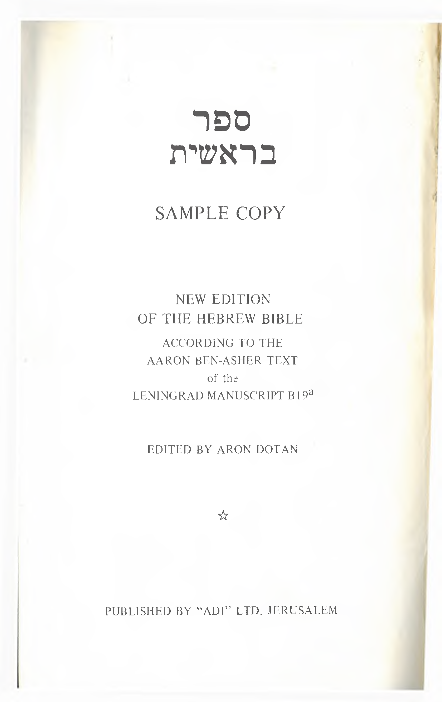

07a.50 The Leningrad Codex as a Representative of the Masoretic Text
רפס תישארב
SAMPLE COPY
NEW EDITION OF THE HEBREW BIBLE
ACCORDING TO THE AARON BEN-ASHER TEXT of the LENINGRAD MANUSCRIPT B19a
EDITED BY ARON DOT AN
☆
PUBLISHED BY “ADI” LTD. JERUSALEM
תטיסרבינוא ביבא־לת TEL-AVIV UNIVERSITY
Prof. E.J. Revell
א
תישארב
והת אבא
התיה
ץראהו
:ץראה
תאו
םימשה
תא
םיהלא
תישארב
ארב
תישארב
:םרפה בוט־יכ
6
·
ג ד
ינפ־לע רואה־תא
7>
·.·
תפחרמ
םיהלא
■(·
·.·:
םיהלא אריו
חורו :רוא־יהיו
־־5:
1
:ן- ·
: ע· 6
·
”
יהי רוא
םיהלא
םוהת
ינפ־לע
ךשחו
והבו רמאיו
"
־ <
םוי ה
רואלוסיהלא
ארקיו
:ךשחה
ןיבו
רואה
ןיב
םיהלא
לדביו
ו ז
:םימל ןיבו
ןיב □ןמ
עיקרל
תחתמ
דחא: לידבמ רשא
םון יהיו םןמה
רקב־יהד םימה ןיב
ךותב לדבה
ח
־יהיו
“1: ’
םימש
7 67*
עיקרל
^7 >·1 ־
םיהילא
·9
·.·:
ארקיו
:ןכ־יהיו
·־ : 571
ן·· 1
״’ ג־ 7 7 ^·1 “ :ן- ·
ברע־יהר עיקר 'עיקרה־תא עיקרל :ינש
םוי
·· · 1
ארק הלא יהק םיהלא
ךשחלו רמאיו
םיהלא
לעמ
רשא רקיב־יהיו
5־
·.· 1
?
־1: ·
שעיו םימה ברע
-
- ·
·.·/·.·
ט
הארתו
דחא
םוקמ־לא
םןמשה
תחתמ
םןמה
ווק:
םיהלא
רמאיו
ארק י בשע אי
םןמה אשד
·.·
הרקמלו ץראה
7 7 ·.·
1 ·.· ·.·
ץרא
השביל
וסיהלא
ארקד
:ןכ־יהר
השביה
אשדת
-1: >״
םיהלא
·.·:
·
רמאייו
·.·ג-
:בוט־יכ
1
םיהלא
אריו
םימי
־ ·6 גע־־ ·.·:
־
־יהר
ץראה־לע
וב־וערז
ונימל
ירפ
השע
ירפ
ץע
ערז
ע.יךזמ
בי
ירפ־השיע
ץעו
והנימל
ע.יךןמ
בשע
אשד
ץראה
אצותו
:ןכ
רשא ערז
גי
רקיב־יהיו
ברע־יהיו
:בוט־יכ
םיהלא
אריו
והנימל
וב־וערז
רשא
:ישילש
םוי
·1
ע : ·
ןיב םויה
די וט
ןיבו עיקרב
לידבהל ויהו
תרואמל
:םינשו
םימילו
םןמשה
עיקר?
תיריאמ םידעומלו
הןי תתאל
םיהלא ויהו
רמאיו הלילה
םיהלא
שער
:ןכ־יהר
ץראה־לע
ריאהל
זט
תוריאמה ןטקה ע.יקרב
ינש־תא רואמה־תאו םיהלא
זי ןיב חי
לידבהלו
םויה ןתח םתא םויב הלילבו
תלשממל
לידגה
רואמה־תא הלילה
:םיבכוכה לשמלו
תאו :ץראה־לע
ריאהל
םל טי
רקב־יהר
ברע־יהיו
:בוט־יכ
םיהלא
אריו
ךשחה
ןיבו
םןמשה םילדגה תלשממל םימשה
רואה :יעיבך רמאיו
כ
ץראה־לע
ףפוען
'ףועו
היח
ץרש שפנ
םןמה
וצרש:
םיהלא
אכ
תאו
םילדגה
םנינתה־תא
םיהלא
ארביו
:םימשה
עיקר
ינפ־לע
ףוע־לכ
תאו
םהנימל
םןמה
וצרש
תשמירה
רשא :בוט־יכ
םיהילא
היחה
1 אריו
שפנ־לכ ףנכ
והנימל
ורפ בכ
רימאל
םיהילא
םתא
ךרבר
גכ
־יהד
ברע־יהר
:ץראב
ברי
ףועהו
םימיב
םןמה־תא
ואלמו
ובךו
:ישימח
םל
רקיב
3
PRESENTED TO THE PARTICIPANTS OF THE FIRST CONGRESS OF THE INTERNATIONAL ORGANIZATION OF MASSORETIC STUDIES (IOMS) LOS ANGELES, SEPTEMBER 1972
© ALL RIGHT RESERVED
PRINTED IN ISRAEL
ב
תישארב
תישארב
אוה
יעיברה
רהנהו
רושא
(
7
·
: ־ ח׳ 7:ן
וט
הדבעל
ןדע־ןגב
והחניו
ךליהה
תמדק ?·1: '1! ג־ ־ 6 םדאה־תא
־1
אוה
לקדח
׳
’ ·י, " 1
ישילשה
*
־ 5 *
רהבה
~ ־
םיהילא
:תרפ חקר הוהן
ןגה־ץע לכא זט ךלכא ; ונממ זי
לכמ רימאל ונממ יכ םויב
םדאה־לע לכאית אל
םיהילא בוט ערו
וצר הוהן תעדה
ץעמו
:הרמשלו :לכאית
חי
־השעא
ודבל
·.··.·:
5־6 17
םדאה
תויה
בוט־אל
·ג :7? ןד ד
םיהילא
הוהי
רמאיו
·
: גד ·.·:
טי
תאו
הדשה
תיח־לכ
המדאה־ןמ
םיהלא
רצר הוהן
:ודגנכ
:תומת
ג 7 ן
תומ ול רזע
רשא
לכו
ול־ארקי־המ
תוארל
םדאה־לא
אביו
םןמשה
ףוע־לכ
כ ■שילש
תומש
־לכל רזע חקר תחא
אצמ־אל
םדאה
םדאלו
:ומש ארקיו הדשה םדאה־לע
תיח המדרת
היח אוה לכלו 1
םיהלא
שפנ םימשה
םדאה ףועלו לפר הוהן
ול־ארקן המהבה :ודגנכ
ןשייו
אכ
בכ
־רשא
עלצה־תא
ומיהלא
ןבר הוהי
:הנתחת
רשב
ריגסיו
ויתיעלצמ
גכ
םעפה
תאז
םדאה
רמאייו
:םדאה־לא
האבר
השאל
םדאה־ןמ
חקל
:תאיז־החקל רשבל :דחא
דכ
שיאמ רהו
יכ ותשאב
השא
ארקי
תאזל ומא־תאו
ירשבמ ויבא־תא
רשבו
ימצעמ םצע שיא־בזעי'ןכ־לע
קבדו
הכ ג א
םורע
היה
'שחנהו
7גד ד
־: 7 7
:וששיבתי
7ן
· :
אלו
ותשאו
: >
: · : 6
םדאה
7ן 7 7;
םימורע
·
־:
'םהינש
: ” 7
ויהיו
—| : >
־יכ
ףא^השאה־לא
רמאיו
םיהלא
הוהן
השע
הדשה
ליכמ תיח
רשא ולכאת
ב
שחנה־לא
השאה
רמאתו
:ןגה
ליכמ ץע
אל
םיהילא
רמא
ג
םיהלא
רמא
ןגה־ךותב
רשא
ץעה
ירפמו
:לכאנ
ןגה־ץע
ירפמ
ד ה
השאה־לא וחקפנו
ונממ
שחנה
רמאייו
םכלכא
:ןותמת־ןפ יכ
'םויב
םיהילא
ועגת וב
ונממ אלו
:ןותמת
יכ ע.ךי םיהלאכ'םתייהו
·
ן··
· : · 7
ולכאת
אל תומ־אל
םכיניע
”1 ” 67
ץעה י
יכ בוט
ה&אה
ארתו
7 7ן · ד ג·
ג־·־
7 " ן
:ערו
בוט
77ן
(
וירפמ ועדר
ז
חקתו םהינש
ליכשהל יניע
'ץעה 'הנחקפתו
דמחנו :לכאייו
: ·7
יעדי םןניעל המע
אוה־הואת השיאל־םג
יכו ןתתו
לכאמל לכאיתו
־תא ח
7
ועמשיו
:תריגח
םהל
ושעיו
הנאת
: ·· 7 -- -: ( 7 .·7 ־: 1 ־1• : :
הלע
'ורפתיו
םה
םמריע
יכ
<· ··1 \ 7 ··6 ·ן- ;
ותשאו םדאה־לא
ט יכנא י
םדאה
אבחתיו
םויה
חורל
ןגב
םיהלא
הוהן
ארקיו
:ןגה
ץע
ךלהתמ ךותב
םיהלא םיהלא
לוק הוהן הוהן 'ינפמ
םריע־יכ
אריאו
ןגב
יתעמשךל׳ק־תא
רמאיו
:הכיא
ול
רמאיו
אי
ךיתיוצ
רשא
ץעה־ןמה
התא
םריע
דיגה ךל יכ
ימ
רמאיו
:אבחאו
בי גי
7 ג־ ד
התתנ השאל
רשא םיהלא
־: ג־.·
השאה
7ן 7 67 7ן · ד
םדאה רמאיו
7
:תלכא רמאייו :לכאו ץעה־ןמ
7 7ן : 7
־
· .·7
ונממ־לכא יל־הנתב
־: 7
אוה
: · : <·
יתלבל ידמע
הוהן
5
תישארב
תישארב
א
־ותיחו
: ן-:
שמרו
המהב
; ··
·.·
r:~ 7T
הנימל
היח
־ t ; · ־
שפנ
ץראה
אצות
םיהלא
רמאיו
דכ
':
a: I 7 t t ·· · ·.·: ·.· J
-
־תאו ־יכ
הנימל םיהלא
• V ·.·:
ץראה אריו
והנימל
ע— A” · :
המדאה
kT t־:!t
תיח־תא
םיהלא
שער שמר־לכ
:ןכ־יהד תאו
הנימל
ץרא 'המהבה
הנימל
·.· r:
־ : ” ד : · ד■ : "1 ־
הכ
םיה
תגדבודרד
ונתומדכ
ונמלצב
םדא
השענ
םיהלא
רמאיו
:בוט
וכ
־לע
שמרה
שמרה־לכבו
ץראה־לכבו
המהבבו
םןמשה
ףועבו
ותא
ארב
םיהלא
םלצב
ומלצב
םדאה־תא
1
םיהלא
ארביו
:ץראה
מ
םיהלא ם:משה
םהל ףועבו
רמאיו 'םיה
םיהלא
םתא
ךרבד
תגדב
ודרו
השבכו
:םתא ץראה־תא
ארב ואלמו
הבקנו וברו
חכ רכז ורפ
־תא ־רשא
םכל
הנה יתתנ ץעה־לכ־תאו
םיהלא ץראה־לכ
רמאיו
:ץראה־לע
ינפ־לע
רשא
תשמירה ערז
1 ערז
היח־לכבו בשע־לכ
טכ
־לכלו
־לכ־תא
ץראה היח
תיח־לכלו שפנ
וב־רשא
:הלכאל
היהי
םכל
ערז
ערז
ץראה־לע
שמורולכלו
ל וב
ץע־יךפ םןמשה
ףוע
־הנהו
השע
רשא־לכ־תא
םיהלא :יששה
אריו םוי
:ןכ־יהד רקב־יהיו
הלכאל ברע־יהיו
בשע דאמ
אל קרי בוט
יעיבשה :השע
םויב
םיהלא ותכאלמ־לכמ
רשא
לכד
:םאבצ־לכו םויב
יעיבשה
ץראהו השע
םןמשה רשא
ולכד ותכאלמ
'תבשיו
ITT 77־: k :
־ :
T ·
·
· : ־ J ־
: ·- AT t J7 ־: k :
־ :
באב
ותכאלמ־לכמ'תבש
וב
ותא יכ
שדקד
יעיבשה
םוי/תא'םיהלא
ךרביו
ג
:תושעל
םיהלא
I ־ ־: V 7:
ארב־רשא
JT T 7
הוהי םיהלאV 7! JT : בשע־לכו הדשה דבעל ץא םדאו
תושע
םויב
ÿ ־:
:
AT : |T · : I 7kT T :
םארבהב םרט היהי 'םיהלא
ץראהו הדשה הוהן
םימשה ולכו יכ אל
תודלות :םןמשו חמצ־!
חיש ריטמה
··J- t ־־
ד הלא ץרא ה םרט
s :
7 J”
ץראב ץראה־לע
:המדאה־ינפ־לכ־תא ויפאב תמשנ
חפד
הקשהו המדאה־ץמ
ץראה־ןמ 'רפע
הלעי. םדאה־תא
דאו םיהלא
:המדאה־תא רצייו
הוהן
ו ז
םדקמ המדאה־ץמ
ןגה ץעו דךפן
'םשמו
ןדעב־ןג
םיהלא
הוהן
עטיו
םיהלא
הוהן
חמציו
:היח :רצי
שפנל
םדאה םדאה־תא
יהיו םש
ח םייח ט םשד
רשא
ךותב
'םץחה
ןגה־תא
ץעו תוקשהל
לכאמל ןדעמ
בוטו אציי
הארמל 'רהנו
דמחנ
:ערו
בוט
ץע־לכ תעדה
י
ץרא־לכ ןבאו
תא הלידבה
בבסה בוט םש
אוה
ןושיפ
דחאה
םש
אוהה
ץראה
בהזו
םש־רשא
:םישאר :בהזה
העבראל
אי היהו יב
הלדחה
םשו
:שוכ
ץרא־לכ
תא
בבוסה
אוה
ןוחיג
ינשה
רהבה־םשו
:םהשה
גי די
4
ו
תישארב
תישארב
ז
המדאה
ינפ'לעמ
'יתארב־רשא
; ”9 17 ־: 7 7
·· -
·
7 7
7
םדאה־תא
7 7 7>
7
החמא
·.· : ·.·
הוהי
רמאייו
:ובל
7
:
·.·ע
· ן -
:םתישע
יכ
יתמחנ
יכ
םימשה
ףוע־דעו
שמר־דע
המהב־דע
םדאמ
ח ט חנ
םיהלאה־תא
<·
7: |7
ויתרדב
היה
םימת
<•־ : ן
·.· Aτ
:הוהן
יניעב חנ חנ שיא
אצמ ןח תדלות
חנו הלא
נ ־ ־ ·7 ·־19
:
·.· ··<
קידצ
י אי בי
:תפי־תאו םיהלאיאריו
םח־תא :סמח
םש־תא ץראה
םינב אלמתו
השלש םיהלאה
חנ
דללו
ינפל
:חנ־ךלהתה תחשתו
ץראה
תיחשה־יכ חנל
םיהלא
־לע
וכרד־תא
רשב־לכ
התחשנ
הנהו
ץראה־תא
־יכ גי
ינפל
אב
רשב־לכ
ץק"
רמאיו
: ץראה
ךל די
השע
תןבמ
ץוחמו םישמח-הבתה
וט
םתיחשמ
:ץראה־תא התא ךרא
תרפכו המא
יעהו הבתה־תא שלש
תואמ
םהינפמ השעת
סמח םינק
התא
השעת
רשא
ץראה רפג־יצע הזו
האלמ תבת :רפכב
זט
המא־לאו
הבתל
השעת
<·.·־:־ ־ ״ 7 · ·.· - 7
ורה׳צ
נ ־
:התמוק
המא
םישלשו
: ?·
הבחר
המא
־ 7 7 : 7
- 7> 1 7 7|
םישלשו
םינש
·.·7 - - ·· 7> ; · 6' 7 J7 (··:־ : · (' : · >·
7 · : - : 7
הדצב
הבתה
חתפו
הלעמלמ
הנלכת
: - נ·,·
זי חי
רשב־לכ יתמקהו
:עוע
תחשל
םיתחת
םישת ץראה־לע ץראב־רשא
םענלובמה־תאאיבמ לכ
םןמשה
עבהינאו חור םייח
תחתמ
:השעת וב־רשא
ךינב־ישנו
,ךתשאו
ךינבו
התא
הבתה־לא
תאבו
ךתא
יתירב־תא
טי
תיחהל
הבתה־לא
איבת
לכמ
םעש
רשב־לכמ
יחה־לכמו
:ךתא
לכמ כ אכ
הנימל התאו
ךל־חק :הלכאל
המהבה־ןמו :תלחהל ךל
םהלו
והנימל ואב;
ךילא
היהו
ךילא
ףועהמ לכמ תפסאו
םעש
והנימל רשא
לכאי
:ףהי
הבקנו
ךתא רכז המדאה שמר 'לכאמ־לכמ
· 7 |־ ־: 7 ־: 7< ”1 7” : 7 ־ : 7^ ” 67 71 : 77? : 971 5 7 .*7 : 7 : 7|
בכ ז א ■בש
: τ : "
הוהי ינפל
חנל רודב ותשאו שיא ףועמ םג :ץראה־לכ
ב ג
·.·
-
:השע רמאיו יתיאר העבש
קידצ
העבש :ותשאו ינפ־לע
?··1 τ ןד
םיהילא
ןכ ךתא־יכ
·ע ····
הוצ
ותא הבתה־לא
רשא ךתיב־לכו
· ·
חנ לככ
6 ג
שעיו התא־איב
”
ךל־חקת אוה םעש שיא
הרוהטה הרהט
ערז
תלחל
הבקנו
רכז
המהבה רשא אל העבש
:הזה ליכמ 1 המהבה־ןמו םימשה
העבש
םוי ד
םיעברא
לעמ ינפ
יתי^ע
ץראה־לע רשא
ריטממ
העבש יכנא יתיחמו
דוע הלןל
יכ םימיל םיעבראו
םוקןה־לכ־תא
הנש יה ותא ז
תואמ וינב־ישנו
שש־ןב
חנו
:הוהן
ותשאו
וינבו
חנ 0
:ץראה־לע
והוצ־רשא איביו
חנ לככ
שעיו הייה םןמ
:המדאה לובמהו
ח
המהבה־ןמו
הרוהטה
המהבה־ןמ
:לובמה
ינפמ ימ
הבתה־לא
9
תישארב
רשע
ןניק
ימי־לכ
ויהיו
:תונבו
םינב
דלויו
הנש
תואמ
שמח
7
לאללהמ
יחיו
:ן- ע· ן- :— : ··
:תמיו
הנש
תואמ
7 >וד וז־
·· >
תישארב
ה
הנמשו
די הנש
עשתו
: ־7
םינש
וט
7•
· ג
ודילוה :תונבו
ירחא םינב
לאללהמ הנש דלויו
־1: נ· ־1־: ־ : ·· ··-:ן-
יחיו
7’>
7
(-
7 67
7 |
: 7; ” >
7 67
הנש דלויו הנש
תואמ הנש תואמ
הנמשו תאמו הנמש
: ג- 7 67 >־ ·.·
הנש הנש
7 7>
ךונח־תא
םיששו
:דרי־תא
·.· 717
הנש
םיששו
7 67 >- ·.·
7 ל· : · נ·
תואמ
הנמשו
״ >
:
םישלש
ג ג·
דלויו הנש
7 7
םיעשתו
שמח
לאללהמ
7 ”> : · : ·
7 7
ימי־לכ
7 · ··J - ן : ··
: ־5• : · ·9
םיתש ודילוה
־1: · ·.·'··
דרי־יחיו 'ירחא
דרי־יחר
זט
םינש דרי־תא
·- :
ויהיו :תמיו :ךונח־תא
זי חי טי
-7 1
תואמ
” >
עשתו
הנש
םיששו
: ־7
7 7
’
: *
םיתש
: ·>־
דרי־ימי־לכ'ויהיו
.י,,·.
5 "
7
·־1:
דלויו
־תא חלשותמ־תא
הנש
םיששו
ךונח שמח
יחיו םיהלאה־תא
ךונח
ודילוה
ירחא
:תונבו
7 |
םינב
דלויו
כ
7>•
*.·
(-
:תמיו
אכ הנש
ךלהתה
:חלשותמ
בכ
םיששו
ךונח שמח
ימי־לכ
יהיו
:תונבו
םינב
דלויו
הנש
תואמ
גכ שלש
חקל־יכ
ונניאו
םיהלאה־תא
ךונח
ךלהתה
:הנש
תואמ
תאמו םןתש
הנש ךמל־תא
7 7>
: ־4
םינמשו
עבש
: ·(·
:־ נ· 5 7 ־ ־!·.·
חלשותמ
יחיו חלשותמ
ודילוה
'ירחא
יחה
:ךמל־תא
שלשו :םיהלא דלוה
דכ הנש
ותא וכ הנש
:7 |·
יעיבש הכ
'ויהיו
7 : ג··
ימי־לכ ־יחיו
:ן- •
:תונבו
·־ :
7 1
םינב הנש
דלויו תואמ
הנש עשתו
תואמ עבשו הנש'םיששו
הנש עשת
'םינומשו חלשותמ
זכ חכ
: ·
7 7
; -7 ” > 7 67 (- 7 7 >•
7 67 ־7 ן
: ־7 " >
77
7 ־ ”> ־ 5 · ·
:תימה
ומש־תא
ארקיו
:ןב
דלוה
הנש
תאמו
הנש
םינמשו
םןתש
ךמל
טכ
רשא הנש 'םיעבשו
המדאה־ןמ 'םיעשתו עבש
שמח חינ־תא ךמל־ימן־לכ
:
ונידד
:
ןרבצעמו
.
ונשעממ 'ירחא
ודילוה
'יחה
:תונבו
םינב
הז
. ס»
. רמאל
ץ ו
ונמחני ךמל־יחיו דלוה
:הוהי תאמ הנש
חנ הררא שמחו
ל
אל
:ן- · ·1 ” נ״ 7| 7 7
; ·.· 717
·.·
7 67 ־ ג 7 ־ 7 >··
תואמ םדאה ־תא
שמח־ןב לחה־יכ 'םיהלאה־ינב
חנ־יהיו 'יהיו
ואריו
:תפי־תאו :םהל
:תמיו
הנש םש־תא
תואמ חנ
םח־תא
ודלי
תונבו
המדאה יכ תבט הנה
עבשו דלויו ינפ־לע
בל הנש ו א הנש ב ברל
7
·
7| :7
: ·־
: ··17 7 7 ? \ < 7 67 7:- |7 J ·־ : >
7> ־
רמאיו
- ג 7
:ורחב
רשא
לכמ
םישנ'םהל
וחקיו
· > ־! 77 7 7|
: 7* 7 7 17 J > ·־6 7 ·- : 1 > 7 7 7•
םדאה
ג תונב
” 77
האמ רשא
וימי
ויהו
: 7 ג 7 7
ןכ־ירחא
7 67
אוה
רשב םהה םגו
ג
םימיב
םגשב
: ־ >־
7
םלעל ץראב
'םדאב
יחור
ןודי־אל
17 7 7
·
7
|
1
הוהי
7
:
:
ויה
םילפנה
:הנש
םירשעו
ד
םיריבגה
המה
*9
־ ·
ץ·7
םהל
7 67
ודליו
:7 : >
םדאה
7| 7 7
תונב־לא
; ג
7
ואבי
י
םיהלאה ישנא
: ״4
ינב םלועמ
7| :7
־ : ”7
7>
··
רשא
־: 77
7
:םשה
־ ו··
ובל קר
תבשחמ
רצי־לכו
ץראב
םדאה
תער
יכ הבר
הוהן
ריטפמ ה אריו
־לא
בצעתיו
ץראב
םדאה־תא
השע־יכ
הוהי
םחניו
·־47 7 } 7 |· 7 77 7 7| 7 7> 7 67•• 1 ־־ : ־ >·· 7
:םויה־לכ
י ער
־ 7 ־ ן
8
י
תישארב
־תא אי בי
חלכ
ןביר ןיבו
אצי רושא ןיב הונינ
אוהה ןסר־תאו
ץראה־ןמ
:רעבש
:חלכ־תאו
ריע
ץראב
הנלכו תיביחר־תאו
חנ
דכאו הונינ
גי די
םיבהל־תאו םיתשלפ
םשמ
םימנע־תאו ר&א
ואצי
־דלי
םידול־תא םיחלסכ־תאו
םירצמו םיסרתפ־תאו
:הלידגה
אוה ריעה :םיחתפג־תאו
־: ·.· ד : ג · ·גד : · : ט
- : ·. ·
: ·.·
־ : \ ·
- : ·.. ן· :1 ·.·
: ·.·
וט
:תח־תאו
ורכב
ןדיצ־תא
דל;
ןענכו
:םירתפכ־תאו
זט זי
־תאו
יקרעה־תאו
־1 :־17 : ·.·
יוחה־תאו
:ישגרגה
- · : ד ן· : ·.· ן■ · ;· : ·.·
תאו
: *7
ירמאה־תאו
יסוביה־תאו
- :
: ·.·
: 7
·
·
: ·.· ן- ־: ד ־6 ? נ ~
וצפנ הזע־דע
· : : >
חי טי כ
תוחפשמ הכאיב םתחפשמל
־ דA ־־· •
: · : : לד
רחאו
הררג
~
־
םח־ינב
ד
: ··
יתמחה־תאו הכאיב הלא
ןדיצמ :עשל־דע
· · 1 ־: גד :
־ : ד 7
ירמצה־תאו ינענכה
: ־ ־: ·
םייבצו
־ · ן· : ·.· ןד ־ : ץ- : 7
ידוראה־תאו לובג המדאו
יהיו הרימעו
:יניסה :ינענכה המידס
ן- : - ־: ן· ־1: ·
: >
ן-
: $ ד - ■גד
: ־ : גד
: 7 ־ ןד -
·.·ג··
אוה־םג
6
יבא אכ בכ
־: •
דשכפראו
־
דלי רושאו
ל־\
םשלו םליע
:
" עד : ־ A : ־ : ־ : ־7
ינב םש
·7
: ג"
:לודגה
־ ע 1
"17
:םהיוגב תפי
םתיצראב יחא
םתינישלל רבע־ינב־לכ
· : 1 דA : ־ :
לד :
·.·ג'.־
.— ל·
·· ־.·
ד ; ··
גכ דכ הכ וכ
דלן גלפ יכ
חלש־תא וימיב ףלש־תאו
דשכפראו דחאה םש דדומלא־תא
· דד:
ג" ·.·ןד ד ·.· ·.·
רתגו
:שמו ינש םינב דל;ןטקר
; ג··
ד ·A
לוחו דלי
\ ־7
: ג·· ·.·
רבעלו ויחא
:ןטק;
ינבו :רבע־תא םשו
:םראו דלי
דולו חלשו הגלפב
: .·7 ־ ד ג־ 7 ן״ 7
ץראה
םרא ץוע
הכזכ טכ
־תאו בבוי־תאו
דA
:הלקד־תאו
לזוא־תאו
םרודה־תאו
:חךץתאו
הליוח־תאו
רפוא־תאו
ג· : 7 ־: · ז7 : 7
:אבש־תאו
לאמיבא־תאו
: ןד : 7
גד ; ·.· -: ן· ד ’7 : 7
תומ־וצח־תאו לבוע
ל אל בל
הרפס
הכאיב
:םדקה תחפשמ רחא
רה הלא ץראב
:םהיוגל
םרגה
אשממ םתיצראב ודרפנ
םבשומ םתינישלל
יהר
:ןטק; םתחפשמל
ינב
םש־ינב
הלאמו
םהרגב
םתידלותל
הלא־לכ הלא חנ־ינב :לובמה
־ ־ 1
שב'ע'
איבא
םדקמ הבה ג
םעסנב והער־לא
7167
יהיו שיא
־1: 7 : ד ; עד ·
:םידחא ורמאיו
־: ד ·1
ג· . ד לד7 1 . עד 7 דA : ד 7
םירבדו ובשיו
הפש תחא רענש
ץראב
ץראה־לכ העקב
יהר ואצמיו
:םש
1:
ג ־ ד ־ •
רמחהו םימשב ד תיארל ה ןה םע ו םהמ
ןבאל הנבלה ושארו'לדגמו דריו הוהי הוהי רמאייו רצבי־אל
'התעו
· ד: :
: ד
-
"
םהל
יהתו ונל־הנבנ
הפרשל הבה 1
גיז ־ י : 7 גד ·
ינפ־לע
ריע :ץראה־לכ :םדאה
: ·7 · A< ד ל : ג״ ןד ד ןד ג־־
ונב ינב םלהה
רשא הזו
תושעל
:
· · ג ד 7ל ־1 7
םינבל
הפרשנו ורמאיו ץופנ־ןפ
:רמחל םש לדגמה־תאו תחא םלכל
הנבלנ היה םהל ונל־השענו ריעה־תא 'דחא
הפשו
· ל : .
~ ״ נ· ־ ־: A : ־ ד ו ־ ־ ג״ ·· ·.·
:”ל
: \ ־
: ד >ד
ז
ועמשן
אל
רשא
םתפש
םש
הלבנו
הדרנ
הבה
:תושעל
ומח
רשא
ליכ
ץראה־לכ
ינפ־לע
תפש
ללב הוהי
םש־יכ
םשמ לבב
םתא המש
ץפר הוהי ארק
ןכילע
:והער
שיא תפש תנבל
:ריעה
ולדחיו
ח ־לכ ט
13
חנ
תישארב
ט
'יתירב־תא
יתמקהו
:ץראה
לכל תיח
הבתה
יאצי
'לכמ
םכתא
אי
לובמ
דוע
היהי־אלו
לובמה
יממ
דוע
רשב־לכ
־ >
9
: ן ;·.·:·
־ ־ 6
· ע··
~ ~1
תרכץאלו
- י ’ ל
םכתא
ינא־רשא
'תירבה־תוא
:ץראה רמאיו םיהלא תאז
תחשל
יב
־תא
:םלוע
תרידל
םכתא
רשא
היח
שפנ־לכ
ןיבו
םכיניבו
יניב
יג ןתנ
יננעב רשא
היהו יתיךב־תא
:ץראה
ןיבו יתרכזו
יניב
תירב
תואל
:ןנעב
תשקה
התןהו התאךנו
ןנעב
יתתנ ץראה־לע
יתשק יי וט ןנע
דוע
היהי־אלו
היתיארו
ןנעב
רשב־לכב תשקה
היח התיהו
־5.7 : 7 ד 67 : 1 ·.·:|· >
- ־ •
םימה רכזל לע
שפנ־לכ :רשב־לכ םיהלא
ןיבו
י ’ ־
םכיניבו
J ·
תחשל
זט
יניב לובמל תירב
רשא
רשב־לכב
היח
שפנ־לכ
ןיבו
ןיב
םלוע
יניב
יתמקה
רשא
'תירבה־תוא
תאז
חנ־לא :ץראה־לע
םיהלא רשא
רמאיו רשב־לכ
:ץראה ןיבו
זי
יבא
:ןענכ המדאה
אוה חנ שיא
םחו לחיו
םש םחו
תפיו :ץראה־לכ
הבתה־ץמ
הצפנ
הלאמו
םיאציה חנ־ינב
חנ־ינב הלא
ששי חי ףחיו טי כ
השלש
יבא
םח
אריו
:הלהא
ךותב
לגתד
רכשיו
ץיה־ןמ
תשיו
:םרכ
־תא תא תורע
חקח םש תפיו וסכיו
ט· ·.· : נ-
:־ ־
תינריחא
־: נ ־ ·
:ץוחב
ויחא־ינשל םהינש
וכליו
ויבא דגיו םכש־לע
: ע.· : ·· ·.· —ן :
־
תורע ומישיו
אכ בכ
גכ
תא
עטיו ןענכ הלמשה
- · : 7 -7•
וניימ
חנ
ץקייו
:ואר
אל
םהיבא
תורעו
תינרחא
םהינפו
םהיבא
דכ
םידבע
דבע
ןענכ
רורא
רמאיו
:ןטקה
ונב
ול־השע־רשא
תא
הכ עדיו
תפי
:ומל
דבע
ןענכ
יהיו
םש
יהלא
הוה:
ךורב
רמאיו
:ויחאל
וכ זכ היהי
רחא 'תואמ
חנ־יחד עשת
:רמל חנ־ימי־לכ
דבע
..
.
...
-
ןענכ
יהיו :הנש
- 7ן
םש־ילהאב םישמחו
ןכשיו הנש'תואמ
תפיל שלש
םיהלא לובמה
..
. >
־ ־ 6
:ן .
_ _
חכ
טכ
'ויהיו
;ן.-
:לובמה
רחא
־ ־־ 1
םינב
םהל
ודלויו
םש םח תפיו
7
7 ■(·:
·־7 : (
.*
677
7□
---(
:תמיו
־17
הבש חנ־ינב
7 67
- ־: · ט
םישמחו תדלות
הנש 'הלאו
7 7
: ג : ··
: ” ·.·
י א
ךשמו שישרתו
לבתו השילא
ןויו
ידמו
גוגמו
רמג :המרגתו
ב ג ינב תפי הד תפירו
ןוי
ינבו
זנכשא הלאמ°
ינבו רמג :םינדדו
: ־7
ינבו המערו
:םהיוגב התבסו
:סריתו םיתכ םתחפשמל הליוחואבס
· : 6 : · : : 7> : ·.·״ 1
···4 - · ג ־ : 7
לחה אוה רמאי'ןכ־לע
דרמנ־תא הוהי
דל:
:ןדדו
שוכו ד:צ־רבג
אבש היה־אוה
ינפל
ונישללשיא ינבו
שוכ
םתצראב :ןענכו
'םיוגה
ייא
טופו
םןרצמו
המער
ינבו
:ץראב
רבג
ו ודרפנ ז םח שוכ
· : ;
אכתבסו תויהל
ח
ט
ךראו
לבב
ותכלממ
תישאר
יהתו
:הוהי
ינפל
דיצ
רובג
דרמנכ
י
12
די
תישארב
ךל ךל
גי
7 י : ־6
ירבעה ילעב
םרבאל רבע םהו
: ־ : 7□
—
דגיו יחאו
־ 7 ·
טילפה ליכשא
אביו
-7
:םידסב ירימאה
· : ן
בשיי ארממ
אוהו יבילאב
וכליו
א" :
ןכש
םרבא אוהו
־ 5
יחא
ידילי די 1 הלא וט
ויכיבח־תא םהילע
ויחא קריו :ןד־דע
הבשנ ףידךיו
קלחיו
יכ
םרבא
עמשיו
תואמ
שלשו
רשע
:םרבא־תירב ותיב
הנימש
זט
:קשמדל
; - 7ן ·.·
־7 ·.·
בשיו םישנה־תא
1
םגו
לאמשמ בישה
· : ^
: (- ·.· ־ ·ז
·· ·
יז ־:77
רשא ושכרו
הבוח־דע ויחא
־
: \
7>•
םפדריו
—א· ־1• : : ”
םכיו
וידבעו שכרה־לכ
־:־7 7>
אוה תא
2
7 7 :
־7
טול־תא
םגו
: ־
־תא זי
תוכחמ
ובוש
ירחא
יתארקל
םידס־ךלמ
אציו
:םעה־תאו
:ךלמה :ןואע
חי
קמע לאל
הוש אוה ןהיכ
ןיח. אוהו
קמע־לא
ותא םחל
רשא איצוה
םיכלמה־תאו ךלמ םלש
רמעלרדכ קדצ־יכלמו
טי כ
ךורבו
:ץראו
םןמש
הנק
ןוילע
לאל
םרבא
ךורב
רמאייו
והכךבח
כא ·ש־מח בכ
:לכמ רמאיו רמאיד
:ךל־חק
רשעמ
ול־ןתיו
ךירצ ךדבכ יל־ןת שפנה
ןגמ־רשא םרבא־לא
לא ןוילע םדס־ךלמ
שכרהו
לא
םימש אלו « דכ
ןוילע
הניק ךל־רשא־לכמ רשא ולכא
7| : ע ־ : 7 •
הוהץלא חקא־םאו קר
םירענה וחקי
םה
· : י 7
·7
1 ־: ג·.·
·.· ־ : 7| · : 7 - ->
·
ידעלב
:םרבא־תא
יתרשעה
אלממו
־ : ··
ליכשא
7:7
'רנע
וכלה יתא
7 : > · ·6 7••
רשא
ךןי יתמירה לעב־ךורש
םידס דעו
ךלמ־לא טוחמ־םא ינא םישנאה
7 ·.· ·.·· ־7:
17 7 ·
וט
־לא א ךרכש
ב
ךלוה
7 47 : ־ : 7
היה הוהי־רבד יכנא ןגמ ךל יכנאו יל־ןתת־המ
7 “ 7
הלאה םלבא
ארית־לא
רימאל
הזחמב
ינדא הוה!
םלבא
רמאיו
:דאמ
םירבדה
ורחא
ג ־ : 7 ג·
ןה יל ג וילא ד
םלבא הוהי־רבד
רמאיו
:רזעילא :יתיא
קשמד
אוה יתיב־ןב
יתיב הבהו
קשמ־ןבו ערז
התתב
שרוי
הנהו
:ךשריי
אוה
ךיעממ
רשא אצי.
םא־יכ
הז
ךשריי
אל
םרבא :ץראו רמאית קלחו
: ·· ·.·
1
·.· : 7|1
:םקלח םלבא הברה
ירירע אל רימאל
־םא ה ו
הבשחר
םיבכוכה הוהיב
- נ 7 •
ריפסו ןמאהו
:
־ 7 - ·.· ־ 7 77 ־ 7 - : 7
המימשה :ךערז
אב־טבה ול הכ היהי
רמאיו רמאיו
הצוחה םתא
ותא רפסל
אצויו לכות
_
ז ■שש
םילשכ
רואמ
ךיתאצוה
רשא
יבא הוהי
וילא
:הק רמאיו
ול ךצד
עדא ח ליאו ט
המב תשלשמ
ינדא הוהן זעו
תשלשמ
הלגע
רמאייו
:התשךל 'יל
תאזה וילא החק
ץראה־תא רמאיי!
ךל :הבשריא
תתל יכ
ךיתב טיעה
םתא דריו
המדרתו
: ־ ״ 7> 7 : 7ג
רתבח :רתב אובל
7
הלא־לכ־תא
אל שמ^ה
ריפצה־תאו יהיו
:־ '4 ־ ·.··.·
ול־חןקיו והער
:לזוגו תארקל
:םרבא
םתא
בשיו
־ : ויה
7.י
·7
שלשמ רתו ורתב־שיא םירגפה
־ : 7^•
ןתר י ־לע אי בי
הלפב
17
ךל ךל
דרפה
ךינפל
טול־אשח
:הליאמשאו
הנמיאו
ץראה־לכ
:ונחנא
םיחא
אלה ןימ:ה־םאו
םישנא־יכ לאמשה־םא
תישארב
גי
ךיער
ןיבו
ט
ילעמ
י אנ
תחש
וינפל
הקשמ
יכ הלכ
ןדריה
רככ־לכ־תא
ארח
ויניע־תא
:רעצ
הכאב
םןרצמ
ץראכ
הוהן־ןגכ
הרמע־תאו
םדס־תא
הוה:
שיא להאיו
ודרפח רככה
םדקמ ירעב
עסח טול 'בשי טולו
ןדריה ןענכ־ץראב
רככ־לכ
בש:
טול תא םרבא
ול־רחבח לעמ
:ויחא
אי
בי
הוהיו רמא םוקמה־ןמ
:דאמ
הוהיל
םיאטחו
הארו
'ךיניע
אש אנ
ומעמ
םיער םידס טול־דרפה
ישנאו 'ירחא
:םידס־דע םרבא־לא
יג די
רשא
רפעכ :הנמ:
להאח
חבזמ
ץראה־לכ־תא
יכ
:המיו
המדקו
הבגנו
הנפצ
םש
התא־רשא
וט
ךערז־תא ךערז־םג
יתמשו ץראה
:םלוע־דע רפע־תא'תונמל
ךערזלו שיא
הננתא לכוי־םא
ךל
האר
זט התא
ורשא
ץראה
:הננתא םש־ןבח
יכ ךל
הבחרלו
הכראל
ץראב
ךלהתה
יז חי ־םוק
ןורבחב
רשא
ארממ
ינלאב
אבח בשיו
םרבא
ךלמ ־תאו
רמעלרדפ ךלמ םידס
ךלמ
רסלא 'ערב־תא
ךוירא המחלמ
רענש־ךלמ
ושע
:םיוג
ךלמ
:הוהיל יחח םליע
ב
לפרמאימיב לעדתו
א
די-ע־בר
רבאמשו
ךלמ
ךלמ ו :חלמה :ודרמ
םייבצ אוה םי הנש
םידשה הרשע־שלשו
המדא
ךלמ ורבח
קמע־לא
רמיעלרדכ־תא
1 באנש 'הלא־לכ ודבע
הרמע
ךלמ :רעצ־איה 'הרשע
םייובצ עשרב ג עלב ד םיתש
הנש
7 7> 7 17
7 :
:
7:7 6 7
: ”> 7 : ״ 7 7 7 : > 7 :
-->
רשא ותא וכח הושב
םימיאה
·
5־ 47
'םיכלמהו םהב
: ־ : ־ ·
תאו
רמעלרדכ
7
:7:7
םיזוזה־תאו
הנש אב םינרק
7 7
47
תירתשעב
הרשע
עבראבו 'םיאפר־תא
: ־ : ־ 7 : ־·
ה
: 7־7
; 67 : " 7| ·· ·
: ־ : : נ ־1: ·־ : ·.· ־ 7
: 7 ·
:רבךמה־לע יקלמעה
רשא הדש־לכ־תא
ןראפ
ריעש דע ליא אוה שדק
וכח
םררהב 'טפשמ
יריחה־תאו ןיע־לא
ואבח
:ם:ת:ךק ובשח
ו ז
הדמע
ךלמו
םדס־ךלמ
אציו
:רמת
ןצצחב
בשיה
יךמאה־תא
'םגו
ח
'םתא
וכרעיו
רעיצ־אוה
עלב
ךלמו
םייבצ
ךלמו
'המךא
םייבצ ךלמו
ךלמ םיכלמ
'לעדתו
םליע
העברא
ךלמ רסלא
רמעלךדכ ךתראו
תא רענש
:םידשה ךלמ
ךלמ
קמעב לפרמאו
המחלמ םחג
ט
םדס־ךלמ
וסנח
רמח
תראב
תראב
םידשה
קמעו
:השמחה־תא
י
םידס
שכר־לכ־תא
וחקח
:וסנ
הרה
םיראשנהו
המש־ולפח
הרמעו
יא
יחא־ןב
ושכך־תאו
טול־תא
וחקח
:וכליו
םלכא־לכ־תאו
הרמעו
יב
16
חי
תישארב
אריו
גכ
קידצ
הפסת
ףאה
רמאיו
םהרבא
שגה
:הוהי
ינפל
דמע
ונדוע
דכ ־אלו ךל הכ
חפסת הללח
ףאה :הבךקב
ריעה
ךותב
םקידצ
םישמה
רשא
םקידצה
םישמה
ילוא שי. ןעמל
:עשר־םע אשת
םוקמל
עשרכ
קידצכ
היהו
־םא וכ
הוהן
רמאיו
:טפשמ
עשר־םע השעי.
קידצ אל
תימהל ץראה־לכ
הזה
רבדכ
1 ךל
תישעמ הללח
'טפישה
םוקמה־לכל
יתאשנו
ריעה
ךותב
םקידצ
םישמח
םידסב
אצמא
זכ חכ
ינדא־לא תיחשתה
רבדל השמח
יתלאוה םקידצה
אנ־הנה םישמח
רמאייו ןורסח:
ןער
םהרבא ילוא°:רפאו
:םרובעב יכנאו
רפע
םיעברא
םש
אצמא־םא
V 7 : 7 ־ J7 : V ·
תיחשא
אל
רמאיו
· : ־ J ·.·
ריעה־לכ־תא
השמחב
־ A*
־ ־: · 7> ·.· 7 ־
טכ ל
םיעברא ינדאל
םש רחי
ןואצמ: אנ־לא
־ 7 ·4־ ן-
-
ילוא רמאייו
וילא רמאייו 0 :םיעבראה
7
־ : 7 ן·
V
רבדל רובעב
דוע
ףסיו
השעא
אל
k
ן ·.·: ·.· ־ ־:
·.· j
:השמחו רמאיו
אצמא־םא ןואצמ:
ילוא
השעא
אל י|דא־לא
רמאיו רבדל
אל
םישלש יתלאוה
םש
ןואצמ:
ילוא
אנ־הנה
רמאייו
בל
אנ־לא
רמאיו
רמאייו
0
:םירשעה
רובעב
תיחשא
אל
רמאיו
הרשע
םש הלכ
ןואצמ: רשאכ
ילוא הוהי
םעפה־ךא
ךליו
:הרשעה
הרבדאו רובעב
־לא לג
רבדל
הרבדאו םש
:םישלש
םירשע
םש
ינדאל תיחשא
רחי. אל
ישילש
א טי
ב
ג
ד
־7
ואיביו טול־אךה
J ״ ־ ־ : 7 >·
םיכאלמה םתארקל תיב־לא םככרדל ואיביו
ינש םקה ורוס אנ° םתכלהו ורסיו
וילא
״ ..
-
־ ! ! JV : ־ : : 6V
J " >
־7 \7 «
םתמכשהו
: * : ־ : W
דאמ
םב־רצפיו
:ומקמל
בש
־ : 7 67 : ־ : 7 7> -J וי:·
םהרבאו ברעב םיפא ונילו אל יכ
םהרבא המדס וחתשיו םכדבע ורמאיו
־ : : 4V : י
־ · : -
רמאיו םכילגר :ןילנ
:הצרא וצחרו בוחרב
: ־ ־: J ·:־,.·,
םדס־רעשב הנה
ינידא־אנ
בשיי
טולו
j J - 7 JV · ·.· - 7 :17 · v
·- : ־ J7 :
I 1· 7 k : 7 7· J
:
םרט
:ולכאייו
הפא
T · · V.· I·· <7 7 ) - V · · V
תוצמו תיבה־לע
רענמ ול היא
ורמאיו
7
התשמ ובסנ
םהל 'םידס 'טול־לא
ישנא
שעיו
—4־
ריעה
וארקה
ןקז־דעו
ובכשי םעה־לכ ואב־רשא
ה טול ו
םהלא
םישנאה :םתא אציו
העדנו
ונילא
םאיצוה
הלילה
" 6
ותיב־לא ישנאו :הצקמ ךילא
ז ח
:וערת
אנ־הנה ושעו ןכ־לע־יכ
םכילא
יחא ןהתא
אנ־לא אנ־האיצוא לאה
רבד.
ושעת־לא
רמאייו
שיא
:וירחא ועדץאל קר
םישנאל
רגס
תלדהו
רשא םכיניעב
יתש תונב בוטכ
החתפה יל ןהל
ט
רוגל־אב
דחאה
ורמאיו
האלה־שג
1
ורמאיו
:יתריק
ואב לצב
־1: 7 7 |7 <7 V
· : ·
·
J : - |· 71 J" ; VT
דאמ
'טולב
שיאב
ורצפיו
טופש התע ערנ ךל םהמ
טיפשיו
21
ךל ךל
תישארב
זי
עשתו
םיעשת־ןב
םהרבאו
:םיהלא
ותא
רבד
רשאכ
ר־טפמ דכ םויה הזה
הרשע
הנש לאעמשיו
שילש־ןב
ונב
לאעמשיו
:ותלרע
םהרבא
לומנ
םויה הזה
םצעב
:ותלרע
רשב רשב
ולימהב תא
הכ הנש יכ ולמהב
ולמנ
רכנ־ןב
תאמ
ףסכ־תנקמו
ת:ב
דילי
ותיב
ישנא־לכו
זכ :ונב :ותא
· 1
םחכ
:םויה 'םתארקל
להיאה־חתפ וילע אך:ו
בשיי םיבצנ
?·· ן·.· ־ ד > ·.· : { ־־ 1
ץרד
אוהו
ארממ
־ : ”6 : 9
ינלאב
םישנא
השלש
הנהו
—·5 7 : 7 " <τ "
וילא הוהי ויניע אריו
אריו חי א אריו אשיו
ב
ךיניעב
יתאצמ
ןח םכילגר
אנ־םא
ינדא
רמאיו
:הצרא
וחתשיו
להאה
חתפמ
ג
ונעשהו ןכ־לע־יכ
וצחרו רחא
םימ־טעמ םכבל
אנ־חקי
:ךדבע םחל־תפ
לעמ החקאו
ריבעת
ד אנ־לא ה תחת
:ץעה
ודעסו
ורבעת
םהרבא
רהמיו
:תרבד
רשאכ
השעת
ןכ
ורמאיו
םכדבע־לע
םתרבע
ו
ישעו
ישול
תליס
חמק
םיאס
שלש
ירהמ
רמאיו
הרש־לא
הלהאה
רענה־לא
ןתיו
ךר בוטו
רקב־ןב
הקיו
םהרבא
ץר
רקבה־לאו
:תוגע
ז
ןתיו
הלע
רשא
רקבה־ןבו
בלחו
האמח
הקיו
:ותא
תושעל
רהמיו
ח
היא היח
ויילא תעכ
ורמאיו ךילא
:ולכאייו בוש
ץעה רמאיו
בושא
תחת
םהילע
:להאב
הנה
דמיע־אוהו רמאייו
םהינפל
ט י הרש
ךתשא
:וירחא :םישנכ
אוהו חריא
להאה הרשל
חתפ תויהל
תעמיש
הרשו
ךתשא
לדח
םימיב
םיאב
םינקז
הרשל הרשו
ןב־הנהו םהרבאו
אי
:ןקז
ינדאו
הנדע
יל־התןה
יתלב
ירחא
רימאל
הברקב
הרש
קחצתו
בי
םנמא תעכ
ףאה ךילא
רימאל בושא
הרש דעומל
.הקחצ רבד
הז
המל
הוהימ
םהרבא־לא אלפיה
:יתנקז
הוהי ינאו
גי רמאיו די דלא
רמאיו 1 םהרבאו
האר: םידס
אל ופקשר
יכ 1
יתקחצ
רימאל
הרש 1
שחכתו
:ןב
הרשלו
■בש וט היח
ינפ־לע
םישנאה
'םשמ
ומקר
:תקחצ
זט אל יכ
ינא
רשא
םהרבאמ
ינא
הסכמה
רמא
הוהיו
:םחלשל
םמע
ךליה
זי
:ץראה ךרד
ייוג ורמשו
ליכ
וב־וכרבנו
םוצעו
וירחא
ותיב־תאו
לודג וינב־תא
יוגל הוצי
ויה היהי רשא “ ןעמל
םהרבאו
ויתעד:
:השע
חי טי יכ
תא
םהרבא־לע
הבר־יכ האבה
םתאטחו וושע םהרבאו
ילא
הוהי
הדמעו
איבה םידס התקעצכה
ןעמל
טפשמו
הקדצ
תושעל
תקעז האראו םשמ
הוהי
רמאייו אנ־הדרא ונפיו
:וילע :דיאמ
:העדא
אל־םאו
הוהי רבד־רשא הדבכ
כ אכ יכ בכ הלכ
המידס
וכליו
םישנאה
20
אכ
תישארב
בכ ישש
םהרבא־לא
ואבצ־רש
'לכיפו
ךלמיבא
רמאיו
אריו
:ם:ךצמ יהה תעב
אוהה
יל גכ
העב&ה יתישע־רשא
:השע התעו דסחכ
ידכנלו
התא־רשא ינינלו
ךמע לכב ריקשת־םא
םיהלא הנה
רימאל םיהלאב
יל
יכנא דכ רשא הכ
םהרבא ם:מה
רמאיו
:הב תודיא־לע
ראב
התרג־רשא
ץראה־םעו
ידמע
השעת
ךלמיבא־תא
םהרבא
חכוהו
ךמע :עבשא
וכ
רבדה־תא
השע
ימ
יתעדי
ךלמיבא
רמאיו
:ךלמיבא
ידבע
ולזג
זכ
חקיו
:םויה
יתלב
יתעמש
יל םגו
תדגה־אל
התא־םגו
הזה
אל יכנא אל
חכ
בציו
:תירב
םהינש
ותרכיו
ךלמיבאל
ןתה
רקבו
ןאצ
םהרבא
טכ ל
םהרבא־לא יכ עבש־תא ראבה־תא
ךלמיבא רמאיו יתרפח
רמאיו :הנדבל יכ
־ : -7
7
·
- ל־:
;·
הדעל
: ״ -
:ןחדבל תבצה
רשא יל־היהת
·7:1 ג·
הלאה רובעב
ןאצה
תשבכ
עבש־תא עבש חקת
תשבכ ידימ
םהרבא המ הנה ת&בכ
· ד ·A ־ ־:
·
: 7
אל בל
:םהינש ובשה
ועבשנ ואבצ־רש
עבש יכ םש 'לכיפו
ראב ךלמיבא
םוקמל
אוהה עבש םקה
ארק ראבב
ןכ־לע תירב
:תאזה ותרכה
גל
הוהי
םשב
ם&־ארקה
עבש
ראבב
לשא
עטה
:םיתשלפ
ץרא־לא
יל
:םיבר
םימ:
םיתשלפ
ץראב
םהרבא
רגה
:םלוע
לא
וילא א בכ בשע
רמאייו
םהרבא־תא
· 7ל 7 - : 7 Aτ - נ 7 ·· 7
הסנ
םיהלאהו
הלאה
םירבדה
רחא
יהיו
: • ־ ־ ־ : 7 · ג 7 ·· 7 : 7נ :7 ·
ב
־רשא
^ךיחן־תא
ךנב־תא
אנ־חק
רמאיו
:יננה
רמאיו
םהרבא
ג
הליעל שיבחה הליע
והלעהו
םש רקבב
חירמה םכשה
םהרבא ונב
קחצ:
יצע
עקבה
ד
א^יו
ישילשה
םויב
:םיהלאה
ץרא־לא :ךילא ותא תאו
רמא וירענ ול־רמא־רשא
קחצץתא םירהה חקה
ךל־ךלו רשא ינש־תא םוקמה־לא
תבהא לע דחא ורימח־תא
ךלה
םקה
:קיחרמ רענהו
םהרבא וירענ
ג ־ ־
:
־לא ה
םהרבא
רמאיו
םוקמה־תא
אריו
ויניע־תא
הוחתשנו
היכ־דע
הכלנ
ינאו
רומחה־םע
היפ
םכל־ובש
1:· A : - :—ל·.
------------ ·· : לד ־
־ ־: ג· :
־ ־:
·1
- 77
םשה
הליעה
י ז
קחצ:־לע רמאיו הנה
:ודחי רמאיו
7
״ 7ל - : ןד ־
םהינש יננה
ינב
יצע־תא
םהרבא תלכאמה־תאו יבא רמאייו
־1 ־ ־: A7 ־·־
חקה שאה־תא
:םכילא ודיב םהרבא־לא
הבושנו ונב הקיו קחצ:
־,
:
ויבא
יג־ : ד 7 ד ל" : ·־,
רמאייו
וכליו
"־ :
!·ת.· : ·A ־ 7 · "4
.:71 :־77> 7• - נ 7 7• ל- 7 ·
םיהילא
·
:7
םהרבא
:-7 7
רמאיו
·.·
־
:הליעל
השה
7|
־ 7ל :
היאו
: ־ "7
17 ־ 7 ו -: 7צ 7ן -
97 : לד : ·7 ·· : 7 : -·· Aל - ; ןד ד-
םוקמה־לא
רשא םיצעה־תא
ךרעה
ואביו
:ודחי חבזמה־תא
םהינש םהרבא
ינב וכליו ןבה םש
- ג· ·
םיצעהו הליעל םיהלאה
שאה השה ול
ח ט
· :
(
ול־הארי ־רמא דקעה
25
אריו
תישארב
כ
רמא הבה רשא ךתא
הרשלו לכל
:בש םיניע
ךיניעב תוסכ
בוטב 'ךל־אוה
ךינפל
יצרא
הבה
ךיחאל
הנה ףלא ףסכ
ךלמיבא יתתב
זט
תא
םיהלא
·
·,·:
V
אפריו
םיהלאה־לא
T : ·־ A* V· T ·.·
םהרבא
T : -
ללפתיו
:תחכבו
ליכ
זי תאו
?··
־ ־:·־
|- :
k J" :
דעב לכ
רצע הוהי
־ : - : -j ~
ריצע־יכ
T < T
:ודליו
ויתיהמאו
ותשא־תאו
ךלמיבא
חי
ן·
I····- vr
V : :1 ·.· SV ־ : 9 : ־ :
־: י
הוהיו
ודו
:םהרבאתשאהרשרבד־לעךלמיבאתיבלםחר
: -
I ·.· AV
־ן "
J” : V V
.·
·.· ןדד:-
J" ^t
: ־9
אאכ
דלתו
V " ־
רהתו
:רבד
_ _ _ r. .
רשאכ
,"
הרשל
הוהי
רמא שעיו
: ·ןד :
- s— At T j·.·
הרש-תא
—
ארקיו
:םיהלא
ותא
רבד־רשא
דעומל
וינקזל
םהרבאל
־ ־:
רשאכ ןב
·.· b־ -
ב דקפ ג הרש
למיו
:קחצי
הרש
ול־הדלי־רשא
ול־דלובה
ובב־םש־תא
םהרבא
ד
:םיהלא הרש
ותא רמאתו
הוצ :ונב
רשאכ קחצ:
םימ: ול תא
תבימש־ןב דלוהב
ונב הנש
קחצץתא תאמ־ןב
םהרבא םהרבאו
יש-מח ה ו
םהרבאל
'ללמ
ימ
רמאתו
:יל־קחצי
עמישה־לכ
שעיו
למגיו
דליה
לדגמ
:וינקזל
ןב
יתךל:־יכ
םיהלא
יל
השע
ז קחצ
הרש
םינב
הקיניה
ח
־ןב־תא םהרבאל ינב־םע
הרש
ארתו
:קחצ:־תא
'רמאתו
:קחצמ
תאזה
המאה־ןב
'שרי:
למגה םהרבאל יכ אל
םלב
לודג הדלי־רשא הנב־תאו
םהרבא
התשמ תירצמה המאה
ט י רגה שרג
תאזה
רמאיו
:ונב
- ן :
·.·
תדוא
לע
םהרבא
יניעב
דאמ
V־ AT t : ־ J” " ; k :
J
רבדה
9T T -
עריו
:קחצי־םע
־s״־ I IT : ·
אי בי
ליכ םגו
ךתמא־לעו :ערז
ךל !םהרבא
רקבב
רענה־לע קחצ:ב
ארק:
ךיניעב
יכ
הלקב
עך:־לא עמש
הרש
םהרבא־לא ךילא
רמאת
םיהלא רשא
גי
םכש:ו
:אוה
ךערז
יכ
ונמישא
יוגל
המאה־ןב־תא
די
דליה־תאו
המכש־לע
םש
רגה־לא
םימ ןת:ו
תמחו
םחל-חקיו
תמחה־ןמ קחךה
דגנמ
ם:מה הל
ולכיו בשתו
:עבש ךלתו
ראב :םחישה
רבךמב דחא
עתתו
ךלתו דליה־תא
החלשת ךלשתו
וט
זט
תחת
9T · ־
אשתו ךאלמ
דגנמ
·.· ·.· · V J” - V at - J :
דליה
בשתו רענה
תומב לוק־תא
w : V ־
הארא־לא םיהלא
ארקיו
T : I t j· V I V J··
הרמא
עמשיו
תשק
יכ :ךבתו
יארית־לא
רגה
ךל־המ
הל
רמאיו
םימשה־ןמ
רגה־לא
1
יאש ־תא
ימוק^
:םש־אוה
רשאב
רענה
לוק־לא
םיהלא
־ ־: : ·
יוחטמכ הליק־תא םיהלא עמש־יכ
זי
חי
טי
'םיהלא םימ
חקפיו 'תמחה־תא
:ונמישא
יוגל־יכ
וב לודג ארתו ראב םימ ךלתו
ךד:־תא
יקיזחהו
רענה היניע־תא
אלמתו
רבדמב ץראמ
'בשיו
לדגיו
השא
ומא
ול־חקתו
רענה־תא ןראפ
םיהלא רבדמב
יהיו בשיו
:רענה־תא :תשק
כ קשתו אכ יהר הבר
24
דכ
תישארב
ייח הרש
ול זל
התנקז ינבל
ירחא
ינדאל חקת־אל
ינדא ןב רימאל
ינדא
הרש תשא ינעבשח
דלתו
:םירמהו :ול־רשא־לכ־תא
םילמגו ול־ןתח
'השא
ךלת חל טל
ךלת־אל
יבא־תיב־לא ילא
אל־םא
:וצראב
ינדא־לא
רמאו
:ינבל
יכנא בשי השא
רשא תחקלו
תונבמ ינענכה יתחפשמ־לאו
מ
וכאלמ
- : 7 >
חלשי
- ; -
וינפל
:7 7
יתכלהתה־רשא
·
ע :
· :
ילא הוהי
:
·· 67
7
רמאיו
·.·
.-5
:ירחא
: 7|
:יבא זא אמ יקנ
תייהו
תיבמו ךל
יתחפשממ ונתן
אל־םאו
ינבל
השא יתחפשמ־לא
תחקלו
אובת
ךכךד יכ
חילצהו יתלאמ
5.7
השאה ךתא 'הקנת
במ
םהרבא
ינדא
'יהלא
הוהי.
רמאו
ץעה־לא
םלה
אבאו
:יתלאמ
גמ
יכנא בצנ ־יניקשה
הנה הילא
:הילע יתרמאו
ךלה
יכנא
רשא
באשל
תאצייה
יכךד המלעה
חילצמ היהו
אנ־ךשי־םא ןיע־לע
םןמה
דמ המ
באשא רבדל
ךילמגל הלכא
התש םגו °ינא םרט
התא־םגילא :ינידא־ןבל
הרמאו הוהי
:ךדכמ חיכה־רשא
םןמ־טעמ השאה
אנ אוה
באשתו
הניעה
7 .-5: 7 ־ · : 67
דרתו
המכש־לע
הדכו
” k7נ - · : 7
התש ומ
רמאתו
הילעמ
'הדכ
דרותו
רהמתו
'תאציי :אנ
הקבר
· : 7 - :
הנהו
יבל־לא
......
יניקשה
הילא
רמאו
זמ
רמאו םשאו
התא הכלמ
לאשאו ול־הדלי
:התקשה רשא
םילמגה רוחנ־ןב
םגו
תשאו 'לאותב־תב
7 7 >•
’ : 67
.5
7| ; 7
־: '"
7 1 7
”
:
־
הקשא רמאתו
ךילמג־םגו תא ימ־תב
־ 1 ־
*7
7
חמ
הוהיל
ךרבאו ־תא
תחקל
הוחתשאו ךרדב
תמא
דקאו 'ינחנה
:הידי/לע רשא
םידימצהו ינדא
הפא־לע 'יהלא
םזנה 'הוהי־תא
םהרבא
טמ
ינדא־תא ןעיו
ןבל נ
תמאו דסח :לאמש־לע
57 7 7:17
97 ·.· ־: י.·
וא
םישע
·
· ·.·:·.·
םכשי־םא הנפאו
־: ·7 ־: ט · : 1 : ־ 7
ינדא איל־םאו
יחא־תב ודיגה
יל
ןימי/לע אל
לכונ
־9
'השא
רבדה יהתו
7
7 7נ ־ 7 67
התעו :ונבל 0 יל ודיגה אצי חק ךלו
הוהימ
·· :
5.7
- :ג
ורמאיו'לאותבו הקבר־הנה
”
:
ךינפל
:בוט־וא רבד
ער רשאכ
1
רבד
ךילא ךינידא־ןבל
־ <··
·· 7> 71 (-
אנ
בנ גנ -שימח
הצרא הקברל
וחתשיו ןתח
םהירבד־תא םידגבו
'בהז
םהרבא
דבע ףסכ־ילכ
ילכו
עמש
רשאכ
יהיו :הוהי :הוהיל אצויו
דבעה
ומע־רשא
םישנאהו
המאו'היחא
דנ בשת הנ ינ
אוה רמאיו
ותשח :ינדאל :ךלת
ולכאיו
ינחלש רחא
:המאלו רמאיו רושע
היחאל רקבב םימי.
ןתנ ומוקח ונתא
תנדגמו ונילח רענה
וא
ורחאת־לא'םהלא
רמאיו
״ חנ
ארקנ יכלתה
ורמאיו הילא
:ינדאל ורמאיו
הכלאו 'הקברל
ינוחלש וארקיו
יכרד :היפ־תא
חילצה
הוהיו
הלאשנו
יתא רענל
טנ
התקנמ־תאו
םתחא
הקבר־תא
וחלשח
:ךלא
29
רמאתו
הזה
שיאה־םע
ייח הרש
תישארב
דכ
תאצ
ברע תעל
תעל
םןמה
ראב־לא
ריעל
ץוחמ
םילמגה
ךרביו
םויה 'תונבו
ינפל םימה
אנ־הרקה ןיע־לע
םהרבא יכנא בצנ
ינדא הנה
יהלא :םהרבא
הוהיורמאיו םע ינדא
:תבאשה דסח־השעו
:
־ ג״ 1 ־ ?6•
· 7>
· ·(·· ד ·7
7 17
;־/·־:
7
7 7
־ ־: ··
אנ־יטה
הילא
רמא
··77•־ 7>
־
ר&א
־: 7
רענה
:םימ היהו
: 77ג ן- ־ ־: 7
17•
ביאשל
· : 7
תאצי
ריעה
ישנא
־ : ע" 7 ·
: >
ךךבעל ב
תחכה
התא
הקשא
ךילמג־םגו
התש
הרמאו
התשאו
'ךדכ
7 7
· 7נ
םרט הלכ תשא רוחנ הלותב דאמ
אוה־יהיו הכלמ־ןב 'הארמ
:ינידא־םע לאותבל תבט
דסח הדלי
תישע־יכ תאצי
רשא
רענהו
:המכש־לע
קחציל
עדא הקבר הדכו
הבו הנהו םהרבא
רבדל יחא
· 7 ;· 7 .·7 7 · ־: ·1 ־1: ·
:·:17 7ג ·· -
: 7
:
·.·:־>־
־:־7
־ · : 7| : |-
־: ·J ־ : 7 67 5 ־ >־
אלמתו
·6
:לעתו
דבעה ץרד התש ינדא םג רמאתו תקישה־לא
. ..ג
רמאתו ותקשהל הדכ
...
הדכ :ךדכמ לכתו
רעתו
רהמתו
םימ־טעמ :והקשתו :תתשל
העעה אנ
דרתו יניאימגה - : · ;· · 7( הדי־לע ולכ־םא
אל העיה שיאו רמאייו התארקל . . _ן ״ _ הדכ רהמתו דרתו דע באשא'ךילמגל
־ : >־ : ־ : 1 6 ־ 7 ־4
- : ־ ” ־5 7 - 7•; ־ 77> : |"1
: .- · - !·· 1:
אי
בי
גי
די
וט
זט
זי
חי
טי
כ
האתשמ ולכ 'םידימצ
שיאהו יהיו
:וילמג־לכל :אל־םא
ר&אכ
ינשו
ולקשמ
עקב
באשתו
הוהי וכרד םזנ בהז
ביאשל חילצהה 'שיאה
אנ יל שיה
ידיגה
תא
ימ־תב
'רמאיו
:םלקשמ
ראבה־לא תעדל
דוע שירחמ
אכ ץרתו בכ הל
חקר בהז
תותשל הרשע
'םילמגה
הידי־לע
גכ
:־ · ־ ־: 7
1
7 ־ ־ ־1 · : ·5 ־ : 7? ־ : > ·
67 ־ ־: ·
הכלמ־ןב
יכנא
לאותב־תב
וילא
רמאתו
:ןילל
ונל
םוקמ
ךיבא־תיב
דכ
־םג
ונמע
בר
אופסמ־םג
ןבת־םג
וילא
רמאתו
:רוחנל
הדלי
רשא
הכ
יהלא
'הוהן
ךורב
רמאייו
:הוהיל
וחתשיו
שיאה
דקיו
:ןולל
םוקמ
יכ זכ
■עיבי
'ךרדב םירבדכ
7^
יכנא
ינדא
םעמ
ותמאו
ודסח
המא
תיבל
דגתו
רענה
'ץרתו
*67
4
7-ג· ; 7 ·7 5־ ”7 ־: ן· ־ 7 7 1 ן- ־ ־: 7 ־ ־ ·7 ··:
בזע־אל :ינדא
רשא יחא
םהרבא
ינדא ינחנ
תיב
הוהי
חכ
־לא
הצוחה
שיאה־לא
ןבל
ץריו
ןבל
ומשו
7הק חא
בךלו
:הלאה
טכ
ועמשכו
רתחא
ידץלע
םיךמצה־תאו
םזנה־תא
תיארכו
יהד
:ץעה
ל
שיאה־לא המל התןבה
הוהן 'שיאה
ילא
אביו ךורב
שיאה אוב
רמאיו
אביו
:םילמגל
:ץעה־לע תןבה
םוקמו
רבך־היכ
רימאל
בך7הק
ותחא םילמגה־לע יתינפ 'יכנאו
ירבד־תא דמיע ץוחב
'דימעת
אל הנהו
בל
ילגרו
וילגר
ץחרל
םדמו
םילמגל
אופסמו
ןבת
ןתד
םילמגה
חתפד
־םא
לכא דע
אל
.
-7
רמאיו
7 ג
ליכאל
'וינפל
םשייו
:ותא
רשא
םישנאה
־
7 :7
: 7 7
· 1
־: 77
7 ־: 7 7
םשויו גל
ךרב תחפשו
· >- : · : 7 67 >־ 7 ־ |" ־ ־6 77 7 :־77> 17• ־ 7 ·· -5 |:
הוהיו
:יכנא
םךבעו
בהזו
םהרבא
דבע ףסכו'רקבו
רמאייו ןאצ
:רבד ולךתיו
רמאייו לדגיו
ירבד דיאמ
יתרבד ינידא־תא
דל הל
28
הכ
תישארב
ייח הרש
חי
הרושא
־ 6 ד
הכאיב
־: 7>
םירצמ
....
ינפ־לע
. ..ג
-
רשא
...
רוש־דע
הליוחמ
ן..
ונכשיו
;
;
:וימע
־ 7ן
תדלות
יחד בטי
:קחצן־תא
דילוה
םהרבא
םה־ובא־ןב
קחצ:
תדלות
:לפנ
7־1
ויחא־לכ
7 7>
7
: ;··
ינפ־לע הלאו
ןדפמ
ימראה
'לאותב־תב
הקבר־תא
ותחקב
הנש
םיעברא־ןב
קחצ־!
אכ בכ
ותשא 'םינבה
חכינל וצצירתיו
הוהיל
קחצי
רתעיו
:השאל
ימראה
ןבל
תוחא
:ותשא
הקבר
רהתו
רתעיו
אוה
הרקע
ול ול הוהי
םרא יכ
:הוהץתא
שרדל
ךלתו
יכנא
המל הז
ןכ־םא
רמאתו
הברקב
גכ םיוג
םיאלו
ודרפ־!
ך־!עממ
םימאל
ינשו
ךנטבב
ינש סייג
הל
הוהי
רמאיו
דכ הכ
םמות :ושע
הנהו
תדלל
הימי
ואלמיו
:ריעצ
דבעי
ברו
ומש
וארקיו
רעש
תרדאכ
ולכ
ינומדא
ןושארה
ץמאי אציו
םאלמ :הנטבב
וכ
קחצר
דיצ זכ חכ
דיצ־יכ
“״>
בקעי.
ומש ושע שיא עדי ושע־תא
ארקיו יהיו קחצי
:־ ע· " 7
ושע
בקעביתזחא
ודר
ויחא
אצ:
ןכ־ירחאו
םירענה בהאיו
־ : 7 ·
ולדגיו
־1• ; :
17
:םתא םת
: 7/7
הנש תדלב שיא'בקעיו
םישש־ןב שיא הדש
7 י ’ ·2
7 7>
בשיי
:םילהא
טכ ל
הדשה־ןמ 'םידאה
ושע םדאה־ןמ
איבר
אנ
דיזנ
בקעי. ינטיעלה
דזר
:בקעץתא ושע
בקעי/לא
תבהא רמאיו
הקבךו ע :ף:
ויפב אוהו
אל
םויכ
הרכמ הז־המלו ותריכב־תא
יל בל גל
בקעי.
תומל ריכמיו
רמאיו ךלוה ול
:םודא
ומש־ארק
ץכ־לע
יכנא
יכנא
ושע הנה
רמאיו
:יל
עבשיו
'יל םויכ
העבשה
בקעי
רמאייו
הזה יכ ףיע ךתריכב־תא :הריכב
דל
ךליו
םקר
תשר
לכאיו
םישדע
דיזנו
םחל
ושעל
ךלר א וכ
םהרבא
ימיב
היה
רשא
ןושאךה
בערה
ב
רמאיו
הוח:
'וילא
ארר
:הררג
םיתשלפ־ךלמ
ג
תאזה לאה ־תא ד
רוג^ךילא
ץראב תצראה־לכ־תא יתיברהו :ךיבא
'ןתא םהרבאל
רמא
רשא ךעדאו
ץראב ךל־יכ
ןיכש
יתעבשנ
רשא
בקער
ןתנ :הריכבה־תא דבלמ
ושע ץראב'בער
:ביקעא זביו יהר
" 7>
־ :
-72
7|
7
קחצ־!
ךלמיבא־לא המןרצמ
ךכרבאו
דרת־לא ךמע היהאו העבשה־תא'יתמקהו
וכרבתהו
לאה
תצראה־לכ
תא
ךערזל
יתתנו
ם:משה
יבכוככ'ךעךז
ה
'רמשיו
ילקב
םהרבא
עמש־רשא
בקע
:ץראה
ליכ ירג
ךעךזב
ו ז ינש
ולאשיו
ישנא ינגרהי־ןפ
:ררגב
קחצי
יתשא
רימאל
'ארי
:יתרותו בשיו אוה יכ יתחא
יתוקח רמאיו
יתיוצמ ותשאל
יתרמשמ 'םוקמה
םש ח
ול־וכרא
יהר יכ
:איה
הארמ
תבוט־יכ
הקבר־לע'םוקמה
ישנא
31
ייח הרש
תישארב
דכ
ונתחא הקבר
דבעה
הל םקתו הקיו
ורמאת
הקבר־תא רעש
תא
וכרבת ךערז
:וישנא־תאו שרית
■הבבר
:ויאנש
םהרבא
ס
דבע־תאו ייה
אס תא
יפלאל
שיאה
ירחא
הנכלתו
םילמגה־לע
הנבכרתו
היתרענו
ץראב אריו
בשוי ויניע
יאר אוהו יחל ברע אשיו
ראב תונפל
אובמ הדשב
אב
קחצת
:ךליו
חושל
קחצי
הקבר־תא :בגנה
אציו
בס
גס
קחצץתא
ארתו
היניע־תא
הקבר
אשתו
:םיאב
םילמג
דס הנהו
ךליהה
הזלה
שיאה־ימ
דבעה־לא
רמאתו
:למגה
לעמ
לפתו
הס
ףיעצה
חקתו
ינדא
:סכתתו קחצי
האביו
:השע
רשא
5־ 7? 7 7ן :־ · 7 : · 7 J7 ן
דבעה
אוה םירבדה־לכ
7 ־ : ד >·
רמאיו
תא
קחציל
: · : »'ד 1
ונתארקל דבעה
הדשב רפסיו
:־ ־ ”7 ד 7> 7
זסוס
הבהאיו
השאל
ול־יהתו
הקבך־תא
הלהאה הרש ומא הקיו םחניו קחצי ירחא :ומא
ןרמז־תא
ול
־תאו דלי ־תא
ןשקת
דלתו :חוש־תאו
:הרוטק
המשו קבשי־תאו
חקת
השא ןיךמ־תאו
םהרבא ןדמ־תאו
·שש הכ א ב ףסיו ן|קי
ג
ןידמ
ינבו
:םימאלו
םישוטלו
ןדד ויה
ינבו
ןדד־תאו
אבש
ד
:הרוטק
ינב
הלא־לכ
ןתיו םהרבאל
םישגליפה
ינבלו
עדיבאו
ךנחו ול־רשא־לכ־תא
רפעו
הפיע םהרבא
ה ו
המדק
־לא םיעבשו
ונדועב
ונב יח־רשא
קחצי םהרבא
םחלשר ימי
ייח־ינש
תנתמ הלאו
םהרבא :םדק
ןתנ ץרא
ז
םרושא העדלאו
:קחציל לעמ
הבוט
הבישב
םהרבא
וינב
לאעמשיו
עוגיו
תמת קחצי
ותא
:םינש ורבקיו
ח הנש
שמחו :וימע־לא
ט
הדשה
:ארממ
ינפ־לע
רשא
יתחה
רחצ־ןב
ןרפע
:ותשא
הרשו
םהרבא
רבק
המש
תח־ינב
תאמ
םהרבא
הדש־לא
י יא הנק
רשא יח תאמ הנש ןקז תרעמ־לא
עבשו
ףסאת הלפכמה
־רשא יהיו
־םע
קחצן
בשיו
ונב
קחצי־תא
םיהלא
ךרבת
םהרבא
תומ
ירחא
:יאר
יחל
ראב
·1
:
7ד5 ־ · : ·9
: >
· : /-
תחפש רכב דדח םתמש
תירצמה םתדלותל :אשמו הלאו
7^
:
רגה םתמשב
7> :
· :
־: 7
7 : ד
7 1 - : 7 *ד
רשא הדלי
לאעמשי
םהרבא־ןב ינב תומש לאבדאו :םשבמו הלא םה ינב
· : ד ”
; ;··
;
: ע · : 7 >··
לאעמשי הלאו רדקו
: ·· 7
: “9 7
77^ ןדד:-:
הלאו גי הרש
תדלת :םהרבאל תיבנלאעמשן אמיתו
רוטן
שיפנ
:המדקו
עמשמו
המודו לאעמשן
די וט
ר זט
-טפמ
-ע-בש בי
ינש ייח
הלאו
:םתמאל
םאישנ
רשע־םינש
םתריטבו
םהירצחב
זי
: ־ : ·· >·.· : ·1 *ד : ·· 7 /ד : · >· : \ 7ן : ” 7 : " ג··-
־לא
ףסאת
תמת
עוגיו
םינש
עבשו
הנש
םישלשו
תאמ הנש
לאעמשי:
30
וכ
תישארב
תדלות
י>··
גל דל
העבש
ןכ־לע םיעברא־ןב'ושע
· : 67
־
התא
7\
יהיו
ארקיו
:םימ
·ןד ·- : 71<
/דד
ונאצמ
ול
ורמאיו
ראבה :הזהםויהדעעב|ראבריעה־םש
ורפח
רשא
־: .ן·.· ד
־ : *7
ןליא־תב
תמשב־תאו
יתחה
יראב־תב
תידוהן־תא
השא
הנש חקר
הל זכ א
ןקז־יפ
יהר
קחצא
תרמ חור
ךייהתו
:יתחה
הקברלו : 1 ונב ושע־תא
לדגה
ארקיו
תארמ
ויניע
ךיהכתו
ב ג דיצ
^־־ : ·
יתעדי הדוצו
אל
יתנקז
אנ־הנה
1
· ·· 7י 7־16: *
:יננה
וילא
·· לד ·ו···
רמאיו
הדשה
אצו
ךתשקו
ךילכ
אנ־אש
·.·
רמאיו ך;לת
־
־·:2 7
קחצי! ינב התעו יל־השעו
"
-
·
רובעב
־ ־: 9
הלכאו
יל
'א'
7:
האיבהו
: 7 ·2 7
יתבהא
ד (- : ·
רשאכ
־ ־:
םימעטמ
־ : ־ ·
ושע־לא
קחצ־!
תעמש
הקברו
:תומא
רבדב הרמא'הקברו ושע־לא
ךיחא
ביקעי־לא :רימאל
:איבהל רבדמ
דיצ ךיבא־תא
דוצל
ישפנ םרטב הדשה'ושע הנה
'יתעמש
ן·
רמאיו םוי יל
וילא :יתומ :הדיצ ךכרבת
?
:77: 271
ד
ונב ךליו רימאל
ה י יל ז
האיבה
הנב
ינפל
:יתומ ו· ןאצה־לא
הוהי 'אנ־ךל
ינפל :ךתא
הככרבאו הוצמ
ינא
הלכאו רשאל
: ”6 7 - ־: 7 7 : 97 * : "9 : 7י · :
טח
םימעטמ ילקב
יל־השעו ינב
דיצ התעו
־9* ־ ■: " א - : ־ 7
עמש
ךיבאל
: 7 7 71
םימעטמ
םתא
57 ־ : ־ ·9
השעאו
םיביט
א : ·.·1 :7 7
םיזע
יידג
ינש
: ”9 :7 ”2 ־ 7
םשמ
יל־חקו
:ן-1 ע· · 7
י אי
:ותומ :קלח
ינפל שיא
ךכרב■; יכנאו
רעש
רשא
רבעב שיא'יחא
לכאו
ךיבאל
ושע
ומא ןה
תאבהו הקבר־לא
:בהא בקעי.
רשאכ רמאיו
בי
אלו
הללק
ילע
7 7־9 : 1 7 7ל ! 2
יתאבהו
..........
עתעתמכ
ויניעב
יתייהו
יבא
ינשמי
ילוא
־ : \ “ · 7• : 7 ·7 · : ·· 7ל · : ־ : ”6־ :
גי די
:יל־חק :ויבא
ךלו בהא
ילקב רשאכ
עמש
ינב ךא
ךתללק
ילע
םימעטמ
ומא
שעתו
רמאתו
ומא ומאל
ול אבד
חקיו
:הכרב 'ךליו
יט
תיבב
התא
רשא
5־ 27 · ?7 ־ 67•
תדמחה
־ ־: \
'לידגה
ושע הנב
· ··: ·· 7 : 7> ־ 7
ידגב־תא
הקבר"
חקתו
־ · ע־1 ;·17 7
־לע זט
השיבלה
םיזעה
יידג'תיריע
תאו
:ןטקה
הנב
ביקעי/תא
שבלתו
רשא זי יננה ימ חי
םחלה־תאו רמאייו
יבא
םימעטמה־תא
ןתתו
רמאייו
ויבא־לא
איביו
:ויראוצ :הנב
תקלח ביקעי
ךןיו לעו התשע
דיב
טי
רשאכ :ךשפנ
יתישע ינכרבת
ךרכב
ושע
רובעב
יכנא יךיצמ
ויבא־לא 'הלכאו
בקעי.
רמאיו
:ינב
הבש
אנ־םוק
ילא
התא תרבד
הרקה
כ ינב אכ
יכ ךשמאו
רמאיו
ינב
תךהמ
הז־המ
אנ־השג
'קחצ;
רמאיו
איצמל ביקעי/לא
ונב־לא :ינפל
'קחצ־! ךיהלא
רמאיו הוהי
רמאיו
בכ ושע גב
והשמיו וי־ל
ויבא ףה־יכ
קחצי־לא וריכה
ביקעי אלו
ידיכ
:ושע
שגיו
:אל־םא ־םןךי יד;
ושע הו
ינב בקעי.
הז התאה 'לקה לוק
דכ הכ
רמאיו
:ינא
7 7| · ־ 7
רמאייו
ושע
ינב
הז
התא
רמאיו
- 7 - 27 יע : ג· ·· 67
:והכרביו
תרעש
ויחא
7 ט : · 6 :ן- 7 ; |··
33
תדלות
תישארב
רכ
קחצ־:
הנהו
אריו
ןולחה
דעב
םיתשלפ
ךלמ
ךלמיבא
ףקשיו
םימיה
ךא הנה ךפ
יתרמא
רמאיו
קחצא
ךלמיבא
ארקר
:ותשא
הקבך
תא
יכ
קחצן
וילא
רמאיו
אוה
תרמא
ךיאו
אוה
דחא
בכש
טעמכ
ונל
תישע
תאז־המ
םעה־לכ־תא ץראב אוהה ךליו שיאה
ךלמיבא קחצן
ערזיו :הוהי לדגיו
וצר
:םשא
תומ
:תמוי והכרביו
יתחא ךלמיבא
רמאיו
:הילע ךתשא־תא ע.גנה הנשב
שיאב אוהה
ונילע ותשאבו םירעש
תאבהו הזה האמ
ט
קחצמ ךתשא
תומא
י
אי םעה רימאל אצמיו
בי
ישילש גי
הדבעו
רקב
הנקמו
ןאצ־הנקמול־יהר
:דאמלדג־יכ
דע
לדגו
ךולה
די
ויבא
ימיב ךלמיבא
ידבע רמאיו
ורפח :רפע
רשא
תראבה־לכו
םואלמר
םיתשלפ
:םיתשלפ םומתס
ותא ויבא
ואנקיו
וט הבר זט
םהרבא
ןחד
קחצ־!
םשמ
ךליו
:דאמ
ונממ־תמצע־יכ
ונמעמ
ךל
קחצי־לא
זי
רשא
םימה
תראב־תאורפחיו
קחצן
:םש בשיו
בשיו
ררג־לחנב
חי
םהרבא
תומ
AT T
־־ :
ירחא
־ '־:
J V
םיתשלפ
םומתסיו
ויבא
םהרבא
ימיב
י : ’
Z J
JT T ך, :־ ־ :
· ” ־ :
ורפח
T| :
קחצי־ידבע קחצי
יער־םע
ורפחר
:ויבא
יער ררג
ןהל וביריו
תמשכ ראב םימ
ארק־רשא :םייח ראבה־םש
תומש ןהל םש־ואצמיו
'ורפחר
:ומע
וקשעתה
יכ
קשע
ארקר
םרכה
וגל
רפחיו
םשמ
קתעיו
:הנטש
המש
ארקיו
— :
T · I J·· : — IT : · <t : ;tI : ·- T AV T
־
הילע־םג
וביריו
תרחא
CT- V V
־
ארקר לחנב רימאל ראב
: ··J
טי כ
אכ
בכ
V : T
־ t
התע־יכ וילא ארית־לא
רמאיו :עבש אריו ךיבא
: 1·
המש םשמ
תובחר ראב םהרבא
·־ : 1>ד
ארקיו
הילע :ץראב לעיו יכנא
יהלא
^t ·
<t ” T— ־ |T /·· :
ובר ונירפו
: ”J ־
אלו ונל אוהה
תרחא הוהי הלאב
ראב ביחרה הוהי.
S’ : ·
. י VIT t ע· t <7 ·jt :
t AV T \ T ; : ·.· V
רמאיו
דכ
גכיעיבר
םהרבא םש־ורכיו
רובעב ולהא
ךערז־תא
יתיברהו הוהי
םשב
ךיתכרבו ארקיו
יכנאךתא־יכ םש חבזמ
הכ ןביו
:ידבע ־ידבע רש יתיא רמאנו
לכיפו םתאנש ךמע
והערמ
םתאו :הוהי
1
תזחאו ילא היה־יכ
םש־טיו
ררגמ
םתאב
וניאר
וילא עודמ ואר
ךלה קחצי ורמאיו
ךלמיבאו םחלא
:ראב רמאייו
קחצי. :ואבצ ינוחלשתו
וכ
זכ
חכ
:םכתאמ
השעת־םא ךחלשנו :ותשיו
:ךמע בוט־קר
תירב ךמע התשמ
התרכנו ונישע םהל
ךניבו רשאכו :הוהן שעיו
וניניב ךונעגנ
וניתוניב אל
יהת אנ הלא ונמע הער םולשב
התא
רשאכ התע
ךורב
ולכאייו
טכ
ישימ. ל
וכליו
ותאמ תודא־לע
ול
קחצן ודגר
םחלשןו קחצן
ויחאל
שיא
ועבשיו
ידבע
ואבח
אוהה
רקבב םויבויהר
ומיכשר :םולשב
אל
בל
32
:םימע ץרא־תא
חכ
תישארב
תדלות
א חכ ב
'והוצר התיב
ותא םרא
ךרבר הנדפ
בקעי־לא םוק
'ךל
קחצי
ארקיו
:םייח
:ןענכ
תונבמ
השא
יל חקת־אל
המל ול
ץראה רמאיו
ג
לאו
:ךמא
יחא
ןבל
תונבמ
השא
םשמ
ךל־חקו
ךמא
יבא
לאותב
־תא ד
ךל־ןתר
להקל
תייהו
ךברר
ךרפר
ךתא
ךרב:
ידש
־רשא םרא ה יעיבש
ךירגמ הנדפ
ךליו
ביקעי־תא
'קחצי
חלשיו
ךתשרל
ךתא
ךערזלו
םהרבא
ךל :םהרבאל
םיהילא
תכרב ןתנ
ושע ו
אריו
:ושעו
בקע:
םא
הקבר
יחא
ימראה
'לאותב־ןב
ןבל־לא
םשמ :ןענכ
ול־תחקל תונבמ
םרא השא
הנדפ חקת־אל
ותא
חלשו
רימאל
וילע
בקעי/תא וצר ותא
קחצי וכרבב
ךרב־כ השא
ריטפמ
ושע יכ ז ח
אריו
ט
לאעמשי־לא
:םרא
הנדפ ךליו ושע
:ויבא
ךליו
ומא־לאו קחצי
יניעב
ויבא־לא
עמשיו בקע: תוער תונב ןענכ
וישנ־לע
תויבב
תוחא
םהרבא־ןב
לאעמשי־תב
1
תלחמ־תא
חקר
י אציו
:הנרה
עבש ךליו
ראבמ
בקעי.
אציו
:השאל
ול
אי בי
םשיו הצרא
ינבאמ םוקמה םלס בצמ
חקר
שמשה
אב־יכ
הנהו
םילחיו
:אוהה
םוקמב
ץלר םש םוקמב
בכשיו
עגפיו ויתישארמ
:
:
םילע םהרבא הננתא
ךיבא :ךערזלו
גי
:וב הנהו
םידריו
: · "
1
.י
םיהילא
יכאלמ
·
־ : ־: ג" ·.·:
הנהו
: · ··
המימשה
־ 7 7:^ 7
עיגמ
- »4 ־
ושארו
:
די
יהלאו היהו ךב לכב וט רשא
יהלא ךל
הילע המדקו
ינא הוהי
רמאייו
וילע
רשא התא בכש המ: ץראה תצרפו המדאה :ךערזבו המדאה־לא ךיתבשהו
בצנ הוה: קחצ: ץראה ךערז רפעכ תחפשמ־לכ ךלת־רשא
וכרבנו
הבגנו
הנפצו
ךיתרמשו
דע
ךבזעא
יכנא
ךמע יכ אל
תאזה
הנהו
ןכא שי זט
רמאריותנשמ
בקע:
ץקייו
:ךל
תא
יתישע־םא
זי
םוקמה
ארונ־המ
רמאייו
ארייו
:יתעד:
הזה
םוקמב
הוה:
יתרבד־רשא אל
יכנאו
חי
רקבב ןמש
בקע:
םכשר
קיצר
הבצמ
רעש
:ם:משה התא
םשר
הזו ויתשארמ
םיהלא
תיב־םא
ןיא הז יכ
םש־רשא
'ןבאה־תא
הזה חקר
־םש טי
זול
םלואו
9
97
:
··
לא־תיב
”6
”1
כ
ידמע
· 7 ■
םיהלא
.
...
היהי־םא
. . ״
.
אוהה
־ >
רימאל
,ף
םוקמה־םש־תא
־ 7 <1
|"
־.·
ארקיו
·־ : 9.1
:השאיר־לע
17
רדנ
ביקעי
·.·4״
רדיו
:הנישארל
·1
7־
---9
ריעה
·
ליכאל :םיהלאל
םחל יל
יל־ןתנו הוה:
ךלוה יבא היהו
יל־ןתת
רשא
'לכו
םיהלא
תיב
יכנא
רשא
הזה םולשב
ךרדב יתבשו 'יתמש־רשא
ינרמשו :שיבלל תאזה
תיב־לא היה:
הבצמ
אכ בכ
דגבו ןבאהו רשע
35
תדלות
לכאיו
ול־שגח
ישפנ
ךכרבת
ןעמל
ינב
דיצמ
:ינב חיר ינב
יל־הקשו האר
אנ־השג רמאייו
ויבא והכרביו
:ן- 7:“ ··A - ·.· : ·· ־ע· : •
קחצי!
וילא
רמאיו חיר־תא
7 ;·־ ־ :
וידגב
תישארב
זכ
הלכאו
יל
השגה
:תשר חריו
ול ץי ןל־קשיו
וכ אביו זכ שגיו
·־ ־ ·־ ־ 1
ינמשמו
ם:משה'לטמ
םיהלאה
ךל־ןתיו
:הוח:
וכרב
רשא
הדש
חירכ
ישש חכ
ריבג
הוה
םימאל
ךל
וחתשיו
םימע
ךודבעי
:שריתו
ןגד
ברו
ץראה
טכ
ווחתשיו
יה־ך תאמ
:ךורב ביקע:
ךיכרבמו אצ:
יהר ךא אצ:
רורא
ךיררא
ךמא בקעי/תא
ינב ךרבל
ךל
ווחתשת
קחצי!
הלכ
ל
ךיחאל ר|אכ
םימעטמ
- ; - . ־7*7
אביו ינכרבת
רובעב
אוה־םג ונב
-
- ־: > : 7 :—7•
:ושע
ךרכב
ינא ךנב
אוה
ג - 7ן - •
דיצ־דצה עמשכ
:היהי
אופא־ימ ךורב־םג
·ו·,
שעיו
—4-
:ודיצמ
· " |
אב
דיצמ
'לכאיו
יבא
· ג··
-
:
:
7 ־ 77
ויחא םקי
7,,>ג1 7•
: ״ 7ע
ושעו ויבאל
: 7 ·
ויבא
קחצי
אל ינפ
· : 7ע 1 7
:
רמאיו
ויבאל
: 7 ·A ־7 7
רמאיו
התא־ימ רמאיו'לאמ־דע והכרבאו אובת
·.·
־
:
־
ויבא
קחצ־!
ול
רמאיו
:ךשפנ
בל
77
הלידג םרטב
: \\'
הדרח
קחצי
דרחיו
גל
־7:7־
· : 7ג 1 -:7 7 :
ליכמ
לכאו
יל
דל אביו
־7״ 7 ־7 ־ 9
7> 7 ־: 7 ־: ”A ־ 7 > 1 : · : 7| · : > ־
רמאייו
דיאמ־דע
: A ־7 7
הרמו
7 7> ־
הלידג
הקעצ
קעציו
ויבא
ירבד־תא
ושע
·· 7 7 · : "7 7• ·- : ג- 1 : 7 17 : 77
:ךתכרב
חקר
המרמב
ךיחא
אב
רמאיו
:יבא
ינא־םג
ינכרב
ויבאל
הל
חקל
יתריכב־תא
םימעפ
הז
ינבקעת
בקעי.
ומש
יכה ארק
רמאיו
ול
קחצ־!
ןעיו
:הכרב
יל
תלצא־אלה
רמאייו
יתכרב
חקל
התע
זל הנהו
םידבעל
ול
יתתנ
ויחא־לכ־תאו
ךל
ויתמש
ריבג
ןה
ושעל
רמאיו
־לא
ושע
רמאיו
:ינב
השעא
המ
אופא
וליק
ושע
אשת
יבא
ינא־םג
ינכרב
יבא
הכלו ךל־אוה
ויתכמס
שריתו
ןגדו
חל
תחא
הכרבה
ויבא
ךבשומ
ה;ה:
ץראה
ינמשמ
וילא הנה
רמאיו
ויבא
קחצי!
ןעיו
:ךבת
טל
רשאכ
ה:הו
דיבעת
ךיחא־תאו
היחתךברח־לעו
:לעמ
ם:משה
לטמו
מ
:1 : · · : 7 ” 7 - A• : ן- ־ : 7>
־: 77 ” 5־ 7 ·7 7 7” ·· :
הכרבה־לע יבא הגרהאו לדגה חלשתו ךל
םחנתמ
בקעי/תא ימי לבא ושע הנב ושע
ךיחא
ושע
םיטשיו
וברקי
ובלב ירבד־תא
לעמ רמאיו
:ךראוצ ושע הקברל
ולע ויבא :יחא דגיו הנב
תקרפו וכרב
דירת רשא ביקעי־תא ארקתו
בקעיל
אמ
במ
וילא הנה
רמאתו
ןטקה
יחא
ןבל־לא
ךל־חרב
:הנרח בו&־דע םשמ
:ךיחא ךיתחקלו
תמח יתחלשו
םוקו
ילקב דע תישע־רשא
עמש םידחא תא
בושת־רשא ול
ינב
התעו ומע םימ: ךממ
:ךגרהל תבשת ךיחא־ףא
חכשו
גמ
דמ המ
יתצק תונבמ
קחצ:־לא הלאכ
הקבר תח־תונבמ
רמאתו השא
:דחא
םת
בקע:°חקל־םא
םכינש־םג תח
לכשא ינפמ תונב
ומ המל ייחב
34
טכ
תישארב
אציו
ןכ חכ
בקעי.
שער
:תורחא
םינש־עבש
דוע
ידמע
דבעת
רשא
הדבעב
לחרל
טכ ןבל ־םג ל בהאיו אל אריו 'הוהי בל דלתו'האל
ןתיו לחר־לא :תורחא רהתו
:השאל ותב ול אביו םג םינש־עבש לחרו
:הרקע
־: ·· 1 —:>
ג- ־1
ע- ·.·
: 7
־ ··
7 ·7
.. ד
717ן
-:
ד: ט·
: · ; 7ן ד-
:החפשל ומע דוע
ן·,· -
דבעיו
· ·· 67 — ־: ג ·
האלמ האל
·· 7
המחר־תא
- : 67
·.·
חתפיו
·־ : ^
לחר־תא
ול־ןתר
עבש תאז
הל
7>
ותחפש
· : 7 6
ההלב־תא
· ; 7>
אלמר ותב לחר־תא האונש־יכ
~ ט·
:
·1
7נ
ינבהאי
יכ התע
יינעב
הוהי
האר־יכ
הרמא
יכ
ןבואר
ומש
ארקתו
ןב
הוהי דוע
יכנא גל
האונש־יכ
עמש־יכ
רמאתו
ןב
דלתו
דוע
רהתו
:ישיא
דל
הל
רמאתו ־ארק ןכ־לע
דלתו
ןב ןכ־לע הוהץתא
רהתו
ומש :ןועמש יתךל:־יכ 'רמאתו
ןב
ול 'םעפה
ארקתו ישיא
ילא
הז־תא־םג הולי'םעפה רהתו :יול
יל־ןתר התע ומש
דלתו
דוע
םינב
השלש
הדוא
א ל
בקעיל
'הדלי
יכ אל
לחר
:
7| ; ־
7 ·· ג· >
1
ארתו
,·.
ג״-
:תדלמ
·.·ן·.·
·
דמעתו
הדוהי
ומש
־1 ־ ־: \
67
;
: >
ץא־םאו
התמ ענמ־רשא
םינב יכנא'םיהלא
יל־הבה
תחתה
בקעעלא רמאייו
רמאתו לחרב
התחאב בקעי.
לחר ףא־רחיו
ב
הארק
17: 7?
אנקתו :יכנא
ג
יכרב־לע'דלתו
הילא
אב
ההלב
יתמא
הנה
רמאתו
:ןטב־ירפ
ךממ
ד ה י
ז
אביו השאל םיהילאיננדלחר דוע
דלתו
רהתו
התחפש
ההלב־תא :ןב
בקעי.ל
ול־ןתתו דלתו
:הנממ ההלב
רמאתו
יכינא־םג
רהתו
:בקעי.
:ןד
ומש
הארק
ןכ־לע
ןב
יל־ןתיו
ילקב
עמש
הנבאו הילא 'םגו
1 ח
םיהלא
ילותפנ
לחר
רמאתו
:ביקעןל
ינש
ןב
לחך
תחפש
ההלב
יכ ט
האל
:השאל
ארתו בקעיל
:ילתפנ התא
ומש ןתתו
ארקתו התחפש
יתלכי־םג הפלז־תא
יתחא־םע
'חקתו
תדלמ
יתלתפנ הדמע
־תא י יא אב יג
ארקתו
דגב
האל
רמאתו
:ןב
בקעיל
האל
תחפש
הפלז
דלתו
יב גי
יךשאב
האל
רמאתו
:בקעןל
ינש
ןב
האל
תחפשהפלז
דלתו
:דג
ומש
די יע-בר
־ריצק 'לחר
ימיב רמאתו
ןבואר ומא
:רשא ךליו םתא
האל־לא
ומש־תא אבד
ארקתו
תונב
ינורשא
הדשב
'םיאדוד
אצמיו
יכ םיטח
וט
ישיא־תא תחת
ךתחקטעמה
הל
הלןלה'ךמע
בכשן
ןכל
רמאתו לחר
:ךנב רמאתו
יאדודמ ינב
יל
אנ־ינת
יאדוד־תא
םג
האל־לא תחקלו
זט
ותארקל הלילב
האל המע
בכשיו
ינב
אצתו
ברעב יאדודב
הדשה־ןמ ךיתרכש
בקעי. רכש
אביו אובת
:ךנב יאדוד ילא'רמאתו
יכ
ח
:ישימח
ןב
בקעןל
דלתו
רהתו
האל־לא
םיהלא
עמשת
:אוה
חי
ארקתו
ישיאל
יתחפש
יתתנ־רשא
ירכש
םיהלא
ןתנ
האל
רמאתו
37
אציו
תישארב
כ ט
אריו
הנהו ראבה־ןמ
:םךק־ינב הילע
יכ
םיצביר
הצרא
וילגר
ךליו ןאיצ־ירדע
בקעי
:ךל אשח
בשי טכ א ב
השלש
ם^־הבהו
הדשב
ונרשעא ראב
המש־וססאנו ןאיצה־תא
:ראבה
יפ־לע
הלדג
וקשהו
ראבה
'לעמ יפ
ןבאהו 'ןבאה־תא
םירדעה וללגו
וקש: אוהה םירדעה־לכ
ג
יחא
בקעי.
םהל
רמאיו
:המקמל
ראבה
יפ־לע
ובישהו
ד
ןבל־תא 'הנהו ףסאה 'ופסא: ונדוע
םתעדיה ורמאיו
םהל ול
םולש
רמאיו
:ונחבא
ןרוימ
םולשה
םהל
רמאיו
:ונעד;
ורמאיו
לודג
תע־אל רשא :ןאצה
דע
ילכונ וניקשהו
םויה'דוע אל ראבה
ןה ורמאיו לעמ יפ
רמאיו :וער
:ןאיצה־םע ןאצה וכלו
ןבאה־תא'וללגו
ןבאה־תא ורמאיו
ןיאמ םתא רוחנ־ןב
ה ו ז לחר ח ט
ותב האב וקשה הנקמה םירדעה־לכ
יהח
:אוה
יכ הער
היבאל
רשא'ןאיצה־םע
1 האב
לחרו
םמע
רבדמ
י
יחא ןבל
ןבל ןאצ־תא
ןאצ־תאו קשח
ומא ראבה
יחא
ןבל־תב
לחר־תא
בקעי.
לעמ יפ
'ןבאה־תא
לגח
בקעי.
האר
רשאכ ומא שגח
בקעי.
לחרל עמשכיהח
דגח :היבאל
:ךבחולק־תא
דגתו
ץרתו
אשת ־הק אוה
לחרל בך־ןב
בקעי. יכו
קשח. אוה'היבא
:ומא
יחא
אי בי
יחא
גי יכ
רל־קשבח
ול־קבחח
ותארקל
ץרח
ותחא־ןב
בקעי.
1
עמש־תא
ןבל
רמאיו
ול בקע:ל
'ןבל
:הלאה רמאיו
םירבדה־לכ :םימ:
תא ומע שדח
ןבלל בשיו
רפסח
ותיב־לא ימצע
והאיבח ןבל ךא
די
וט
התא
ירשבו
יתש לחרו
ןבללו
:ךתרכשמ־המ האל
יניעו
יל :לחר
הדיגה הנטקה
םנח
ינתדבעו האל
התא 'הלדגה
יחא־יכה םש
זט זי תונב
םשו
תוכר
'ךדבעארמאיולחר־תא
בקעי.בהאיו
:הארמ
תפיוראת־תפ:הת:ה
ישילש חי
יתתמ
ךל
יתת התא
ןבל>בוט
רמאיו
:הנטקה
ךתב
לחרב
םינש
עבש
טי
עבש
ויהיו הבה
םינש ןבל־לא
לחרב
בקעי
דיבעיו
רחא
שיאל
כ התא
בקעי.
רמאיו
:התא
םיממ
'ויניעב
אכ
:ידמע ותבהאב
הבש םידחא
ישנא־לכ־תא התא
ותב אביו
ןבל
ףסאח האל־תא
:הילא 'הקיו
האובאו ברעב
יהיו
ימ:
ואלמ :התשמ
יכ
יתשא־תא םוקמה
שעיו
:החפש יל אלה
ותב
האלל
ותחפש
הפלז־תא
תישע
'תאיז־המ
ןבל־לא
רמאיו
ןבל הל האל
:הילא ןתח אוה־הנהו
איבח רקבב
וילא יהח
בכ
גכ
דכ
הכ
ונמוקמב
ןכ
השע:־אל
ןבל
רמאיו
:ינתימר
המלו
ךמע
יתדבעלחרב
וכ
תאיז־תא־םג
ךל
הנתנו
עבש תאז
אלמ
:הריכבה
ינפל
הריעצה
זכ תתל
36
ל
תישארב
אציו
םילמגו רשא־לכ
םידבעו תא
בקעי
תוחפשו חקל
ןאצ תובר ןבל־ינב
רימאל
ול־יהר ירבד־תא
דאמ דאמ עמשיו
שיאה :םירימתו
א אל
־תא ב בוש ג
בקעי בקעי־לא
אריו
:הזה
דיבכה־לכ
תא
הוה:
רמאייו
:םושלש
השע לומתכ
וניבאל ומע
רשאמו הבהו
וניבאל ינפ
ןבל
ד
ארקיו
בקעי.
חלשיו
:ךמע
היהאו
ךתדלומלו
ץרא־לא
ונניא ךיתובא
ה
ינפ־תא
יכנא
ןהל האיר
רמאיו
:ונאיצ־לא
הדשה
הנתאו
י ־תא ז
:ידמע
יבא היה
יהלאו
םישלש
ףלחהו
לתה יב
ןכיבאו
:ןכיבא־תא
ח
רמאיי
היכ־םא
· ג
:ידמע
· ד · 1
ערהל
: ד >-
םיהלא
ונתנ־אלו
·
: 7 נ ·.·:
: 1
םידקע
רמאיי
היכ־םאו
םידקנ
ןאיצה־לכ
ודלת
ךרכש
האללו ונניא־יכ יכ
לחרל
ןכיבא ןתעד:
ילא
לימתכ יתדבע
יחכ־לכב תרשע
םינימ
·.־נ־.·
־:
·6
יתרכשמ
־ : \ :
·
םידקנ
היהי ךרכש
םיהלא
לצמ
ט י אי
םכיבא 'םידתעה ךאלמ
הנקמ־תא הנהו ילא
םולחב רמאיו
:םידקע אשאו םידקנ
ןאצה־לכ םחי. ןאצה םידקע
ודלח יהר תעב ןאצה־לע
היה: :יל־ןתיו םילעה
יניע
אראו :םידרבו
האךו תא
־לכ בי ־לכ רשא ץרא־לא
גי
הבצמ
ךיניע יכ
אנ־אש סידרבו
רמאיו םידקנ
:יננה םידקע
יתיאר
רמאו
םש
בושו
תחשמ תאזה
לא־תיב
רשא ץראה־ןמ
לאה םוק 'אצ
בקעי ןאצה־לע יכנא התע
םולחב םילעה ןבל :ךל השע יל םש רדנ
םיהלאה םידתעה רשא תרדנ
יי
הלחנו
ונל קלח
דועה
ול
הנרמאתו
האלו
לחר
ןעתו
:ךתדלומ
יט
לוכא־םג
לכאייו
־־( ~ ־־ 7>
ונרכמ
· 7 67
ול יכ
ונבשחנ
תוירכנ
אולה
דז : 5 >
״ז צ ~ : * 9
:וניבא
7 · 1
תיבב
: /··
ונל אוה זט אשיו
בקעי.
זי ישש
··1 7 · >
וניבאמ
םיהילא
ליצה
·
·.·:
·.· · >·
:השע םקיו
ךילא
רשא םיהלא
רשיעה־לכ רמא
יכ ר|אלכ
ג· 7
.־’
7
־ : ··1
:ונפסכ־תא ונינבלו
התעו
חי
־לכ־תאו
7
: ·.·
והנקמ־לכ־תא
· : 1»
7
גהניו
·- : ג־ ·.·
:םילמגה־לע
־ : ־ ·1
־־
וישנ־תאו
7 7>
: ·.·
וינב־תא
7 7;
קחצ:־לא לחר ־תא טי
בינגתו
אובל
םרא
ןדפב ונאיצ־תא
שכר רשא ךלה זזגל
ונמק
ןבלו
הנקמ
שכר
:ןענכ
רשא הצרא
ושכך ויבא
כ ־תא אכ
ילב־לע
ימראה
ןבל
בל־תא
ריבע::
םקמ
ול־רשא־לכו
בקע: אוה
בנג:ו חרבת
:היבאל :אוה
רשא
םיפרתה דיגה ול יכ
חריב
בכ
יכ חרב
ישילשה
םויב
ןבלל
דגיו
:דעלגה
רה
וינפ־תא
םשיו
רהנה
גכ
קבדח
םימ:
תעבש
ךרד
וירחא
ףדךד
ומע
ויחא־תא
םילחב
ימראה
םיהלא
אב:ו
גש:ו
:ער־דע
בוטמ
רבדת־ץפךל
ןבל־לא ב'קע:־םע
הל:לה
יכ ןבל הכ
39
חקיו רהב ול
:ביקע:
ותא רמאיו
:דעלגה רמשה
אציו
תישארב
ל
האל
רמאתו
:בקעיל
ישש־ןב
דלתו
דוע האל
רהתו
:רכשש:
ומש
טי כ
השש
ול
יתדלי־יכ
ישיא
ינלבזי
·
. ן· 7 ־7:
.
םעפה
· : : ··7 ·
בוט
יתא דבז
1
םיהלא
··7 7
·7 *
:7
ינדבז
: 7 ־ ·
המש־תא תא
חתפיו
·־ : >־ ·.·
ארקתו
תב
הדלי
םיהלא
הילא
רחאו עמשיו
:ןולבז לחר־תא
ומש־תא םיהלא
ארקתו ריכזיו
אכ םינב :הניד בכ
·.· 7 -6 ·- ; >- ·· ·.· 7 ־.·: ·
· ןד :·־־ 7 ·.·: ל·
ארקתו
:יתפרח־תא
םיהלא
ףסא
רמאתו
ןב
דלתו
רהתו
:המחר
גכ דכ
הדל:
לחר :יצראלו
רשאכ ימוקמ־לא
יהח
:רחא
יל ןב הכלאו'ינחלש
הוהי ףסיי ןבל־לא'ביקע:
רימאל
רמאייו
ףסוי
ומש־תא ףסוי־תא
הכ
יכ התא
הכלאו
ןהב
ךתא
יתדבע
רשא
ידלי־תאו
ישנ־תא
וכ הנת
יתאצמ
אנ־םא
ןבל
וילא
רמאייו
:ךיתדבע
רשא
יתדבע־תא
תעד:
זכ
ךרכש
ילע היה־רשא
הבקנ תאו
ךיתדבע
רמאייו
:ךללגב תא
רשא
הוה: תעדי
ינכרבח וילא התא
יתשחנ
ךיניעב
ישימ" חכ ןח
רמאייו
:הנתאו
טכ
הוהי ךל־ןתא
ךרבח
ברל
ץדפח
ינפל
ךל
היה־רשא
:יתא
ךנקמ
ל
המ
רמאייו
:יתיבל
יכינא־םג
השעא
יתמ
ילגרל
ךתא
אל
יכ טעמ התעו
הבושא
הזה
רבדה
יל־השעת־םא
המואמ
יל־ןתת־איל
בקעי.
רמאיו
והש־לכ
םשמ
רסה
םויה
ךנאיצ-לכב
ריבעא
:רמשא
ךנאצ
הערא
בל
:ירכש
היהו
םיזעב
־זקנו
7 · ·6 · 7^ : 7 ן·
אולטו
: 7
םיבשכב
־ : 7 · :7 7
םוח־הש־לכו
אולטו
דיקנ
7 17 : 7 : 7 ·.·
־רשא ןבל
ליכ
רמאייו
ךינפל :יתא
ירכש־לע בונג
אוה
אובת־יכ םיבשכב
רחמ םוחו
םויב םיזעב
יתקדצ אולטו
יב־התנעו ונניא דקנ
גל
דל
םיאלטהו
םידקעה
אוהה
רסח םויב
:ךרבךכ
יה:
הל ןה ול
םיבשכב
םוח־לכו
וב
ליכ
תיאלטהו
תודקנה
םיזעה־לכ
תאו
םישיתה־תא ןבל־רשא
הער ןומרעו
בקעח זולו
בקעי. חל
ןיבו הנבל
וניב לקמ
םימ: בקעי.
תשלש ול־
ךרד
םשיו :תרתונה
:וינב־די.ב ןבל
ןתח ןאיצ־תא
ול
זל
הקח
גצח
ןאצה
:תולקמה־לע ^אבת
רשא
רשא
ןבלה
ףישחמ
תונבל
תולצפ
ןהב
לצפח
חל
םןמה
תותקשב
םיטהרב
רשא
תולקמה־תא
תולקמה־לא
ןאצה
ומחיו
:תותשל
ןאיבב
ןאצה
הכנל
תותשל
טל
לצפ הנמחיו
'בקעי. ודבל
דירפה םירדע
םיבשכהו
ול־תשח
ןבל
:םיאלטו ןאצב
םידקנ םוח־לכו
םידקע דיקע־לא
ןאצה ןאצה
,ןךלתו מ ןתח 0
ינפ
םשו
בקעי. ףיטעהבו
תורשקמה :תולקמב
ןאצה הנמחןל
םחי.־לכב
היהו
:ןבל
ןאיצ־לע
םיטהרב
ןאצה
יניעל
םתש תולקמה־תא
אמ אלו במ
ץרפח
:בקעיל
םירשקהו
ןבלל
םיפטעה
היהו
םיש:
אל
ןאצה
גמ
38
אל
תישארב
םויה חמ
ךניבו
יניב
טמ
ךניבו
יניב
הוהי
לגה הזה דע רמא ףצן
רשא
ןבל
אציו
רמאיו
:דעלג
זאךק ול
בקעיו
הפצמהו
:דעלג
ומש־אךק
7
ןכ־לע
־לע נ
םישנ
חקת־םאו
יתנב־תא
הנעת־םא
:והערמ
שיא
רתסנ
יכ
אנ
בקע:ל
ןבל
רמאיו
:ךניבו
יניב
דע
םיהלא
האר
ונמע
ןיא שיא
יתינב
לגה הזה בנ התא־םאו יהלא
גנ
... ..
דע הזה
:ךניבו
יניב לגה־תא תאזה
יתיר: ךילא הבצמה־תאו
רשא רבעא־אל הזה
... ־ ־ ” 77 -
:הערל
; - ן-
הבצמה
לגה הזה הנהו הבצמה
ינא־םא
הנה 1 הדעו ריבעת־אל
-
לגה־תא
ילא
-.. .. -
דנ א בל
ריטפמ
: ^־ ־
דחפב ולכאיו ךרבר
·־ ד -3
־:־ ।
בקעי עבשיו םחל־לכאל ויתונבלו
*7 ־: · 67
םהיבא ויחאל
יהלא ארקיו
·.·:
· : : נ ״ ··
וניניב רהב
וטפשי 'חבז
רוחנ
-
"1
"
־ 5 ־ -
יהלאו : קחצי ונילח
םהרבא ויבא םחל
בקעי
חבזיו :רהב םכשיו
וינבל
קשעו
רקבב
ןבל
יכאלמ
ב ־םש ג
וב־ועגפיו הז
ארקיו
וכרדל
םיהלא
ךלה הנחמ
בקער םאר
:ומקמל רשאכ
ןבל 'בקעי
בשר רמאייו
ךליוסהתא :םיהלא
: ד חלשיו
םודא
ריעש הדש
הצרא
ויחא
ושע־לא
·.·: 1
: ("
·· ט
־7: 7
7 ־6
” 77
7
וינפל
:7 7
:םמחמ 'םיכאלמ
אוהה בקעי
םוקמה חלשיו
־ : 7 ·
־:־
·־ : ־
ה
בקעי.
ךדבע
'רמא
היכ
ושעל
ינדאל
ןורמאת
הכ
רימאל
'םתא
וצר
החפשו
ו ־לא ז
דבעוןאיצ
רומחו
םיכאלמה
וב^ר
רוש :ךיניעב
יל־יהך:התע־דע ןח־איצמל
ינדאל
רחאו
יתרג דיגהל
־עבראו
ךתארקל
ךליה
'םגו
ו&ע־לא
'ךיחא־לא
ונאב
רימאל
ןבל־םע החלשאו בקעי.
ח
ותא־רשא
םעה־תא
ץחיו
ול
דאמ רציו
בקעי.
ארייו
:ומע
שיא
תואמ
ושע ט י
רמאייו
־ ·.·
אובץסא
רמאיו
:תונחמ
ינשל
:הטילפל
· : ” 7|
ראשנה
־ · : 7>
הנחמה
~ ~
זרק
םילמגהו היהו
והכהו
: 977
בה־תאו תחאה
7 ־ >־
ןאצה־תאו הנחמה־לא
־ - 5־77
: · 67
·· - 5
ילא בוש ־לכמו
רמיאה 'םידסחה
ג··
7
7
הוהי ליכמ
· : 67
קחצי יתנטק
1 :
אי
יבא
יהילאו
·7 7 ג·
םהרבא
יבא
7 ע· :-7 7
··
יהלא
··
:ךמע
הביטיאו
ךתדלומלו
·.·:
בקעי ךצראל
- -:
1
הזה 'יכנא
ןךךי.ה־תא ארי־יכ
ושע
יתרבע יחא דימ
ילקמב אנ דימ
^״ד
·1
· ג- ·· 67
7 7
•
7
· <־
97
בי
יכ
ךךבע־תא
ינליצה
:תונחמ
־ ־: ן
תישע ינשל
· : -1
רשא יתייה
תמאה התעו
7 ט ·
: ־ 77
גי די ינש
ךמע הלןלב
ביטיא םש
תרמא
בטיה :בירמ ןליו
התאו רפסץאל
:םינב־לע רשא
םיה
םא
ינכהו
אובי/ןפ
לוחכ'ךערז־תא
יט זט
םישןתו
םהינבו
םןתאמ תוקינימ
ושעל :םירשע
םילמג
םיליאו
םיתאמ
םילחר
םיזע
:ויחא
החנמ
וד;ב
אבה־ןמ
חקר
ותא יתמשו
אוהה םירשע
םריעו
י/ד
־ :
:הרשע
7 7|
41
םירשע
תינתא
הרשע
־:7 7 ־: ג ·.· : ·
םירפו
7 ·ג
םיעברא
- ; 7 ־
תורפ
7>
םישלש
: ־6
אציו
רהב 'גהנתו
ויחא־תא
עקת
ןבלו
יבבל־תא
בנגתו
רהב תי&ע
ולהא־תא בקע:ל
עקת ןבל
המ
תישארב
אל
בקער רמאיו
בקעי/תא :דעלגה
וב
· :ג- ד
תדגה־אלו קשנל
יתיא ינתשטנ
·6 : .
7> ד - : ·· ז * : ־ ־ · : >
בנגתו אלו
הרבל :רונכבו
תאבחנ ףיתב
המל םירשבו
:ברח
·.·ןד
תויבשכ
יתינב־תא
: ־ · : \ >
החמשב
ךחלשאו
זכ חכ יל
ער
םכמע
· ־
ד6
תושעל
- ־: ע
ידי
לאל־שי
7•
: ג··
·.·
:ושע
תלכסה
: 7| ־: 1
התע
יתינבלו
67
: · :
־
ינבל
טכ
ד■ >־
בקעי/םע ךיבא
תיבל
רבדמ
ךל התפסכנ
רמשה ףסכנ־יכ
רימאל
ילא תכלה
רמאו
שמא
ךלה
'התעו
םכיבא :ער־דע
יהלאו בוטמ
ל
יתרמא לחחי
יכ אל
ינואר; יכ ךיהלא־תא
ןבלל אצמת
בקעי. רמאיו םע ר|א
ןעיו :ימעמ
:יהלא־תא ךיתונב־תא
תבנג
אל המל
ליזגת־ןפ
בל
לחר תיהמאה תא
"
יכ
בקעי.
עדי/אלו
ךל־חקו
יתש החקל
להאבו לחרו
:7•• _ ; ן
האל
להאבו להאב
1 איביו
:לחר
ג 7 67 —· ·· ·· נ ·.· ·· 7 ־7> : ע 7 7 ··1
האל
להאמ
'אציו
אצמ
גל דל אלו
ידמע בקעל
המ להאב
ךל־רכה ןבל
וניחא
דגנ :םתבנג
אבר
7
·.·
7 197
ןבל ־לכ־תא ינדא יכ אול :םיפרתה־תא
· נ· >
ששמיו יניעב אצמ
םהילע 'רחי־לא שפחר אלו
: ·· נ··
־: ··
· ־
67
־:
·.*ג״־
בשתו היבא־לא יל םישנ
7 ·
7
-
למגה
- 7 7>
רכב
:
־ : ע ·
־ : · ··9
םמשתו :אצמ ךינפמ
םיפרתה אלו להאה םוקל'לכוא
7 > 7
: ,
7 7! ־ נ ·.·
·.·
רמאתו ךךד־יכ
הל
המ
'יעשפ־המ
ןבלל
רמאיו
'בקעי.
ןעיו
ןבלב
ליכמ
'תאצמ־המ
ילכ־לכ־תא
תששמ־יכ
:ירחא
ברר
רחר
ול
תקלד
יתאטח
זל
ב'קעי.ל יכ
םירשע :יתלכא
הז אל
:ונינש ךנאצ
ןיב
וחיכויו
יליאו
ולכש
ךיחאו אל
יחא ךיזעו
םיש הכ דגנ ךמע ךילחר
ךתיב־ילכ הנש 'יכנא
חל
םוי
יתבנג
ו\: : נ·
הנשקבת
: ־ : !67 7
ידימ
·־
־
הנטחא
יכנא
ךילא
” ·י, לי ־ ג· ־: ־ 7 ־
יתאבה־אל
” נ" ’
'הפרט
·· ־
טל
7
:
:
:
דדתו יתנש יתשב'הנש
הלילב
חרקו
הךשע־עברא
ינלכא
ברח ךיתךבעךתיבב
םויב הנש
יתייה םירשע
:הליל יל־הז
יתבנגו :יניעמ
מ
ילול ינתחלש
:םינימ
תרשע
יתרכשמ־תא
ףלחתו
םקיר
ה;ה יל יכ התע
קחצ;
דחפו
םינש
ךנאצב םהרבא
יהלא
ששו יבא
ךיתנב יהלא
אמ
במ
ןבל רמאיו התא־רשא
:ודלי
רשא
:שמא ןעיו לכו
ינאצ
חכות ןאצהו
םיהלא
יפכ האר יתינב
עיגן־תאו תונבה
יינע־תא בקען־לא
·ע־בש גמ
'ינב
םינבהו
ןהינבל
וא
םויה'הלאל
השעא־המ
יתנבלו
אוה־יל
האיר
חקר וחקר
:ךניבו םינבא
יניב
וטקל
דעל 'ויחאל
היהו
התאו
ינא רמאיו
תירב :הבצמ
התרכנ המירר
הכל ןבא
התעו בקעי.
ימ
דמ המ
בקעי.
אתודהש
ןבל רע
ול־ארקר
:לגה־לע
םש
ולכאיו
לג־ושעיו
םינבא
זמ
40
גל
תישארב
חלשיו
בר
יל־שי
יחא ט י
ךיניעב
ןח
ושע יתאצמ
רמאיו אנ־םא
:ינדא אנ־לא
יניעב בקעי.
ןח־איצמל רמאיו
רמאיו :ךל־רשא
יתשגפ יהן
ךל
םיהלא
ינפ
תיארפ
ךינפ
יתיאר
ןכ־לע
ידימ יכ
יתחנמ
תחקלו
יכו אי בי
:ךדגנל
םיהלא
יננח־יכ
ךל
הכלאו
הכלנו
תאבה העסנ
רשא רמאיו
יתכרב־תא :חקת
וב־רצפת
אנ־חק
:ינצךתו לכ־יל־שי
ילע גי ינאו די
תולע ודבע
רקבהו ינפל
ינדא
ןאצהו
םיכר אנ־רבעי.
םידלןה־יכ :ןאצה־לכ
ינדא עדי ותמו דחא
וילא רמאיו םוי'םוקפדו
דע
םידליה
לגרלו
'ינפל־רשא
הכאלמה
לגרל
יטאל
הלהנתא
־9
: ·*’ג ’ - : 7 ·
7 : 7 ־: 97 : · · ·.··.·: - : ד 7> :־ " : 7 ־
יט זט
םעה־ןמ אוהה
ךמע
אנ־הגיצא :ינדא
ושע יניעב
רמאיו ןח־אצמא
:הריעש הז
ינידא־לא רמאיו
המל
איבא־רשא יתא רשא
םויב
בשיו
זי השע םלש חי
והנקמלו בקעי.
איבה
ןבת ול תןב
התפס
עסנ
ביקעה םוקמה־םש
:הריעש ארק
וכרדל ןפ־לע
ושע תכס
:תוכס
:ריעה רומח־ינב
ינפ־תא
ןחיו םרא ולהא דימ
ןדפמ םש־הטנ
ןענכ ואבב ץראב הדשה רשא
טי
רשא
תקלח־תא
ריע םכש ןקת יבא םכש :לארשי
כ א דל מחש
יהלא בקעיל
לא
ול־ארקד רשא הדלי
חבזמ האל־תב
םש־בצת
הניד
:הטישק אצתו
האמב
ב ג
ץראה 'בהאיו
תחה
אישנ ביקעי־תב
רומח־ןב הנידב
ושפנ
םכש
התא
קבדתו
אריו :הנעיו
:ץראה התא
תונבב
בכשיו
התא
תוארל חקיו
ד
רימאל
ויבא
7 ט ״
6
רומח־לא
םכש
·.·
: ·.·
(
רמאייו
·.·נ-
:רענה
-:-ן-
7ן
בל־לע
רבדיו
רענה־תא
7 ־:־ ט· ־
-:-ן-
··9
ה
הניד־תא
אמט
עמש יכ
בקעיו
:השאל
תאזה
הדליה־תא
יל־חק
ו ז
אציו הדשה־ןמ
:םאב־דע ואב
בקעי
שרחהו :ותא
ינבו
בקעי. הלבנ־יכ
דאמ
לארשיב
השע
הדשב רבדל רחת םהל
והנקמ־תא ביקעי/לא
וינבו ויה םכש־יבא
ותב רומח
םישנאה
ובצעתת
םעמשכ
םכש ח ט ונתא י 'ץראהו
רימאל ונתחתהו ובשת
םתא
רומח :השאל
ונתאו
אל
:השעי. ונת אנ
רבדה ול :םכל
התיא וחקת
ןכו םכתבב
בקעץתב־תא ושפנ ונל־ונתת
בכשל ינב םכיתנב
הקשח
וניתינב־תאו
7
·.»
9-7
אי ילע בי
היבא־לא ובךה רענה־תא
םכש :ןתא יל־ונתו
: ’·.
־/
רמאייו ילא
:הב ורמאת
־
17
7 : !·· 7 ־: >
וזחאהו רשאו
הורחסו םכיניעב
: 7
ילא
ורמאת
רשאכ
הנתאו
םכינפל
· : ״ 7
:
ובש ןח־אצמא ןתמו
- : 97
היהת היחא־לאו דיאמ רהימ
גי
ורבדת
המרמב
ויבא
רומח־תאו
םכש־תא
בקעי/ינב
ונעת
:השאל
43
חלשיו
ינפל
ורבע
'וידבע־לא
רמאיו
ודבל
רדע
רדע
תישארב
בל
ויךבע־די.ב
ןתר
זי
רימאל
ךשגפי :ךינפל
יכ הלא
ןושארה־תא
ימלו
ךלת
הנאו
וצר.
:רדע 'התא־ימל
ןיבו
רדע
רימאל
ןיב ךלאשו
ומישת יחא
חי חורו ושע
־םג
הנהו
ושעל
ינדאל
החולש
אוה
החנמ
בקעיל
,ךדבעל
תרמאו
טי
םיכליהה־לכ־תא
םג
ישילשה־תא
םג
ינשה־תא
וצר םג
:ונירחא
כ אוה
- J : •
7
·.·
־>״·:־
·.·
־־>···־
- -נ 7
:ותא
םכאצימב
ושע־לא
ןורבדת
הזה
רבדכ
רימאל
םירדעה
ירחא
החנמב החנמה
וינפ
הרפכא
רמא־יכ
ונירחא
בקעי.
,ךדבע
םתרמאו
אכ
ריבעתו
:ינפ
ילוא אש!
וינפ
הארא
ןכ־ירחאו
תכליהה
בכ
םג הנה ינפל
אוה חקר תא ריבעיו
הלןלבוסקר וידלי רשע
:הנחמב דחא־תאו
אוהה־הלןלב ויתיחפש
ןל יתש־תאו
אוהו 'וישנ
וינפ־לע יתש־תא
’7
) ־A ־1־ ־:
J 7 ; <7 7
: ·· ·.· : 7 : ·
· >·· 7 7 : ·.·
גכ
רבעיו
·.·
1
·.·
:ול־רשא־תא יכ אל אריו :ומע רמאיו
:רחשה וקבאהב
־1־ ־: ·7
ע ־ ־^
לחנה־תא ומע דע תולע בקעי. ךרי־ףכ
םרבעיו שיא עקתו
"1
־ ־: ־2 - 1 1 ·-17-
רבעמ :קיבי םחקיו רתויו 'ל'כן
ביקעי ול עגר
ודבל וכרן־ףכב
קבאיו
·'·־:
דכ
הכ יכ
זכ
רמאיו
:ינתכרב־םא
יכ
ךחלשא
אל
רמאיו
רחשה
יכ הלע
ינחלש
חכ
ךמש יכ
דוע
רמאי
בקעי.
אל
רמאיו
:בקעי.
רמאיו
ךמש־המ
וילא
טכ
בקעי
לאשיו
:לכותו
םישנא־םעו
םיהלא־םע
תירש־יכ
לארשי־םא
ל
ותא :םש םינפ־לא
ךרבר םינפ
ימשל םיהלא
לאשת
הז יתיאר־יכ
המל
רמאיו
לאינפ
ךמש םוקמה
אנ־הדיגה םש בקעי.
רמאיו ארקר
ישילש אל
רבע
: ”6 : 9
אוהו רשא :השנה
לאונפ־תא השנה דיגב
דיג־תא בקעי.
.·’
־ ־: 7?
7 ־7
רשאכ לארשי־ינב ךךי;ףכב
־,:! ־1 ג ־ 7 7
ול־חרזיו ןכ־לע
שמשה ולכאיי־אל דע םרה הזה יכ
:ישפנ :וכרן־לע ךריה
־ : י1
'עגנ
לצנתו
־ · 7 ’7
בל גל עלצ
ףכ־לע
ץחר
שיא
תואמ
עברא
ומעו
ושע אב
הנהו
ארר
ויניע
בקעי.
אישיו
גל א
םשיו
תא לחר־תאו
:תוחפשה
יתש םהירחא'הידליו
-$7 7
לעו האל־תאו
לחר־לעו
הנשאר
'האל־לע ןהיךלי.־תאו
םידליה־תא תוחפשה
· 7 •
ב
־ ·· 7 : - 7“ : ־7 ג ע· :־17
םימעפ
עבש'הצרא
וחתשר
םהינפל
רבע
אוהו
:םינרחא
ףסוי־תאו
ג
וראוצ־לע רמאיו
ליפיו םידליה־תאו
והקבחר
ותארקל
'םישנה־תא
ארר
ושע
ץרר ויניע־תא
:ויחא־דע אשיו
:וכביו
ותשג־דע והקשר
ד ה
ךשגתו
:ךדבע־תא
םיהלא
ןנח־רשא
םידלןה
רמאייו
ךל
הלא־ימ
יעיבר ו
ווחתשיו
הידליו
האל־םג
שגתו
:ךיוחתשתו
ןהידלר
הנה
תוחפשה
ז
רשא
הזה
הנחמה־לכ
,ךל
ימ
רמאיו
:ווחתשיו
לחרו
ףסוי
שגנ
רחאו
ח
42
הל
תישארב
חלשיו
1 ה
יהיו ינב
ועסיו ירחא
:םכש־םע ופדר
אלו
הלאה רשא םהיתוביבס
תחת רשא
בקעי
םתא םירעה־לע
ןימטיו
םהינזאב תתח
םיהלא
ו ־לכו יכ םש ז הקבר ח
אוה
לא־תיב
אוה
ןענכ
ץראב
רשא
בקעי.
אבר
:ביקען
לא־תיב תקנימ
לא הרבד
םוקמל תומתו
ארקיו :ויחא
ינפמ
חבזמ
:ומע־רשא וילא
םעה ולגנ
םיהלאה
הזול ןבר םש וחרבב
תחת ןולאה ארקיו ומש ןולא
לא־תיבל
תחתמ
רבקתו :תוכב ד 1 אריו ול היהי
ט י
:ותויא
־רמאיו לארשי־םא ינא לא
ךרביו בקעי. םיהלא
ןדפמ םרא ךמש דוע רמאיו ול
יכ
דוע ואיבב ארקי־אל
בקעי/לא בקעי. ומש־תא
ךמש ארקיו
:לארשי
ידש אי
םיהילא
םיהלא ךמש
בי ישש
:ואצי. ־תאו
ךיצלחמ
םיכלמו
ךממ
היהי
םרג
להקו
יוג
הברו
הרפ
ךירחא
ךערזלו
גי די
:ותא הילע
רבד־רשא ןבא ךסר
הננתא
ךל
קחצילו
םהרבאל
יתתנ
רשא
ץראה
םוקמב
םיהלא
וילעמ
לער
תבצמ
ותא
רבד־רשא
םוקמב
:ץראה־תא בקעי.
הבצמ
ןתא בצר
ותא וט
רבד
רשא
םוקמה
םש־תא
בקעי.
ארקיו
:ןמש
הילע
קציו
ךסנ
זט
ץראה־תרבכ
דוע־יהיו
תיבמ לא
ועסיו
:לא־תיב
םיהלא
םש
זי חי
התדלב תאצב
יהיו התשקהב ךל :ןב יהר
:התדלב הז־םג־יכ
לחר
שקתו יארית־לא
דלתו תדלימה
התרפא הל
אובל רמאתו
טי
תומתו
כ
הבצמ
:ןימרב בקעי.
ול־ארק
ויבאו
ינוא־ןב
ומש
ארקתו
התמ
יכ
השפנ
בציו
:םחל
אוה תיב
התרפא
ךרדב
לחר רבקתו התרבק־לע הלהא
האלהמ
טיו אכ בכ ךליו
לארשי אוהה
:םויה־דע
עסיו ץראבלאךשי
לחר־תרבק יהיו
תבצמ :רדע-לדגמל
ןכשב
אוה
גכ דכ הכ
ןועמשו 'ההלב
ןבואר ינבו
בקעי. :ןמרבו
רוכב ףסוי
לארשי
עמשיו
ויבא
שגליפ ינב האל ינב
לחר
:רשע :ןלובזו
ההלב־תא םינש
בכשיו בקעי/ינב הדוהיו
ןבואר רהיו יולו
רכששר
ינב וכ
הלא
רשאו
דג
האל
תחפש
הפלז
ינבו
:ילתפנו
ןד
לחר
תחפש
זכ
אירממ
ויבא
קחצן־לא
בקעי.
איבר
:םרא
ןדפב
ול־דלן
רשא
בקעי.
ימן חכ
ץהר
:קחצר
םהרבא
םש־רג־רשא
ןורבח
אוה
ןקז טכ
וימע־לא
ףסאיו
תמיו
קחצ:
עוגר
:הנש
םינמשו
עבראה תאמ הנש
תירק
קחצ־!
45
:וינב
בקער
ושע
ותא
ורבקר
םימי.
עבשו
חלשיו
רבדה
□דד-
תושעל
:
לכונ
אל
םהילא
ורמאיו
:םתחא
אמט תא הניד
·.·״־:
ג
7ן -
תישארב רשא
״נ . ..
דל
די
:ונל ונתנו
אוה
הפךח־יכ
:רכז־לכ
םכל
הלרע לימהל
ול־רשא ונימכ
ויהת
שיאל םא
ונתחא־תא תואנ םכל
'תתל הזה תאזב־ךא
וט זט
םעל
ונייהו
םכתא
’ : ··· : ~ ל· : ־7
ונבשיו
:
תיז:
ונל־חקנ
־6
1 ן־ו·
םכיתינב־תאו
: ־.· : ״ ל·.·
םכל
7 ·.·
'וניתנב־תא
: ··
ונתב־תא
·.· · ל·· : 7 17 :
לומהל
· 6
: 7 ט- :
ונחקלו םכש
:רומח־ןב
· י :
1
דבכנ
אוהו
: <·.·
יניעבו ב'קע:־תבב
: ·· ל··
:
ונילא רומח ץפח
־: A
· : : 9 " ל"
ועמשת יניעב
איל־םאו םהירבד
5
ל·.·
: ··
·
: ·· ג··
יכ
רבדה
תושעל
: ·
... ןד·
:דחא ובטייו רענה
ן·- : (
זי
חי טי
” >־
:ונכלהו רחא־אלו לכמ תיב םריע
: 1
- 7;
־ :
ישנא־לא
’·.
ורבדיו
־1: “ : 9
םריע
67
·
רעש־לא
ונב
; ל ·.·
-ע-
םכשו
: 77
רומח
־: .(
אביו
־7 7
:ויבא
כ
- ן.
התא תאו
ורחסת םישנל
ץראב ונל־חקנ
ובשת
ונתא םתינב־תא
: 7 ·
5 7
7ג : 7 ·
םה
םימלשב
םהינפל
םידי־תבחר
הנה
: 7 97״ ן · ··7 :ן- 7 ת · · : ·· 67 ·.·
אכ
:רימאל ץראהו
תויהל םנינקו
ונתא םהנקמ
תבשל
םישנאה םה
ונל רשאכ
ותא:
תאיזב־ךא ונל
רכז־לכ
:םהל לומהב
ןתנ דחא
וניתנב
בכ גכ םעל
:םילמנ
ונל םה ונב םויב'יהיו
: ·.·7* : 7
ועמשת
:ונתא
ובשת
םהל
התואנ
ךא^
אולה
םתמהב־לכו
דכ
רכז־לכ
7
לכ ־ינב־ינש
7 7
וחקיו
7
·- : 1 ג : ן.·
ולמת
וריע
־ *
6
םיבאכ
’
רעש םתויהב
יאציי־לכ ילילשה
: J נ־ ־
גד 1 ־: ·
·1:
·
־ : ·
־
םכש־לאו :וריע
- ן :־ ·
: .·’
רומח־לא יאצי רעש
־:
־7־
: ל··
הכ
וגרהיו הניד־תא
חטב
ריעה־לע
ואיבת
שיא
יחא הניד
וחקיו
ברח־יפל
וגרה
םכש־תאו
וברח ונב
ןועמש
יולו 'רומח־תאו
ביקע: :רכז־לכ
וכ
רשא
ריעה
וזביו
םיללחה־לע
ואב
בקעי
ינב
:ואצת
םכש
תיבמ
זכ
ריעב־רשא
תאו
םהירימח־תאו
םרקב־תאו
םנאיצ־תא
:םתוחא
ואמט
חכ
םהישנ־תאו
םפט־לכ־תאו
םליח־לכ־תאו
:וחקל
הדשב
רשא־תאו
טכ
תל־לאו ינאו יתמ
ןועמש־לא יזךפבו
בקעי. ינענכב
רמאת ץראה
:ת:בב בשייב
רשא־לכ ינ&יאבהל
וזבת תאו יתיא
ובש םתרכע
ל
הנוזכה
7
־ :
ורמאיו
: 6
-
:יתיבו
ינא
יתדמשנו
: · : ־ : ל· ־: <'
־1
״
ינוכהו
ילע
י · ·נ *
....................................
אל
ופסאנו :ונתוחא־תא 'םיהילא
··1
־:
רפסמ השעי רמאית
- ־: 7ל ·.·
םש־השעו
םש־בשו
לא־תיב
םוק הלע
בקע:־לא
הל א
ביקע: םככיתב
רמאית רשא
:ךיחא רכנה
ינפמ ושע יהלא־תא
·.· ·.·: >״ ־ ·· 7 -: ע״ ; : ·.·
ךחךבב ורסה
ומע
רשא־לכ
לאו
5 ’ג·. · 6 7•
*
.
ךילא
הארנה
ב
לאל
חבזמ ותיב־לא
םש־השעאו :יתכלה
רשא
לא־תיב ךרדב
הלענו ידמע
המוקנו יהיו
יתרצ
:םכיתילמש םויב יתיא
ופילחהו הנעה
לאל
ורהטהו חבזמ
ג
רשא
םימזבה־תאו
םד:ב
רשא
רכנה
יהלא־לכ
תא
בקעי/לא
ונתת
ד
44
ול
תישארב
חלשיו
:הנע
ףולא
ןועבצ
ףולא
לבוש
ףולא
ןטול
ףולא
ירחה
יפולא
ל
םהיפלאל
ילחה
יפולא
הלא
ןשיד
ףולא
רצא
ףולא
ןשד
ףולא
אל
ינבל
ךלמ־ךלמ
ינפל
םודא
ץראב
וכלמ
רשא
:ריעש םיכלמה
ץראב הלאו
גלבל
תמיו
:הבהנד
וריע
םשו
רועב־ןב
עלב
םודאב
ךלמר
:לארשן
ךילמיו דדב־ןב
בבוי דדה
תמיו
:הרצבמ ךילמת
חרז־ןב םשח
ויתחת
בבוי
ויתחת :ינמיתה
ךילמיו ץראמ
עלב םשה
תמיו
דדה
תמיו
:תיוע
וריע
לואש
ויתחת
ךילמיו
םשו הלמש
באומ תמיו
הדשב :הקרשממ
ץדמ־תא הלמש
דל הל
ויתחת הכמה
יל זל
ויתחת :רהנה
ךילמיו תוביחרמ לעב
טלחל
ןנח ־ןב לאבטיהמ
תמר
:רובכע־ןב
ןנח
ויתחת
ךלמר
לואש
ותשא
ועפ ם&ו
וריע
ויתחת
ךילמיו
לעב רדה םשו
תמיו רובכע
מ ריטפמ
םתחפשמל
T : : * :
ושע
יפולא
־ >·· ·· ד
תומש
:
:בהז הלאו
תב ימ
דרטמ־תב
itt 2” V ·· : -
·.···:
אמ במ
ףולא ףולא
:תתן ןמית
ףולא ףולא
הולע
ףולא
ענמת
זנק
ףולא
:ןניפ
ףולא
ףולא הלא
םתמשב ףולא
םתמקמל המבילהא
גמ
םתיבשמל
םודא
יפולאו
הלא
םריע
ףולא יבא
לאידגמ אוה ושע
ףולא םתזחא
:רצבמ
ץראב
:םודא
בשיו
זלבא
בקעי. ־תא
תודלתוהלא ןאצב אוהו
רענ
:ןענכ ויחא־תא
ץראב
ויבא
ירוגמ הנש היה הער
ץראב
בקעי. הרשע־עבש־ןב
בשיו ףסוי
לא
הער
םתבד־תא
7 vr T 27 T · 7 h”
ףסוי
ויבא אביו
2
־7 ״ A* T J·· : <T : · 2« : 7 : 97 : · 2" :
ישנ
הפלז
ינב־תאו
ההלב
ינב
םינקז־ןב־יכ
אוה ול ג ד
ויחא־לכמ'םהיבא
בהא
וינב־לכמ ותא־יכ
ףסוי־תא ואריו
ויחא
בהא :םיספ
לארשר תנתכ
:םהיבא השעו
ול
T 7 7 · 7 · -: <7 7 ·ו
7 ־ J : ·-
2 7 ־ ן·
: k 7 27 :
ה
ויחאל
דגיו
םולח
ףסוי
םילחיו
:םלשל
ורבד
ולכי
ותא אלו
ואנשיו
ו ז
27
רשא המק
הזה
םולחה הדשה
~
אנ־ועמש ךותב
הנהו
'םימלא
םהילא
רמאייו םימלאמ
:ותא ונחנא
דוע אנש 0הנהו
ופסויו :יתמלח
k -׳·
2 :
־ ־: ( יע־ ־:
: ’ A7
י.־־ 7 ־: ״
I
ח
ט
71
:יתמלאל ונב ופסויו
7 ן·
·..־:־
V.—:
ןיוחתשתו לישמת
םכיתימלא
'הניבסת
לושמ־םא
ונילע
ךילמת
הנהו ךלמה
הבצנ־םגו ויחא
ול
יתמלא ורמאיו
־ ·1 : ־ ·.· " J \ 7 : · -4 · .·’ ’·■ ” 5־ AT ־ . k . . .
:־ ־ -2
רפסיו דחאו
־ ’־
רחא חריהו
םולח שמשה
S : ־ 7" ־ :
םילחיו דוע הנהו
:וירבד־לעו םולח
:
יתמלח
ויתימילח־לע הנה
רמאיו
k7 : ־
-:
־
ותא
דוע אנש ותא
ויחאל
: J
־ : ן· -:
T . A. . . k
: · -7 J7
J ITT
דוע
י
·- : ־ J
T 7 7 : * T 7 J
וב־רעגיו ינא ךמאו
ויחא־לאו אובנ
אובה
ויבא־לא תמלח
רפסיו רשא
:־ ־ ”
:יל
םיוחתשמ
־1
k . : I ; ·I
םיבכוכ רמאיו
רשע ויבא
הזה
םולחה
ול המ
47
חלשיו
תישארב
ול
־תא
ןענכ
תונבמ
וישנ־תא
ושע חקל
:םודא
ושע אוה
תודלית
הלאו
ול א ב
:יוחה
ןועבצ־תב
הנע־תב
המבילהא־תאו
יתחה
ןוליא־תב
הדע
·.·
·.·; · 67
זפילא־תא םלעי/תאו ושע
־תא
:
: ·.·
הדע
7 97
: " 7*.
ושעל שיעי־תא
(
־ ״5 7
דלתו הדלי. ץראב
·1 ג ·
:תויבב המבילהאו
: 7 ן
·.!··:·:
תוחא
־: <
לאעמשי־תב
־ : ־ '7
:לאועך־תא
־
· : <־
תמשב־תאו תמשבו
5•
הדלי
ן··
·
·
· >·
·J ·
חקר
:ןענכ
ול־ודלן
רשא
ו^ע
ינב
הלא
חךק־תאו
ג ד ישוע ה ו
: (
־תאו
והנקמ־תאו
'ותיב
תושפנ־לכ־תאו
ויתנב־תאו
וינב־תאו
וישנ
ץרא־לא ץרא
7>7 •
הלכי
ךליו אלו רהב
ןענכ ודחי 'ושע
ץראב תבשמ בשיו
· ··J ·.· ־ : 67 : 7| : 7
ריעש
: נ־ ·· ·
·· 7
—4 7
שכר בר
רשא םשוכר
וענק־לכ היה־יכ
־1 7 57 : 97 7>
תאו
:ויחא
7 ’1
ותמהב־לכ בקעי ינפמ
־ : *7 ־ 5־ 19
ז
:םהינקמ
ינפמ
· ·:7 · ן 1 ·· 17
םתא
7
תאשל
7 כ··
םהירוגמ
ח
7
: ו ··
הלא תשא
:ריעש תמשב־ןב
רהב
םודא לאועך
יבא ו^ע
ושע תשא
תודלית הדע־ןב
: ( ·♦ ?7 ־: נ·
:7 6 : ־7 " ·1 ·7 7
הלאו
:םודא
··:9 7
ט י
:7 1
אוה ושע־ינב
(
זפילא
התןה
1
ענמתו
תשא
ינב הדע
:זנקו הלא
םתעגו קלמע־תא
ופצ
רמוא זפילאל
ןמית דלתו
זפילא ו&ע־ןב
ינב
ץהר 'זפילאל
יא בי
ושע
·· 7>
: ג
תומש :ושע
שגליפ :ושע
תשא דלתו ינב :זנק
תמשב ושע ושע־ינב ףולא
ינב תשא
המש
הלא ויה ןועבצ־תב הלא רמוא
הזמו הנע־תב :חלק־תאו ףולא
ףולא
תחנ
חרזו המבילהא
ינב םלעלתאו ףולא
ינב לאוער הלאו ויה שיעי־תא רוכב
הלאו :ושע ו^על זפילא
'ןמית
ו^ע
יפולא
ופצ
גי די ועש יט י
ץראב ףולא
זפילא תחנ
יפולא
הלא
ףולא
םתעג
ףולא
ו&ע־ןב
ינב
הלאו
:הדע
קלמע 'לאועך
ףולא ינב
חרק־ףולא םודא הלא
זט זי
הלא שועי
םודא ףולא
ץראב ו&ע
לאועך
יפולא המבילהא
הזמ הלא ינב הלאו
ףולא :ושע
המש תשא
ףולא תמשב
חרז חי ינב
תשא
:ושע
תשא
הנע־תב
המבילהא
יפולא
הלא
חרק
ףולא
םלעי.
ףולא
־ינב
הלא
. ו
·
:םודא
אוה
םהיפולא
.*7< ·· 1
הלאו
ושע־ינב
טי כ הלא
יעיבש
: ” ״ 97 : 7
"5 7
ןושדו
:הנעו
ןועבצו
לבושו
ןטול
ץראה
ילחה
ריעש
אכ
רצאו ןטול־ינב לביעו
אצמ
־תא הנע־ינב :ןרכו
תהל
:םודא
תחנמו
ןולע
לבוש
ץראב ינב
ריעש הלאו
ינב :ענמת
ילחה ןטול
הלא םמיהו
ןשידו יך'ח
רשא הלאו
אוה הנע :ויבא
ןועבצל
הנעו
ןועבצ־ינב
היאו םילמחה־תא
הלאו
:םנואו
רבדמב
ופש םמיה
בכ
גכ
דכ
הכ
ןרתד
ןבשאו
ןדמח
ןשיד
ינב
הלאו
המבילהאו
יכ ןשד
ותערב :הנע־תב
יבשי יפולא תוחאו
הלא
:ןראו
ץוע
ןשיד־ינב
הלא
:ןקעו
ןועזו
ןהלב
רצא־ינב
מ תכ טכ הלא
46
זל
תישארב
ותא ול
ורכמ
םינדמהו
בשיו
:ויבא :םיחבטה
ותא רש ויחא טיו
ךביו הערפ תאמ
הליאש םירס הדוהי
: ג - :
-
- 7 · 1
־
־
—·(·
·· ע- ·.· 67
7>
:
לבא
ינב־לא
דרא־יכ םירצמ־לא יהר תעב
: ·6
· נ״ ־ ·
·י
: 1 · י ־
רפיטופל דריו
אוהה
יע
א חל בר’
ךמשו
: <
ימלדע
שיא־דע
?·\ 7 >·
ב דג
:הילא ארקתו
אביו ןב
החקיו דלתו
עוש דוע
ומשו רהתו
ינענכ :רע
שיא־תב ומש־תא
הדוהי ארקת
םש־אריו דלתו ןב
:הריח ־והתו
ביזכב
ה רע י ז
יהיו
הלש היהו :רמת
ומש־תא
ארקתו
ןב
דלתו
המשו
ורוכב
רעל
השא
דוע הדוהי
ףסיתו הקיו
:ןנוא :ותא
: 7> 7 7ן :־ ־ ״>
6
ו יג־·־ : 97 · 7ג : ג" :
אב ח ןנואל ןנוא יכ אל ול ט
הדוהי
רמאייו
:הוהי :ךיחאל
והתמיו ערז
םקהו
עדיו
הוהי
יניעב
ער
הדוהי
התא
םבד
ךיחא
ומש־תא התדלב
. . 7<
רוכב תשא־לא
י אי
־ןתנ הדוהי רמא
יתלבל רמאייו
הצרא :ותיא־םג
“7 : 7 J
1
הלש ינב יכ
תחשו
ויחא השע
תשא־לא רשא ךיבא־תיב
ע״־:
7 67
אב־םא יניעב הנמלא
הוהי
: ” »9 ; 7>
היהו עריו
־“־·(
ערזה :ויחאל ותלכ
היה־! ערז רמתל
: 7 ·1
־>·
יבש
־
תמיו לדע־דע
־7> 7
בי
םימדו
ובריו
:היבא
תיב
בשתו
רמת
ךלתו
ויחאכ
אוה־םג
תומי/ןפ
גי
די
אוה הליע
97
ונאצ ךימח
7 *9 1:
1:—>•
יזזיג־לע הנה
לעיו רימאל
---- ־
·“9
-
6
הדוהי
7
:
םחניו
·-97 7
רמתל
: 7 7>
דגיו
־\־
9
67 :התנמת
הדוהי־תשא : ימלדעה
7-: 7 ט · :17 7
עוש־תב ־ והער
־ג |·· ·.·
"
־7> 7
תמתו הריחו
5 · 97
ףיעצב ־יכ
התאך
םכתו יכ
הילעמ התנמת
התונמלא ךרד־לע
ידגב
רסתו
:ונאצ
זגל
רשא
םיניע
חתפב
'בשתו
התנמת ףלעתתו
וט זט
הנוזל ך:לא
·־ : 7 : 7 J7 ־1־ : : 7^ 7 : 67
הבשחיו אובא
הדוהי אנ־הבה
האריו רמאיו
ול
:השאל ךרדה־לא
הנתנ־איל טיו הילא
הלש אוהו :הינפ התסכ
לדג יכ
7־9 ·· 7 : ·
1 · : (- > : · 7|
זי
רמאיו
:ילא
אובת
יכ
יל־ןתת־המ
רמאתו
אוה
ותלכ
יכ
יכ אל עד:
:ךחלש ךטמו
דע ךליתפו
חי
ןוברע
ןתת־םא
רמאתו
ןאיצה־ןמ
ךמתיח
רמאתו
ךל־ןתא
רשא
םיזע־ידג ןוברעה
חלשא המ
יכנא רמאיו
הפיעצ
רסתו
טי 'דיב כ
םיזעה
ךלתו ידג־תא
םקתו הדוהי
הילא :התונמלא
חלשיו
:ול
רהתו
אב:ו
הל־ןתיו
ךך:ב
ידגב
שבלתו
רשא הילעמ
: ־
: ’9 7| · ·
” ־ 67 7 ־ · : >־ · ":9 ־ : : 7| ·־ : ־ : 7 7
־תא אכ
לאשיו
השאה
דימ
ןוברעה
תחקל
:האצמ ךרדה־לע אל
אלו םמיעב רמאייו
אוה הדוהי־לא
השדקה
היא
רימאל
'בשיו
:השדק
ימלדעה 'המיקמ
והער ישנא התיה־אל
הזב
םגו בכ
היתאצמ
ורמאיו
גכ דכ
הל־חקתהדוהן :התאצמ ויהד
רמאיו
אל
התאו
:השדק
הזב ידגה הזה
התןה־אל 'יתחלש
ורמא'םוקמה זובל
הנה
ה;הנ
ישנא ןפ
םגו הנה
ךתלכ
רמת
'התנז
'רימאל
הדוהיל
דגיו
םישדח
שלשמכ
49
בשיו
רמש ־תא
ויבאו
ויחא
וב־ואנקמ
תישארב
זל
:הצרא
ךל
תוהתשהל
ךיחאו
אי
לארשי
רמאיו
:םכשב
םהיבא
ןאיצ־תא
תוערל
ויחא
וכליו
:רבדה
נשי יב גי
רמאיו
םהילא
ךחלשאו
הכל
םכשב
םיער
ךיחא
אולה
ףסוי־לא
ןאצה שיא תא ועסנ
םולש־תאו
ךיחא :המכש :שקבת־המ רמאיו :םיער
והאצממ רמאיו שיאה
םולש־תא אביו
ןורבח
האר
אנ־ךל
קמעמ
ול והחלשיו
רמאיו רבד העת יכנא
הדשב שקבמ
:יננה ינבשהו
די ול וט זט הנהו יחא
זי
והלאשיו אנ־הדיגה
שיאה
הפיא
יל
רימאל םה
- ·.· ·ד ד : ג
ן·
---> ד ע· : ־ ^״1 - ן· ד גד · ·· ט ”?
םאצמיו
ויחא
רחא
ףסוי
ךליו
הנ:תד
הכלנ
םירמא
יתעמש
הזמ יכ
ותא
:ותימהל וכלו הארנו
: נ
·.·:·:
התעו
:אב והתלכא
: ־
ולכנתיו הזלה היח הער
־ 7 7> 17
־ ־: ע
תומלחה ונרמאו
7 טז ־: ד 7א :
־7;
: 7 ־ :
םהילא
ברק־!
םרטבו
קיחרמ ותא ויחא־לא
ואךמ שיא
לעב
הנה
·.· ־ א · ·· ־9־
; > ·J
תורבה
דחאב
'והכלשנו
: ־ ע- ־
"
: ־
חי
בטי
:ןתדב ורמאיו והגרהנו
"
: ־1 ־ :
:שפנ 'הזה
אל ונכנ רובה־לא
רמאיו ותא
םדימ וכילשה
והלציו
ןבואר
עמשיו
םד־וכפשת־לא
ןבואר
:ויתמלח 1
םהלא
ויהי־המ רמאיו
אכ
בכ
ובישהל ־תא
םדימ 'ףסוי־תא
ותא וטישפיו
ליצה
ןעמל ויחא־לא
וב־וחלשת־לא ףסוי
אב־רשאכ
דיו
רבדמב
רשא :ויבא־לא
יהמ
־שילש גכ
הריבה
ותא
וכלשמ
והחקךו
:וילע
רשא
םיספה
תניתכ־תא
ותנתוכ
דכ
םהיניע תאכנ
וארמ ירצו עצב־המ
: ־9
:
םיאשינ ויחא־לא
1 : ·
·.· -
־
7 67
7
ואשד
םחל־לכאל
"ובשיו
:ם:מ
: ־ ״ 97
םהילמגו הדוהי
7>
:
דעלגמ
· · : 67
האב :המירצמ
ז 7>
· : 17 : 7
רמאייו
־ ע 7
קר ןיא וב תחריא םיכלוה
םילאעמשי דירוהל
רובהו הנהו יכ טלו
” : ־9
הכ
"
·
·
:
ע·
:
: ט
~
םילאעמשיל םישנא'ורבעיו
ונרכמנו :ויחא
וכל ועמשיו
:ומד־תא אוה
ונרשב
וניסכו וניחא־יכ
·ן- : : ט 7 7ן —ן ־ :
ן· 7 ע· : ד ט־ 6
7 •
וניחא־תא
גרהנ
וב־יהת־לא'ונדיו
: ·
־
זכ יכ חכ
״ד:
ףסוי־תא
ורכממ
רובה־ןמ
'ףסוי־תא
ולעמ
וכשממ
םירחס
םינךמ
ןבואר
בשמ
:המ:ךצמ
ףסוי־תא
ואיביו
ףסכ
םירשעב
םילאעמשיל
טכ
ויחא־לא וטחשיו
םיספה
ףסוי תניתכ־תא
7 : נ 7 - - •
בשמ
:וידגב־תא
ערקיו
רובב
תניתכ־תא
וחקר
:אב־ינא
הנא
ונניא
דליה
ףסוי־ןיא ינאו
הנהו
רובה־לא רמאייו
ל
אל
וחלשיו
:םדב
:ן- - :
- 7ן
תניתכה־תא
־ \ ט 7
ולבטיו
·־ : : ע 7
םיזע
־ ־
ריעש
: ־9
בל
:־5 7 · : 71( ט
תנתכה
אנ־רכה
־ ט ~
ונאצמ
7 67
ךנב אוה ףרט ףרט םימ: ונב־לע
והתלכא
לבאתמ
ינב היח הער וינתמב
קש
םשמ
רמאייו ויתילמש'ביקע:
ערקיו
ורמאיו
: > ג
־
תאז תנתכ
7
םהיבא־לא הריכמ
ט ־: ·
רמאמ
םחנתהל
'ןאממ
ומחנל
ויתינב־לכו
וינב־לכ
ומקמ
־־ ·
ואיביו :אל־םא :ףסוי :םיבר
גל
דל
הל
48
קחצל
:יב עמשכ יהיו “
ונל
טל
תישארב
ילוק חי
ימירהכ
יהר
תאבה־רשא
ירבעה
דבעה
יילא
בשיו
טי
ירבד־תא
· ; ··נ
7
וינדא
7
־:
־
· :
:־ ·
:הצוחה
-1 7
סניו
ילצא
7,7
·· : ט ־
ודגב
· : <
ביזעיו
-- ׳
ארקאו
· . ן 6x1
כ
ךדבע ־רשא
יל םוקמ ףסוי־תא
השע
הלאה
םירבדכ
תיב־לא
רהסה יהד הוה:
:רהסה
והנתיו תיבב
רימאל ותא
וילא ינדא ףסוי
הרבד
םש־יהר
םירוסא
רשא :ופא הקיו ךלמה
ותשא רחר ירוסא
טיו כא םאיר
בכ
־ד:ב םש
'רהסה־תיב םישע
רשא־לכ
ןתד רש תאו
:רהסה־תיב תיבב רהסה
רש רשא
יניעב
ונח ןתח םריסאה־לכ
דסח תא
וילא
ףסוי
גכ
ודי_ב
'המואמ־לכ־תא
האר :חילצמ
רהסה־תיב השיע הוהי
ןיא רשו אוה־רשאו
:השע ותא
אוה היה הוהי רשאב
־ : ן· “
(-
:
ט,·
;
· 6 ־1־: ·’
:
“ ־: <־.·
א מ בש'ע'
הפיאהו
הקשמ
ואטח
הלאה
םירבדה
יחח רחא םהינדאל
םתצמ־ךלמ ויסירס
לע רש ב
לע ינש
הערפ
ףצקח
:ם;ךצמ
ךלמל
ג ד
םיחבטה םיחבטה
תיב רש רש דיקפיו
רמשמב :םש “
םתא רוסא
ןתח ףסוי
:םיפואה רשא
םוקמ
רש
לעו רהסה
םיקשמה תיב־לא
ה
םהינש
“ םולח ומלחיו
:רמשמב
םימי
ויהיו
םתא
תרשיו
םתא
ףסוי־תא
'רשא
הפיאהו
הקשמה
ומלח
ןורתפכ
דחא שיא
הל:לב
ומלח
שיא
י ז
רקבב רמשמב
ףסוי ותא
םהילא רשא
איבח הערפ
:רהסה יסירס־תא
· 5
־: ·.·
: י נ״ ־ :
··*
תיבב
םירוסא
רשא
םץוצמ
לאשיו
־־ : ־
:םיפעז
םנהו
םתא
: י ־: ·1
־
וילא
ורמאיו
־ : נ ״ 7
:םויה
־ 1
םיער
םכינפ
עודמ
־־: >־ ״ 6 ־ 9־ : ” 7< טע
וינידא
םיהלאל
אולה
ףסוי
םחלא
רמאיו
ותא
רתפו
רימאל ןיא
ךלמל אריו
:ג־־
תיב ונמלח
<··
רמאיו
ףסויל
םיקשמה־רש
רפסח
תחרפכ
איהו
השילש
ןפגבו
:ינפל
ומילח־תא םגירש
:יל ןפג־הנהו
אנ־ורפס ימולחב
־תא אי
חקאו
יך:ב
הערפ
סוכו
:םיבנע
היתלכשא
ולישבה
הצנ
ן בי גי
:םה
םימ:
ףכ־לע
סוכה־תא תשלש
ןתאו םיגרשה
היעךפ
םוכ־לא
תשילש
ונרתפ
םתא הז
טחשאו ול ףסוי
םיבנעה רמאיו
תתנו
ךנכ־לע
ךבישהו
ךשאיר־תא
'הערפ
אש:
םימ:
תשלש
די
ינתרכז־םא
הערפ־לא
:והקשמ
יכ ינתרכןהו
דסח
ידמע
תךה
רשא
ןושאךה אנ־תישעו
'טפשמכ בטי;
ךל
וד:ב
'הערפ
'רשאכ
ךתא
היפ־םגו וט יכ בוט זט ־לע יריח
םירבעה םיפיאה־רש ילס השלש
ץראמ ארח הנהו
יתבנג :רובב ימולחב
בינג־יכ יתיא
:הזה ומש־יכ
'ינא־ףא
תןבה־ןמ המואמ ףסוי־לא
ינתאצוהו יתישע־אל רתפ
רמאיו
51
ח
נ
םולח םינירתפ
ול ט י
התלע
:הערפ דועב ־סוכ
בשיו
תישארב
חל
איהו רמאתו
אוה תאצומ יכנא הרה
:ףרשתו ול
: •
״
־ ·.·
~
7
־ : י 7 ”1 1 ג·
7 7^ · : ·A ג- 7 : ~
הואיצוה
הדוהי
רמאיו
םינונזל
הלא־רשא
־: 7 ג״ 7
שיאל
רימאל
'הימח־לא
: ·
7 : 7> 7 7 · 7 "
הכ הרה החלש
הדוהי
7
רכיו
ג :
:הלאה
הטמהו
םיליתפהו
7 ן·· 7
: ־ ־ ט.·
·9
: ־ : ·
תמתחה
ימל
אנ־רכה
וכ
£7 7
־
7 : ·
- 7
דוע
ינב
ףסי/אלו יהיו הז אצי
התדלב :הנשאר
:־ <· : · : 7>
הלשל
היתתנ־איל
ןכ־לע־יכ
ינממ
הקךצ
רמאיו
:הנטבב
: · : ·1
םימואת
הנהו
התדל
ט
:־ ט : ··4 · : 5 A7 · (״ :
יהיו תעב חקתו
תדלןמה
: - : 17
:התעדל די־ןתיו
זכ חכ
רימאל'ינש
ודי/לע
רישקתו
ץרפ ומש
ךילע ארקיו
תצרפ־המ ינשה
ודי־לע
רמאתו רשא
ויחא ויחא
אצי אצי
הבהו רחאו
ודי :ץרפ
בישמפו ומש
יהר ארקיו
טכ
ל
סירס והדרוה
רפיטופ רשא
המןרצמ
והנקיו םילאעמשיה
דרוה דימ
ףסויו
ירצמ
שיא
םיחבטה
רש
טל א
ישימח
:חרז הערפ
:ירצמה :ודיב
וינידא חילצמ
תיבב הוהי
יהיו השיע
7 : 7^ ־ : <· ־ :17
שיא
חילצמ אוה־רשא
יהיו 'לכו
ףסוי־תאהוהי יכ הוהי
יהיו וינדא
ותא
־: 7 ג
7 <· ; 7> · A :
:המש ב ג אריו
—:ג
ול־שי;לכו ךרבד
וליש?.
ותיב־לע
רשא־לכ
והדקפד 'לעו
ותא ותיבב
תרשה
ויניעב דיקפה°זאמ
ןח יהד
ותא
ףסוי
אצמיו
ד ה ןתנ
:וד:ב
שי. המואמ
רשא־לכב ותא
הוהן עדץאלו
יהד
ללגב תכרב ףסוי־ד:ב"ול־רשא*לפ
ףסוי
ירצמה בזעד
תיב־תא
הוהן
:הדשבו
תיבב
ו ול
יהד רמאתו
:הארמ
הפיו
ףסוי־לא
ראת־הפן היניע־תא
יתא ינממ
עדי/אל הזה
ינדא
ןה
תןבב
לודג
וינדא ונניא
יהד ףסוי וינדא־תשא תשא־לא ןתנ :ידןב
אשתו
הלאה
םירבדה
רחא
וןאמד
רמאיו ול־שץרשא
:ימע
הבכש תןבב־המ
ח ט
לכו
לכוא
אוה־רשאסחלה־םא
ישש ז יכ
ךיאו
ותשא־תא
רשאב
ךתוא־םא
השעא ףסוי־לא םויהכ
'יהיו
:־ · : ־ נ
הרבדכ :המע
· 17
יכ יתאטחו
המואמ תאזה
ינממ
ךשח־אלו הערה
י אי םוי
ג
םויו
*
הלידגה עמש־אלו
בכשל
הילא
7 <־ " 97 7 · : -7 7 : 7>
:
יהד
תויהל
· : {
:םיהילאל הלצא
:תיבב
- 17 •
םש
תיבה
7^
—9•
ישנאמ
שיא
<״:-״
ןיאו
1 ·
: ··
ותכאלמ
: *
: ־
תושעל
־ ־: נ
התיבה
איביו
הזה
-7 ע —> : 7
אציו
—?···
סניו
־7; 7
הדיב
; 7 7
ודגב
ביזעיו
הבכש
רימאל
״ י«
ודגבב
: · : 9
והשפתתו
־ · : : ”5
בי
· :
· : 7נ ־ ·A —>־:
:הצוחה
־ · : 71
סניו
7
־ 1
הדיב איבה
"9 ·
ארקתו קחצל יתימירה־יכ
: ג- 7 1
ירבע
·
ונל שיא ועמשכ
·7
97
יהיו
ואר
רימאל
”
'םהל
7 7
:
:לודג
לוקב
ארקאו
ימע
~
י י !
התוארכ רמאתו
יהיו התיב בכשל'ילא
:הצוחה ישנאל יט ונב אב
: ־ : ”4
־ >
7
7
7
1
דיגי
ימע ודגב
־7; 7
: A77
בזע־יכ
'1 י : >
הלצא
ודגב
הנתו
:הצוחה
אציו
סניו
ילצא
ודגב
ביזעיו
ארקאו
ילוק
זט
־אב
רימאל
7 A!
··
הלאה
7 ט· 7
םירבדכ
וילא
רבדתו
:ותיב־לא
- : 7 <'
־ : ־ ג״ ·· 7
1
״
וינידא
5־
אוב־דע
זי
׳
50
םירצמ תונישארה
הנברק עבש תומנצ
םילבש תוקד
תקדה :יל
אמ
תישארב
ץקמ
רשב תי טי
ןהירחא
תואירב תולע
תורס תורחא
עבש
תליע תורפ־עבש
ראןה־ןמ הנהו
:וחאב
הנהו
:ראןה הניערתו
תפש־לע תיפיו
ראת
ץרא־לכב
הנהכ
יתיאר־אל
רשב
תוקירו
דאמ
ראת
תוערו
תולד
תורפה
כ ־לא אכ
עבש ואב־יכ
תא עדונ
תוערהו אלו
תוקרה הנברק־לא
תורפה
הנלכאתו
:ערל
הנאבתו
:תאירבה
בכ גכ דכ
והנהו םילבש םילבשה
ימלחב עבש
אראו הנהו
;עלבתו
:תובטו :םהירחא
תאלמ
דחא
הנקב
תליע
תוחמיצ
םידק
תופדש
:ץקיאו
הלחתב
רשאכ
ער
ןהיארמו
: >׳" י ־ 7
ןיאו
דיגמ םיהילאה
רשא
הכ וכ
םילבשה
זכ
תערהו תוסךש
:7 7
עבשו תוקרה תוקרה
7| ־
1
םימטרחה־לא
רמאו
~ א ·1 “ ־־ ־1 ־ : ·. ־
םילבשה
עבש
תא
- ן- · :7 7
। .(״
תוביטה םולח
הערפ
הערפ־לא
ףסוי
רמאייו
דחא אוה תא םינש הנה
: 7> ־ ן- · :7 •
” 7
7•
עבש
·,· ־
תבטה
תירפ
עבש
7 ע ־
־צ·.·
:הערפל
דיגה
· ע· : ־ :
1
השיע
.·7
תורסה
־ 7
עבשו
5 77 ־
םילבשה
:אוה עבשו
דחא םולח 'םינש הנה
םינש הנה עבש
עבש ןהירחא
7 77
־: ^
»·6 7
77
77 ־
1
תבטה תיליעה
חכ עבש טכ ־לכ ל
היערפ־לא תואב חכשנו
יתרבד םינש
עבש
רשא
רבדה
אוה :היערפ־תא עבש
הנה ינש בער
ןהירחא
:בער
עבש ינש השע
הארה
ויהי םיהלאה ץרא־לכב
םידקה רשא לודג
ומקו
:םןרצמ
אל
עבשה
עדץ־אלו
:ץראה־תא
בערה
הלכו
םןרצמ
לב
תונשה רהממו
לעו :דיאמ םיהלאה
־לע לג
והתישיו
םכחו
אוה םעמ ןובנ
דבכ־יכ רבדה שיא
ןכ־ירחא ןוכנ־יכ הערפ
אוהה םןמעפ התעו
ארי.
עבשה
ץראב ינפמ בערה הערפ־לא :ותישעל
ץראב םולחה םיהילאה
־תא דל
'שמחו
ץראה־לע
םידקפ
דקפת
הערפ
השעי.
הל ול
תבטה היהו םןרצמ
:ורמשו
םינשה'לכא־לכ־תא םירעב .ןייהת
ץראב
:עבשה תחת
וצבקר היערס־די ינש בערה רבדה בטייו
'עבשל
ינש עבשב רב־ורבציו ץראל
:בערב
ץראה
לכא רשא יניעב
־לכ זל
יניעבו
הערפ
:םךצמ
םחצמ הלאה ןודקפל
ץרא ץרא תאבה לכאה תרכת־אילו
חל
חור
רשא
שיא
הזכ
אצמנה
וידבע־לא
הערפ
רמאייו
- . 7 7 ־: 7 67 ־: · : 7נ 7 7 .
..7 ; ־ ·.·: 7
:וידבע
· · · 1
םיהילא
עידוה
יתיב־לע
ףסוי־לא
הערפ ותעבט־תא
לעמ
ירחא הדדתהתא רמאייו הערפ
ףסוי־לא :ךומכ :ךממ רסיו
הערפ םכחו
:וב רמאייו תאז ןובנ־ןיא ימע קר לע
ץרא־לכ
אסכה
לדגא :םתצמ
■ש־לש
םיהלא ־לכ־תא
טל ־לכ מ א» ךתא במ התא
ךתוא ךיפ־לעו
קש; יתתנ'האר ןתיו
וד:
53
בשיו
תישארב
מ
ףועהו
לכא םילסה'תשלש
הפא
השעמ הז
הערפ רמאיו
לכאמ ןעיו
ףסוי
ונרתפ
לכמ
:ישאר
ןוילעה לעמ
לסבו לסה־ןמ
:ישאר םתא
זי חי
ךילעמ
ךשאר־תא
הערפ
אש:
םימ:
תשלש
ודועב
:םה
םימ:
תשלש
טי
םויבויהר תא אשיו
- "
:ךילעמ וידבע־לכל
ךרשב־תא התשמ
ףועה
לכאו הערפ־תא
ץע־לע תדלה
שעיו
·.·ע·,· ·.· - ;( "
\
ךתוא םוי
הלתו ישילשה
>··:
ריטפמ כ
־תא
בשר
:וידבע
ךותב
םיפאה
רש
שאיר־תאו
םיקשמה
רש
ושאר
אכ
םיפאה
רש
תאו
:העךפ
ףכ־לע
סוכה
ןתד
והקשמ־לע
םיקשמה
בכ רש
ףסוי־תא
םיקשמה־רש
רכז־אלו
:ףסוי
רתפ םהל
רשאכ
גכ הלת
הנהו
:רא:ה־לע
דמיע
הנהו
םליח
הערפו
םימ:
םדרנש
ץק? אמ א ב
:והחכשיו יהד
ץקמ
הניערתו
רשב
תיאיךבו
הארמ
תופ:
תורפ
עבש
'תליע
רא:ה־ןמ
עבש רשב
תוער
רא:ה־ןמ
ןהירחא
תוליע
תורחא
תורפ
הנהו
:וחאב
ג
הנלכאתו
7:4
־
-
:ריאיה
־ : 1
תפש־לע
: ?־
־
תורפה
לצא
הנדמעתו
- ־
-1- ■( ; ד ·.·<··
: ־ ינ 7 67
תוקדו
הארמ
ד
ט.·
־ :
·.·:־־ : ־ ג 1 - 7 7 >” 7 נ ־ ־ ~
הארמה
תיפי
תורפה
עבש
: ( ־ ־ : ט.·
עבש
תוליע םידק םילבשה
םילבש תפודשו עבש
1 תוקד
תא
הבהו םילבש תוקדה
תא תינש
רשבה םילחיו עבש'הנהו םילבשה
תקדו
ןשייו
הארמה :הערפ
ץקייו
תוער
7>
תורפה
- 7
:תוביטו 'הנעלבתו
תואירב
דחא
:ןהירחא
תיאירבהו הנקב תוחמיצ
ה ו ז
םעפתו
רקבב
יהד
:םולח
הנהו
תואלמהו
תואיקבה
ח
רפסיו
הימכח־לכ־תאו
םירצמ
ארקיו
חלשיו
וחור
הערפ
ץקייו ימטרח־לכ־תא
םיקשמה
רש
רבד:ו
םתוא
רתופ־ןיאו
ומלח־תא
םהל
הערפ
ט
ףצק ־לע
הערפ
ריכזמ
ינא
יאטח־תא
רימאל
היערס־תא
י
:הערפל :םץה
:םיפאה :ונמלח ונל־רתפיו
רש
תאו
יתיא
םיחבטה
תיב רש
רמשמב
יתא
ןתד
וידבע
ומלח
ןורתפכ ול־רפסבו
שיא םיחבטה
ינא אוהו
דחא דבע רשל
הל:לב ירבע
םולח רענ
המלחנו
אי בי םשו
: 7
ונתא
·- : 7 7>
·.·־:־
: -נ ־ ־ 7 ·
· ; · >7 7
־ 7 -ג-
יתיא
ןכ היה
ונל־רתפ
רשאכ
יהיו
והציךיו
ףסוי־תא
ארקיו
היעךפ
:רתפ חלשיו
ומילחכ :הלת
שיא
וניתימלח־תא
גי
ותאו
ינכ־לע
בישה
די
'הערפ רימאל
רמאיו 'ךילע
:הערפ־לא
אבד
יתעמש
ינאו
ותא
ןיא
ויתלמש רתפו
ףלחד יתמלח
הלגר םולח
ינש רט
רובה־ןמ ףסוי־לא
םיהלא
ידעלב
רימאל
היערפ־תא
ףסוי
ןעיו
:ותא
ריתפל
םולח
עמשת
זט
דמיע
יננה
ימלחב
ףסוי־לא
הערפ
רבדת
:הערפ
םולש־תא
זי הנע:
52
במ
תישארב
ח ט
תומלחה
תא^סוי
ריכזיו
:והרכה
אל
םהו
ויחא־תא
ץקמ
רכר ףסוי
:לכא
·.· ן (- ד 7^7 ן
ץראה ובלכ
תורע־תא :לכיא־רבשל
·.·
תוארל
· : 9
ואב
םילגרמ
: ־ : ג· - ·.·
םתא ךידבעו
ינדא
·· 7
רמאייו םהלא וילא אל
·.·
םלח םהל ורמאיו
רשא :םתאב
7^-
-
7;
-
י אי
בי גי
רמאייו ךידבע
:םילעומ רשע
םינש
ךידבע ורמאיו
ויה־אל :תוארל
ונחנא םתאב
םינכ ץראה
ונחנ תורע־יכ
דחא־שיא אל
ינב םהלא
וניבא־תא םכלא
די
ןטקה
הנהו
ןענכ
ץראב
יתרבד
ר&א
אוה
ףסוי
םהלא
דחא־שיא רמאייו
ינב :ונניא
ונחנא דחאהו
!םיחא םויה
הזמ יכ יט
ואצת־םא
· ·־ : ג · 7 נ·
הערפ
יח
ונחבת
· 7 ··6 >״ ־ :
תאזב
: >
:םתא
- ן·.·
םילגרמ
־
רימאל
זט
יםכיחא־תא יח הערפ
דחא חקר איל־םאו
וחלש םכמ תמאה
םכתא
:הנה םכירבד
ונחביו
ןיטקה
םכיחא
ג״ ־ :
: J7| ־: · : ״ 7 ־1 :7 7^ י : 67 : ·
אובב־םא 'םתאו
5 ־ 7
ורסאה
·· 7 · :
זי חי
םחלא
רמאיו
:םימ;
תשלש
רמשמ־לא
םתא
ףסאר
טי מחש
םינכ־םא
:ארי
· ·· ג·
ינא
(· 7!••
םיהילאה־תא
7 :7
ויחו
ושע
ן· :
תאז
:םתא ישילשה
־ : · · <
םילגרמ
יכ
םויב
ףסוי
·· 1 ־ נ
ואיבה
רבש םכירבד
7> 7
וכל ונמאיו
םתאו ילא
כ
· : ־ : 67 : ־ 7 : 2 7•
־ 7 5־ · 7ג 7 7 ·· 7 ט· : נ··
םכרמשמ
תיבב
דחא
םכיחא
רסאי םכיחא־תאו
םתא ןובער
:םכיתב
ואיבת
'ןיטקה
אכ
בכ
םימשא
1 ונעמש
"ונחנא ־לע יתרמא
"לבא
ויחא־לא
שיא
ורמאיו
אלו
ונילא
; נ 7 67 :
” ־7
אולה
רימאל
םתא
: · : ־1 : (
וננחתהב ושפנ ןעיו 0 ןבואר
־ : (
תרצ :תאזה
7
ותומת
:ןכ־ושעיו וניאר הרצה
רשא ונילא
אלו וניחא־לע ןכ האב
7•
-·. 7
7»
:שרדנ
הנה
ומד־םגו
· : 7ן
7> · ;··
-:
םתעמש
אלו
דליב
: ג : ־ : 67
ואטחת־לא
·.·
׳.׳ ·י : ע יז.'־
־
רימאל
1
םכילא
־ג " ·.·5 יי 1
גכ דכ
ךבר
םהילעמ
ביסיו
:םתניב
ץילמה
יכ
עמיש ףסוי
יכ
ועד;אל
םהו
ותא שיא הכ
רסאיו םהיפסכ
ןועמש־תא בישהלו
ירב
םתאמ
חקר םהילכ־תא
םחלא ואלמר
רבדר וצר ףסוי
םהלא
בשר :םהיניעל
יכ זכ חכ
םרבש־תא
ואשיו
:ןכ
םהל
שער
ךרדל
הדצ
םהל
תתלו
וקש־לא
אופסמ רמאייו שיא
תתל :ותחתמא
וקש־תא יפב אציו
םבל
ודרחיו
חתפיו
:םשמ ופסכ־תא םגו הנה
וכליו אךר_ יפסכ
םהירימח־לע ורימחל 'ויחא־לא
ןולמב בשוה
·
:
717
7 · J ־
: · י»־: י ג" : ־ : ־ : ·6 ״.·-
נ~
7 7
םהיבא
טכ ינדא ל
ביקעי/לא רבד
שיאה
ואביו :רימאל
השע םיהלא תיריקה־לכ
םתא
תאז־המ
רימאל
ול תא
ודיגיו
ןענכ
'ויחא־לא הצרא
דחאה אוה־הנהו יתחתמאב :ונל
וילא אל וניבא בל
רמאנו ינב
: ג·· 7 ·6
:ץראה־תא ונחנא
םילגרמכ רשע־םינש
: ־ >·
7 7< ·(־־:
םיחא
ןתר
ונתא :םילגרמ
: ··
· ל : ־ : וי
ונייה
אל
תושק
ונתא ונחנא
ץראה םינכ
ג · ·6 : ׳
גל
ונילא
רמאייו
:ןענכ
ץראב
55
וניבא־תא
םויה
ןיטקהו
ונניא
דחאה
ץקמ
:וראוצ־לע
בהזה
דבר
םשיו
שש־ידגב
תישארב
אמ
ותא
שבליו
ףסוי
ד;־לע
ןותנו
ךרבא
וינפל
וארקיו
ול־רשא
'הנשמה
תבכרמב
ותא
בכריו
גמ
הערפ :םירצמ
ינא
ףסוי־לא
ץרא־לכב
הערפ ולגר־תאו
רמאיו
:סתצמ שיא
ץרא־לכ םירץאל
ותא לע ךידעלבו
דמ
ודי/תא
יטופ־תב
תנסא־תא
ול־ןתיו
חנעפ
תנפצ
ףסוי־םש
הערפ
ארקיו
המ
םישלש־ןב
ףסויו
:ם:ךצמ
ץרא־לע
ףסוי
אציו
השאל
ןיא
ןהיכ
הערפ
ינפלמ
ףסוי
אציו
םתצמ־ךלמ
הערפ
ינפל
ודמעב
ימ
ע־ופ הנש
:םיצמקל
עבשה
ינש
עבשב
ץראה
שעתו
:□ןרצמ
ץרא־לכב
ריבעיו
זמ
לכיא־ןתיו
םירצמ
ץראב
ויה
רשא
םינש
עבש
1
לכיא־לכ־תא
ץבקיו
חמ
ףסוי
רבציו
:הכותב
ןתנ
היתיביבס
רשא
ריעה־הדש
לכא
םירעב
טמ
:רפסמ
· : ןד
ןיא־יכ
<·· 1
ריפסל
· : >
·
לדח־יכ
דיאמ דע
·
־9
~
הברה
־ : ג״
םיה
’י.«
לוחכ
רב
: (
■(
: 6
-
: נ־ ד ד אד ־: >״ ןד ; ד
בערה
תנש
אובת
םרטב
: 7,7 ד
ינש םינב
: נ-
7 ·
דלי
\ ־
ףסוילו
נ
”!>
:
תנסא
ןד : ־
רשא
ול־הדלי השנמ ארק עבשה
רוכבה םש ינשה עבש ינש
ינשנ־יכ םירפא רשא
םש־תא :יבא תאו הנילכתו
ףסוי
ארקיו
:ןוא
תיב־לכ :יינע
תאו ץראב
: 7,7 1 ד ·:1
ןהיכ
ערפ
יטופ־תב ילמע־לפ־תא'םיהלא ינרפה־יכ
םיהילא
- 1 ־ : · :7 7
אנ בנ יע־בר גנ
־ · ; 7 ~ .·7 ־ : נ·· ־ ד 67 ־: 7,
רמא
רשאכ
אובל
בעךה
ינש
עבש
הנילחתו
:םתצמ
ץראב
דנ ה:ה
:םחל רמאיו
ה:ה םחלל
םתצמ
ץרא־לכבו םעה
תוצראה־לכב םץוצמ קעציו
יהר
'בער ץרא־לכ
ףסוי 'בערתו
הנ
הערפ־לא
בערהו רבשיו המירצמ
:ושעת 'םהב ואב
םכל
רמאיי־רשא
רשא־לכ־תא 'ץראה־לכו
ףסוי :םירצמ
ףסוי־לא חתפיו
וכל ץראה
ץראב
בערה
ם:רצמ־לכל ינפ־לכ קזחיו
הערפ היה לע םירצמל
ונ
זנ
אריו
יכ שי יתעמש :תומנ
בקע: הנה אלו
רמאיו היחנו
:ץראה־לכב :וארתת המל ונל־ורבשו
םשמ
בערה
קזח־יכ
ףסוי־לא
במ א
וינבל
'בקעי המ&־ודר
רמאייו םירצמב
םירצמב
ב
רבשל רבש יכ
רבש־שי
גד · ד : · .*:7 : < 17
דד : · :
· , 7 .·7 7 : · : 67 · :
יחא ףסוי ינב לארש:
ןיממב־תאו ואבד :ןוסא
רב
רבשל יכ
הרשע ויחא־תא
ףסוי־יחא ביקע:
ודריו חלש־אל
ג ד ה
רמא
:םץוצממ ונאךק־ךפ ץראב
טילשה
אוה
ףסויו
:ןענכ
בערה
היה־יכ
םיאבה
ךותב
רבשל
ו
־ווחתשיו
יחא ףסוי
ואבר
ץראה
םע־לכל
ריבשמה
אוה
ץראה־לע
רבךד ־רבשל
םהילא ןענכ
רכנתר ץראמ
םךכ:ו ורמאיו
ויחא־תא םתאב
ץאמ
ףסוי
אריו
:הצרא
ם:פא
ז ול
'םהלא
רמאיו
תושק
םתא
54
גמ
תישארב
ץקמ
זט ישש
רשאל
רמאיו
ןימינב־תא
םתא
ףסוי
:ףסוי אריו
ינפל
ודמעיו
ולכאי.
יתא
יכ
{
’ ’9
ןכהו
חבט
7־ : ~ ״ י
חבטו
: > ־
התיבה
םישנאה־תא
אבה
·.· ש ־: 7 ט ־ 67: ־
7 ?··
ותיב־לע
"
שיאה
אביו
רמא ףסוי
··16 ("ד- (·ד
שיאה
שעיו
“1 .·7 7 נ־
7 ־; 7 ט ן- 7 :7 7ן · ־נ־־ ·ד
־תא זי חי
ורמאיו ללגתהל ושגיו
טי
רשאכ םישנאה
ףסוי
תיב~ואבוה ונחנא
יכ הלחתב
םיאבומ :ונירימח־תאו
םידבעל
ונתא
וארייו וניתיחתמאב תחקלו
םישנאה
:םירהצב התיב ףסכה לפנתהלו
:ףסוי בשה ונילע
םישנאה רבד־לע ונילע
כ
ורמאיו
:תןבה
וילא חתפ
ורבדת
ףסוי
תיב־לע
רשא
שיאה־לא
אכ
ןולמה־לא ונפסכ
ונאב־יכ
יחד יפב
:לכיא־רבשל שיא־ףסכ
הלחתב
ונ־זרן וניתחתמא־תא
ינדא זדךי
יב החתפבו
הנהו
ותחתמא
בכ גכ
ונדרוה
רחא
7 6 7 : · 7" : : r
לכיא־רבשל וארית־לא םכפסכ
ונדיב םולש םכל םכיתיחתמאב
· 7
7 7
7
רמאיו ןומטמ
- ("
ףסכו :וניתיחתמאב ןתנ םכל
··1
: - : :
ונפסכ םכיבא
־ : ·7
:ונדיב
ותא
ו״ד : ·.·5 ·.· 1
:
-97.
בשנו םש־ימ יהלאו
17 6
:·:
ולקשמב אל ונעדי ג ־ד : םכיהילא
דכ
התיב
םישנאה־תא
שיאה
אביו
:ןועמש־תא
םהלא
אצויו
ילא
אב
־תא הכ
וניכת
:םהירמחל
אופסמ
ןתת
םהילגר
וצחרת
םןמ־ןתת
ףסוי
וכ
אביו
־7>
:םחל
7| 7
ולכאיי
:
2
םש־יכ
ועמש
יכ
םירהצב
|- 7 :7 67• ע· 7| :
7^
·
ףסוי
אוב־דע
9
־
־17
החנמה
־ · : 7
ווחתשת זכ רשא
ןקזה
התיבה
םכיבא
: 77^
םדיב־רשא םולשה
החנמה־תא םולשל
רמאיו
ול
ואיביו
התיבה
םהל
לאשת
:הצרא
ףסוי ול
־ 67: 7 ·־ : ־ ־:
9 7 ־ · : 7? ־: ·.·
·· 1 ־ ־ } 7 ־7 ·7
חכ
ודקיו
יח
ונדוע
וניבאל
;ךדבעל
םולש
ורמאיו
:יח
ובדועה
םתרמא
ווחתשיו
טכ ל ־ע־בש
אל בל
םכיחא ףסוי :המש
םהלו ליכאל
רמאתומא־ןב ךבחך איבת
הזה :ינב רהמת הרךחה ךבת ול ודבל םירצמה
ומישת ןולכוי
ויחא םיהלא תוכבל
ןימןנב־תא רמאת שקבת
ילא ויחא־לא
אריו
אשת
ויניע םתרמא
רשא
:וחתשיו ןיטקה ורמכנ־יכ
וימחר
ומיש
:םחל יפ אל
םדבל
רמאית ותא
קפאתת םילכיאה
וינפ אצת םירצמלו
ץחרת םדבל
גל
ריכבה
וינפל
ובשיו
:םירצמל
אוה
הבעות־יכ
םחל
'םירבעה־תא
— : נ :7 7 ־ :
: · : 7| *
·· 97 7
·.··.· ·
7| · : ·
דל
— · 7
אשיו שמח
7 ג-
·.·
·· ן··
:והער־לא םלכ אלמ
תיאשממ רימאל
· ־ :
\ 77
·.·
- ··
··
־תא א דמ
שיא
םישנאה
והמתיו
·־ : : ע 7 ־: ־ 7
·9
־ : ת · :7 ·9י
ןמינב ~ותיב־לע
תאשמ רשא־תא
ברתו וצת
־ ·· ·.·
־־: נ·.·
·.·
:־ ־
· : · - 6
ותרעצכ םחלא :ומע
· ; זע
-:7 7
ריעצהו וינפ ורכשיו
תאמ ותשיו
ותרכבכ תאשמ תודי
7 7
- :
־: ·· ·.·
··
· 1
־1« : : 7
·- : 9
ע 6
יפב
שיא־ףסכ
תאש םישו
ןולכוי
רשאכ
לכא
םישנאה
תחתמא
ב
תאו
ןטקה
תחתמא
יפב
םישת
ףסכה
ע.יבג
יעיבג־תאו
:ותחתמא
םישנאהו
רוא
רקבה
:רבד
רשא
וחלש ג
57
ףסוי
רבדכ
ורבש שעת
ףסכ
ץקמ
תישארב
במ
דחאה
וחינה ילא ןיטקה ןתא םכל
םכיחא םכיחא־תא 'םכיחא־תא
םתא
ץראה
עדא יכ םינכ וחק :וכלו יכ םינכ םתא
תאזב םכיתב םילגרמ
“
ינדא ןובער־תאו יכ אל
'שיאה יתא העדאו
ואיבהו םתא
דל
־רורצ רמאיו ־תאו
שיא־הנהו :וארייו ונניא
ןועמשו
םהיקש
יהר םה
םיקיךמ םהיפסכ
םהיבאו
המה
:ורחסת ואריו
תורירצ־תא יתא
םהיבא
ונניא
ףסוי
םתלכש
־תא
רמאל ינאו ודבל
ונבישא ראשנ
ויבא־לא
ןבואר
ותא
ידי/לע תמ אוהו
הנת ויחא־יכ
רמאיו ךילא
םכמע
:הנלכ
ונאיבא ינב
ילע ויה אל־םא דרי־אל
ץראה־תאו ופסכ וקשב 'םהלא ב'קעי_
הל
ול
וחקת
ןממב
זל
תימת רמאיו
ינב
ינש :ךילא
חל
3ןוע
יתביש־תא
םתךרוהו
הב־וכלת
רשא
ךרדב
והארקו
לכאל
רבשה־תא ־טעמ
ונל־ורבש
ולכ ובש
רשאכ םהיבא
יהר םהילא
:ץראב רמאיו
דבכ םןרצממ
:הלואש רשא
ואיבה
גמ בא
ןוסא בערהו
אל
רימאל
־·
ן
שיאה
דעה ונב
דעה
·· · ד - >·
7 ”4
רימאל
6
”
הדוהי
וילא
7>
5
” 47•
רמאייו
7
־5
:לכא
ו "
ג
ונתא
וניחא־תא
חלשמ
ךשי־םא
:םכתא
םכיחא
יתלב
ינפ
וארת
ד
רמא המל
שיאה־יכ לארשי
אל דרנ רמאיו
חלשמ :םכתא
־
· ; 17
ךניא־םאו םכיחא
־! י 47
7 47
··
· : 7
·.·
יתלב
ינפ
7־ י
:לכא
ךל
7| ־ 7 •
שיאה־לאש ־לע
ול־דגנו
7 4
לואש חא
ורמאיו :חא יח שיה םכל
־
:
17
7 ־־7
4 7 47
··-;
־
7 7>
םכל םכיבא
47
-: ·
דועה
־ 4
שיאל
דיגהל
7•
דועה
רימאל
־
״
הרבשנו וארת־איל
4
י :
1
הדרנ ונילא
ה ו
־· ”
: ־ ·4
יל ונתדלומלו
םתערה ונל
״־:
7>
·6
1 ־ 5 ״
:
47
ז
רמאיו
:םכיחא־תא
־: ’ 17
7
ודירוה
רמאיי
־
יכ
־4
עדנ
עודיה
”־
־:7 4 ־
םירבדה
יפ
יי־ ־ : ־ *4
ח
· ט : 7 14 7 ״״:6 7 : ·1 : 7
7 · : 7 ··4 7• · : 47 ־ ־9־
הכלנו ידימ
היחנו ונשקבת :םימןה־לכ
יתא המוקנו ונברעאיכינא יתאטחו
ךל
החלש
רענה :ונפט־םג
ויבא התא־םג
ךינפל
ויתגצהו
ךילא
ויתיאיבה
אל־םא
7 "6 7
הלאה לארשי־לא ונחנא־םג
הדוהי
7
תומנ
ט אלו
· : 7 ”4
לארשי ודירוהו ףסכו
5־ ” 7
םהלא םכילכב
רמאייו
7
־
:םימעפ
־ ־: 17 *
'ץראה
תרמזמ
47
ונבש הז וחק
־7 :
ן· ־ 47
התע־יכ תאז
ונהמהמתה אופא 1
- : ־ : 67 :
ןכ־םא
יושע
אלול
י אי יכ
”4
7
'
םהיבא
:םידקשו
םינטב
טלו
תאכנ
שבד
טעמו
ירצ
טעמ
החנמ
בי שיאל
ובישת
'םכיתיחתמא
יפב
בשומה
ףסכה־תאו
םכדיב
וחק
הנשמ
:
(
7
ומוקו םכל
7 ן·
:שיאה־לא ובוש םכיחא־תא רחא החנמה־תא'םישנאה 'ומקר ודךיו םחצמ
וחקר ןממב־תאו
167
וחק חלשו
הגשמ
· : יגז 1
: 7
־: · .·7
םכיחא־תאו ינפל שיאה :יתלכש יתלכש
:אוה 'םימחר
רשאכ
םכל ינאו
םדןב
וחקל
ףסכ־הנשמו
גי
· 5 ·
םכדיב
ילוא ידש ןת: ןיממב־תאו תאזה
יד לאו וט
56
:
:
דמ
תישארב
שגיו
טכ
־תא־םג
םתחקלו
:הנה־דע
ויתיאר.
ךא ףרט ףרט אלו
רמאו
יתאמ
ל
התעו
:הלאש
אל ינש
היהו
:ושפנב
הערב הרושק
יתביש־תא
םתדרוהו
ןוסא
והרקו
ינפ
הז םעמ
ושפנו
ונתא
ונניא
רענהו
יבאךדבע־לא
יאבכ
וניבא
ךדבע
תביש־תא
ךידבע
ודירוהו
תמו
רענה
ןיא־יכ
ותוארכ
אל־םא
בל תחת גל
רימאל
יבא אנ־בשי
םעמ התעו
רענה־תא :םימןה־לכ
ברע יבאל
ךדבע
יכ יתאטחו
ןועב :הלאש ךילאונאיבא
ךדבע
דל
יבא־לא
הלעא
'ךיא־יכ
:ויחא־םע
לעי
רענהו
ינדאל
דבע
רענה
א המ
לכי־אלו ילעמ
:יבא־תא
אצמי
שיא־לכ
ואיצוה
רשא ארקיו
ערב וילע
הארא םיבצנה
יתא ןפ לכל
ונניא קפאתהל
רענהו ףסוי
5 ־ ־7 ־ " 77 · 17 >7 1 7 : 77 - - ־! 77 · : 77 7 7 |· : 1 7
ב
יכבב
וליק־תא
ןתח
:ויחא־לא
ףסוי
עדותהב
ותא
שיא
דמע־אלו
ג
ףסוי
ינאויחא־לא
ףסוי
רמאיו
:הערפ
תיב
עמשת
ד
רמאיו *רשא
:וינפמ
םכיחא
ותא יכ
ולהבנ ינא ףסוי
*7 ·
רמאייו
7 · 7 ןד - ·.·
תונעל
ויחא
ולכי־אלו
- ·7 7^ : 1 7 : > 7 7 ־ ־: ג
ושגר
ילא
אנ־ושג
םןרצמ יבא יח ויחא־לא
ועמשת דועה ףסוי
~ (
־יכ ה
םכיניעב
: "7 ״ 7 ו·
רחי־לאו
· ־
; ־
ובצעת־לא
·· 7ע :
־
והתעו
: ־ 77
:המירצמ
· : 7ן : -
יתיא
·7
םתרכמ
־ : 7״׳
ו
םיתנש :ריצקו
·7 : •77 · 1·.· ·· : · 7· 7: •7- ~ : 7 : ·| ; J־7'
:םכינפל
הז־יכ שירח־ןיא
םיהלא םינש רשא
ינחלש שמח
היחמל 'דועו
הנה יכ ץראה
יתיא ברקב
^"7
·7
־ : 7?
םתרכמ בערה
ז
םכל
תויחהלו
ץראב
תיראש
םכל
םושל
םכינפל
םיהלא
ינחלשיו
ח ישילש
םיהילאה
הנה יכ
· ־· 7 ·7 7 :7 *6
יתיא
םתחלש
םתא־אל
־ 7 : ־ : 7>
1
: ־ 7
:הלידג התעו
הטילפל
: ״ 77 · 17
:םירצמ
ץרא־לכב
לשמו
ותיב־לכל
ןודאלו
הערפל
באל
ינמישת
:
:
·
ט י
ינמש ןשג־ץראב
םיהלא תייהו :ךל־רשא־לכו
רמא ךנב ףסוי תבשת ךרקבו
:דימעת־לא ךנאצו ךינב
וילא היכ
םתךמאו הדר
ילא
ינבו
ךינבו
ולעו יבא־לא םןרצמ־לכל ילא התא
ורהמ ןודאל 'בורק
אי
ךתיבו
התא
שרות־ןפ
םינש בער
שמח
דוע־יכ
םש
'ךתיא
יתלכלכו
בי
רבדמה
יפ־יכ
ןימינב
יחא
יניעו
תואיר'םכיניע
הנהו
:ךל־רשא־לכו
גי
רשא־לכ
תאו
םןרצמב
ידובכ־לכ־תא
יבאל
םתדגהו
:םכילא
|· ־ : ■(·.· : ־ : 77 7 7 ·7 ן·· 7 *־ # ־ ־ : "7 · :7 ן· 1
־זמינב םהילע
די יט יחא זט
יראוצ־לע ךבת
ליפיו ויחא־לכל 'הערפ
רימאל
ואב
:הנה קשעו
יבא־תא :ויראוצ־לע לקהו
םתדרוהו הכב ויחא
:ותא
םתרהמו ןמרבו ורבד
ךבת ןכ
םתיאר ויחא ירחאו
5 · 7׳*<
תיב
עמשנ
זי
ףסוי־לא
'הערפ
רמאיו
:וידבע
יניעבו
הערפ
יניעב
'בטית
ףסוי
:ןענכ
הצרא
ואב־וכלו
59
םכריעב־תא
ונעט
ושע
תאז
ךיחא־לא
רימא
ץקמ
תישארב
דמ
רשאל
רמא
ףסויו'וקיחרה
אל
ריעה־תא
ואצי
םה
:םהירימחו
ד המה
המל שחנ
םהלא ינדא וב אוהו
תרמאו
םתגשהו רשא
םישנאה הז אולה
התשי
ירחא :הבוט
םוק ףדר תחת הער
ותיב־לע םתמלש
· ־ : ת: 7 7> ־2־ 7ן ־: נ ·.· ־: ·.· · : 7> ־: ·
:
ה
םירבדה־תא 'הלילח
- ; 7>•
הלאה
7 · 7
וניתחתמא
יפב
םהלא
...
רבדיו
.. ...
םגשיו
םירבדכ
ינדא
רבדי
-ן- .
:םתישע
רשא וילא המל
!"
.
םתערה ורמאיו
....
וב
6
)"
ו שחני ז
:הלאה
7 ״ | 7
7 "6
־ : J ״ 7 >7 7 : ־ !" ־: * ־ : 7
רשא
ןה ףסכ
:הזה
רבדכ
תושעמ
ךידבעל
ח
:בהז
וא
ףסכ
תיבמ
בנגנ
ךיאו
ןענכ
ץראמ
ךילא
ונבישה
ונאצמ ךינדא
:םידבעל
ינדאל
·1: 7; -1 7 - 7 ן·
היהנ
ונחנא־םגו
תמו
ךידבעמ
ותא
אצמי
רשא
ט
7 · 7 ”2 · 9 ·· ־: 7 7> 71 7 ”6 : ־ ־: ־ :
דבע
יל־הךהי
ותא
אצמן
רשא
אוה־ןכ
םכירבדכ
התע־םג
רמאיו
י
וחתפיו
ע.יבגה
הצרא אצמד
ותחתמא־תא
שיא
ודרויו
ורהמיו
:םיקנ
ויהת
הלכ
ןטקבו
לחה
לודגב
שפחת
:ותחתמא
אי
םתאו בי שיא
ובשח
ורימח־לע
שיא
סמעד
םתלמש
וערקח
:ןממב
תחתמאב
גי
וינפל
ולפיו
םש
ונדוע
אוהו
ףסוי
התיב
ויחאו
הדוהןאבר
:הריעה
ריטפמ די
םתישע
־: נ
אולה 'רמאינ־המ
רשא הדוהי
הזה רמאיו
השעמה־המ :ינימכ
־ ־ ־:27
־7>
־: 7נ ־: · 67
: 7
17• ג- 7
ףסוי
םהל
·· 1
7|
רשא
שיא
־:27
7
:הצרא
־
7
7 ·.·
רמאיו שחני
״־:9
שחנ־יכ
··־5
·1
וננה
ךידבע
ןוע־תא
'אצמ
םיהלאה
קדטצנ־המו
רבדנ־המ
7
7:ן
וט םתעדי ינדאל
: 7
זט
הלילח
7 נ· 7
רמאיו
7
־
:ודיב
: 7 1
עיבגה
< 7 7 -
אצמנ־רשא
םג
ונחנא־םג
· : 27
7
·(־
־ :
־
דבע
יל־היהי
ודיב אוה
· : 7 ג· 7 7
: 7
עיבגה
- 7 · ־
אצמנ
· : 7
רשא
7
שיאה
7•
·- ־ ״ 7 : 7 ־ 7
רמאיו ךדבעב
הדוהי ךפא
וילא
שגיו רחי־לאו
ינדא
:םכיבא־לא 'רבד ךדבע
7 ־: · 17
ינזאב
זי
ן- ·
ינדאל'םידבע יל
תושעמ
־: 7 ·
" ־: >
6
תאז םולשל אנ־רבדן
: ־ 7 ־: 2 : 7 >
ולע
םתאו יב
ינדא
שגיו חי
־וא תמ
בא ויחאו
םכל־שיה ןטק
רימאל
םינקז
דלת
וידבע־תא בא ןקז
לאש 'ונל־שן
ינדא
:היערפכ
ךומכ
ינידא־לא
'רמאנו
טי יכ כ :חא
ךידבע־לא
'רמאתו
:ובהא
ויבאו
ומאל
ודבל
והדרוה ביזעל
־ ־: ג
דרי.
רענה אל־םא
־ >־ ־
-2
לכוי־אל ךידבע־לא
לא
ונילע
יכ
'יהד
:ינפ
אוה המישאו
רתויו ילא
: 7 '2 7
” 67
אכ
בכ
יצידא־לא
*
5־
7
'רמאנו
7
-
:וילע
יניע
7 17
” 7
'רמאתו
:תמו
ויבא־תא
בזעו
ויבא־תא
גכ
תוארל
ןופסת
אל
םכתא
ןיטקה
םכיחא
דכ
ובש
וניבא
:ינדא
ירבד
ונל־ורבש ונדרח'ונתא
ןיטקה
רמאיו שן־םא “ וניחא
תדרל
לכונ
תא אל
ול־דגנו רמאנו
יבא ךדבע :לכיא־טעמ
הכ
וכ
רמאיו
:ונתא
ונניא
ןיטקה
וניחאו
שיאה
ינפ
'תוארל
לכונ
אל־יכ
זכ
'דחאה
אציו
:יתשא
יל־הדלי
םינש
יכ
םתעדן
םתא
ונילא
יבא
ךדבע
חכ
58
ומ
תישארב
שגיו
ירע זט
ןיבצאו
ינוש
יגחו
ןויפצ
דג
ינבו
:שלשו
םישלש
ויתונבו
וינב
שפנ
זי
םתיחא
חרשו
העירבו
יושיו
חושיו
הנמי
רשא
ינבו
A7 —. ’J" : vr · : )· : ·: ·
״ד · ; לד ·: : ןד
J·· :
:ילאראו
־ : " ן·
ידוראו
: C ־1־:
חי טי
האלל בקעי.
ןבל תשא
ןתנ־רשא לחר ינב
הפלז :שפנ
ינב הרשע
הלא שש
:לאיכלמו בקע:ל
רבח 'הלא־תא
העירב דלתו
ינבו ותב
כ
תנסא
ול־הדלי
רשא
םירצמ
ץראב
ףסויל
דלור
:ןממבו
ףסוי
עלב אכ
ןמןנב
ינבו
:םןרפא־תאו
השנמ־תא
ערפ
יטופ־תב
ינב בכ
הלא
:דראו
םיסחו
םיפמ
יחא שארו
ארג
לבשאו
רכבו
ןהיכ ןיא ןמענו
גכ דכ
ינבו ןבל הכ
:םישח ןתנ־רשא
ןד־ינבו
ההלב
העברא :רשע
הלא ינב
שפנ־לכ
:םלשו
־וצר
בקעיל ינוגו
רשא
דלן לאצח:
לחר ילתפנ
וכ
שפנה־לכ
:העבש
·.· V - ןד ד
:·
בקעיל
k ־ ־: :
הלא־תא
·: r· V
דלתו
ותב
לחרל
7 S" ־ A · J" ד :
·.· W 1 דa ־
שפנ־לכ שפנה־לכ
ביקעי־ינב םינש
^ד — מ־
;
?
שפנ
” : J" :
זכ
·.· j·; ד
שפנ־לכ ישנ
דבלמ םירצמב
V : ·
·.· j7 ·r: * : >
1 :
״ ·* ־·
r· r·:
" :
יאצי
וכרי ול־דלי־רשא
המירצמ ףסוי
J·· :
בקעיל :ששו
האבה םישש
ד ו·· ;· ·
ינבו
־ 7 ד : ־ ־: >1 · ; ־ : ד
המירצמ
האבה
ביקעי־תיבל
־:־ k ־ 7? 7
: ו··
· : r : ד · : ·1
:םיעבש הנשג
ואבר
טכ
ףסוי ־לע
רסאר
:ןשיג וילא
הצרא אריו
לפר
הנשג
ויבא
וינפל
תרוהל לארשן־תארקל
ףסוי־לא לער
וינפל ותבכרמ
חכ שש
חלשהדוהי־תאו
7
:
: ·.·
7 >־
רמאיו וילא
ל אל
התומא 'ויחא־לא
ףסוי־לא ףסוי
לארשן :יח
רמאיו ףדוע
:דוע יכ
ויראוצ־לע יתואך
·ןבר ירחא
ךינפ־תא
יבא־תיבו
יחא
הרמאו
הערפל
הדיגאו
הלעא
ויבא
·)· ד
·· S-
ן : גד ·· 7 ־
:
A : 7 : ־ J· ־ : W V: ·.·
· ד J” ·.· :
ויה בל
הנקמ
ישנא־יכ
ןאצ
םישנאהו
:ילא
ןענכ־ץראב
רשא
גל
הערפ
םכל
ארקי־יכ
:ואיבה
םהל
םרקבו
םנאצו
יער היהו
ואב רשא־לכו
דל
ונירוענמ תבעות־יכ
ךידבע ןשיג
ודד ץראב'ובשת
הנקמ
ישנא רובעב
םתרמאו וניתיבא־םג
:םכישעמ־המ ונחנא־םג
רמאו התע־דעו
ויראוצ םעפה תיב־לאו
א זמ
יחאו :ןשיג
יבא ץראב
רמאיו םנהו
הערפל ןענכ
דגר
ףסוי
אבר
הער־לכ
ץראמ
ואב
םהל
םרקבו
:ןאצ רשא־לכו
ב ג
^ :
הערפ ־םג
רמאייו
:הערפ
םישנא
השמח
ויחא חקל
־ : 1
- ל ·.· ־
r·: · v · — a· ד -: j7 · K7 7 ־ ·.· j-1 : ·
ךידבע
'ןאצ
הער
ורמאיו
םכישעמ־המ
ינפל
םגציו הערפ־לא
םןרצמ םנאצו
הצקמו ויחא־לא
ד
ןיא־יכ התעו
'ונאב ןענכ
ץראב ץראב
רוגל בערה
הערפ־לא דבכ־יכ
ורמאיו ךידבעל
:וניתובא־םג רשא 'ןאצל
ונחנא הערמ
ה
ךיבא
רימאל
ףסוי־לא
הערפ
רמאר
:ןשיג
ץראב
ךידבע
אנ־ובשי.
י
בשוה
ץראה
61
בטימב
אוה
ךינפל
םןרצמ
ץרא
:ךילא
ואב
ךיחאו
שגיו
ץרא
'בוט־תא
םכל
הנתאו
ילא
ואבו
םכיתב־תאו
םכיבא־תא
וחקו
חי
תישארב
המ
םכל־וחק :םתאבו
תאז ושע םכיבא־תא
התיוצ םתאשנו
:ץראה התאו
םכישנלו'םכפטל
בלח־תא תולגע
ולכאו םירצמ
□ןרצמ ץראמ
יעיבר טי
םכל
:אוה ןתד םהל
ם:ךצמ
ץרא־לכ
הערפ
יפ־לע
תולגע
בוט־יכ ףסוי
םכילכ־לע ןתר םהל
סחת־לא ינב
םכניעו 'ןכ־ושער
כ אכ
לארש:
ןתנ שלש
ןממבלו
תלמש
תופלח
ןתנ שיאל
םלכל
:ךרדל
בכ הדצ
םירמה
הרשע
תאזכ
חלש
ויבאלו
:תלמש
תפלח
שמחו
ףסכ
תואמ
גכ
:ךרדל ולעיו
ויבאל :ךרדב
ןוזמו
םחלו וזגרת־לא
רב
תאשנ םהלא
תינתא רמאיו
רשעו
םןרצמ
בוטמ ויחא־תא
םיאשינ חלשר
דכ הכ
וכליו
דוע
רמאל
ול
ודגר
:םהיבא
ביקען־לא
ןענכ
ץרא
ואבר
ןימאה־אל *תא ארח רמאייו
ובל יכ םחלא :םהיבא
גפר רבד בקעי.
םץרצמ
ץרא־לכב ירבך־לכ תאשל
לשמ וילא תא ףסוי
רשא חור
ףסוי יחתוותיא
אוה־יכו
ורבךר
וכ
מ
םןרצממ יח
ףסוי :םהל תולגעה
חלש־רשא
ישימח חכ
עסיו ויבא
:תומא יהילאל
םרטב םיחבז
ונאראו חבזיו
הכלא
ינב יח איביו
הראב
ףסוי־דוע בר ול־רשא־לכו
לארשן 'לארשי
עבש
” ט· ד <·
·־ : ע- : ד ·
־
: ־ג"
~~ >
5־
: ־
· ; ד ”
ומ א
בקעי
1
ביקעי
רמאייו
הלילה
תיארמב
'לארשיל
1
םיהלא
רמאיו
:קחצי
ב
הדרמ
'ארית־לא
ךיבא
יהלא
יכנא לאה
רמאיו
:יננה
רמאיו
ג
יכנאו
המןרצמ
ךמע
דרא
יכנא
:םש
ךמישא
יוגל־יכ
המןרצמ
ד
עבש תולגעב
ראבמ
בקעי. םהישנ־תאו
םקר
:ךיניע־לע
'םפט־תאו
וד: םהיבא
תיש: בקע:־תא
הלע־םג לארשץינב
ךלעא ואשיו
ה
לודג ףסויו
'םשוכר־תאו
םהינקמ־תא
וחקר
:ותא
תאשל
הערפ
חלש־רשא
ו
וערז־לכו
:ותא איבה ותא
בקעי וערז־לכו
המירצמ
ואיביו
וינב
תונבו
ויתנב
ןענכ
'ושכר
ץראב
רשא וינב ינבו 'וינב ותא
ז
: ד
המירצמ ןורצחו
םיאבה
־ ־ 'י ·
אולפו
ךונח
· ; 7 ··9
לארשי־ינב ןבואך
··:1
תומש
: ל
הלאו
” 7
ינבו
:ןבואר
ביקע:
רכב
:המירצמ ביקע:
· : ןד :
ח ט
וינבו
ךב
לואשו
רחיצו
ןיכר
דהאו
ןימר
לאומ:
ןועמש
ינבו
:ימרכו
י
הלשו :לומחו
ןנואו
רע
ןורצח
הדוה: ץרס־ינב
ינבו ףחר
:יררמו ןענכ
תהק ץראב
ןושרג 'ןנואו
יול רע
ינבו תמיו
:תינענכה חרזו ץרפו
אי בי
:לאלחר ־לכ ותב
ןולאו הניד
ןלובז דרס םרא תאו
ינבו ןדפב
:ןורמשו 'ב'קעי.ל
בור הדלי
עלות הופו רשא
ינב האל
רכשש:
יג די
ינבו וט הלא 1
60
זמ
תישארב
שגיו
הכ ריטפמ
םידבע
ונייהו
ינדא
יניעב
'ןח־אצמנ
ונתןחה
ורמאיו
:םכפטל
יכ
םירצמ :הערפל
תמדא־לע התיה
הזה
םויה־דע
קיחל
ףסוי
אל
םדבל
'םינהכה
תמדא
התא קר
םשיו שמחל
:הערפל הערפל
זכ :דאמ ינש חכ יחיו
ובריו 'ביקעי־ימי
ורפיו
וזחאיו
הב הנש יהיו
ןשיג הרשע
ץראב עבש
םירצמ םירצמ
ץראב ץראב
לארשי בקעי
בשיו יחיו
טכ
תומל
~לארשי־ימי
וברקיו
:הנש
תאמו
םיעבראו
םינש
עבש
וייח
אנ־םיש :םןרצמב
ךיניעב
ןח
אנ־םא
ול
ףסויל
ינרבקת
תמאו
דסח
תישעו
יכרי
רמאיו 'יךמע
ונבל
1 תחת
ארקד ךך:
יתאצמ אנ־לא
ל אל
רמאיו לארשי
םתרבקב וחתשיו
ול
ינתרבקו עבשיו
יל
·- 7 >־ 6 ־ : ,־ · : 7 7
םןרצממ העבשה
7:17
·
ינתאשנו רמאיו
יתבא־םע
יתבכשו יכנא
:ךרבדכ
השעא
־ 7 17 74 7< · : 7 ן·.· 71 ־ 7
א חמ
הלח חקר
ךיבא
הנה
ףסויל
רמאיו
הלאה
םירבדה
:הטמה
שאיר־לע ע - · 7ן יהר 'ירחא
הנה ב
רמאיו
בקעיל
דגיו
:םירפא־תאו
השנמ־תא
ומע
וינב
ינש־תא
ג ד
רמאיו :יתא
בקעי. רמאייו ץראה־תא
:הטמה־לע ךרביו ןענכ םימע
בשיו ץראב להקל
לארשי: זולב ךיתתנו
קזחתמ ילא־הארנ ךתיברהו
יתתנו
ךילא ידש
אב לא
'ךרפמ
ךנב ףסוי ףסוי־לא ^לא
יננה
ךל ה
םידלונה
ךינב־ינש השנמו'םןרפא
התעו םה־יל
:םלוע המתצמ
תזחא ךילא
ךירחא יאיב־דע
ךערזל םיתצמ
תאזה ץראב
ןבוארכ
לע םש ו ץראב ז ךרדב
ויהי: לחר םש
ךל ילע הרבקאו
םהירחא התמ
ןדפמ התרפא
תדלוה־רשא יאבב אבל
:םתלחנב
ינאו
1 ץרא־תרבכ
דועב
ךתדלומו
:יל־ויהי ואקק;
ךרדב
ןועמשו םהיחא 'ןענכ
ח
:הלא־ימ
רמאיו
ףסוי
ינב־תא
לארשי:
:םחל
אוה תיב
תרפא
ט ־םחק_ שגמ י ינש
רמאייו תוארל
הזב לכוי
םיהלא אל 'לארשי:
אי
ה'אך
ףסוי־לא
רמאייו
:םהל
קבחמ
םהל
ויבא־לא
ףסוי
רמאייו אנ
ילא
'םתא
:םכרבאו קשמ
וילא
אריו ינב םה
יל־ןתנ־רשא ודבכ
ןקיזמ
'לארשי:
יניעו
אצויו
:ךערז־תא
םג
םיהלא
הארה
הנהו
יתללפ
אל
ךינפ
וחתשיו
ויכרב
םעמ
םהינש־תא ןימימ םירפא השנמ
ףסוי ולאמשב שאיר־לע וידי־תא
:הצרא חקר השנמ־תאו תשיו 'לכש
ונימי־תא השנמ
יכ
־7 7 - >
7 : ־ •
: *7>
·7
77
7
· ··
: ־67
לאמשמ
ונימיב חלשיו :וילא ולאימש־תאו
:
: 7
לארשי שאיר־לע
ע
םתא ףסוי םירפא־תא שגיו לארשי ריעצה אוהו
- 7 ·
: ג
· : ־ ״6 —7 ·· 7| ·־ : ־ · : 7 ·· 7 : ·
יתיא ויפאל לארשי:
בי גי
די
63
שגיו
־ישנא ויבא
םב־שיו בקעי־תא
תעדי־םאו ףסוי
ןשיג
ץראב :יל־רשא־לע
אביו
ובשי
ךיחא־תאו ירש
הנקמ
תישארב
זמ
ךיבא־תא
םתמשו
ז ל:ח
לא
הערפ
רמאיו
:הערפ־תא
בקעי.
ךרבת
הערפ
ינפל
והדמעיו
ח
ירוגמ
ינש
ימ:
הערפ־לא
בקעי.
רמאיו
:ךייח
ינש
ימ:
המכ
בקע:
ט
'ימי־תא
·.· : ··
ינפלמ
וגישה אציו
ייח אלו
ינש
ימי
ויה
םיערו
הנש טעמ
: *7 7 67 ; ־7: J• ד : ” : ג"
J · ·
היערפ־תא
בקע:
ךרבת
:םהירוגמ
ימיב
תאמו יתיבא
: ·7
םישלש י ינש ךח
ץראב
הזחא
םהל
ןתיו
ויחא־תאו
ויבא־תא
ףסוי
:הערפ בשויו
אי
יעיבש
לכלכת םחלו
:העדפ
הוצ
רשאכ
ססמער
ץראב
ץראה
בטימב
ם:ךצמ
בי
:ףטה
יפל
ויבא םחל
תיב־לכ
תאו
ויחא־תאו
ויבא־תא
גי ףסוי
ץראו
םירצמ
ץרא
הלתו
דאמ
בערה
דבכ־יכ
ץראה־לכב
ןיא
־ץךאב
אצמנה
ףסכה־לכ־תא
ףסוי
טקלת
:בערה
ינפמ
ןענכ
די
ףסכה-תא
אבת ףסוי
םירבש
םה־רשא
רבשב
ןענכ
ץראבו
םירצמ
ואיבת
־לכ יכ ספא
ןענכ
ץראמו
ךדגנ
תומנ
המלו
ם:רצמ םחל
ץראמ ונל־הבה
ףסכה
םתיו
:הערפ
רימאל
ףסוי־לא
וט
התיב ם:ךצמ
ספא־םא םיסוסב
םכינקמב םחל ףסוי םלהנת
םחלב
־לכב
הנתאו
םכל ןתת םהל
ףסוי־לא
םכינקמ
ובה ףסוי םהינקמ־תא
רמאיו ואיבת
:ףסכ :ףסכ
זט
זי
םירמחבו
רקבה
הנקמבו
ןאצה
תינשה
הנשב
וילא
ואיבת
אוהה
הנשה
םתתו
:אוהה
הנשב
הנקמבו םהנקמ
חי
־לא
המהבה
הנקמו
ףסכה
םת־םא
יכ
ינדאמ
דחכנ־אל
ול
ורמאת
תומנ
המל
57 7 גד
:ונתמדאו
ונתיוג־םא
יתלב
ינדא
ינפל
· : ע· ־: · · : ·7 · ·: 7 ·7 : - : 7 ן··
ראשנ
ינדא אל
·6 > · : “
טי
םחלב
היהנו המדאהו
תומנ
ונתמדא־תאו היחנו
אלו
ונתא־הנק עךז־ןתו
ונתמדא
םג םידבע
ונחנא־םג ונתמדאו
ךיניעל ונחנא
הערפל
ם:ךצמ םעה־תאו
ורכמ־יכ
הערפל
:הערפל
ץראה
ם:ךצמ יהתו
תמדא־לכ־תא בערה םהלע
ןקת ףסוי קזח־יכ
:םשת והדש
כ אל אכ שיא
תמךא ר|א
קר םקח־תא
:והצק־דעו ולכאו
ם:ךצמ־לובג תאמ
הערפ
הצקמ
םירעל ותא אל הנק יכ קח
ריבעה םינהיכה
םינהיכל
בכ
רמאית
־לא ערז
ףסוי םכל־אה
:םתמדא־תא
ורכמ םכתמדא־תאו
אל םויה
הערפל
ןכ־לע
םכתא
הערפ יתינק
גכ ןתנ םהל םעה ןה
עבראו
: ־ : ע
הערפל
: - : 6
תישימח
־
־: ·
ליכאלו
םכיתבב
רשאלו
: ־ 77
םתתנו םכלכאלו
תאובתב
היהו
:המדאה־תא
: 7 ד ־ :
77ן
־:.
·.·
םתערזו
דכ
.
הדשה
ערזל
םכל
היהי
תידיה
· : 7ג ד ־.· : 7־ ־ ד 57 ן : 7 : : 97 : - ־: ·.·7 : ד ·· י.·.· : ·.♦ ·.·: <
־ 7
62
טמ
תישארב
יחיו
די וט
־תאו
ןד זט
יכ בוט
החנמ
אריו :דביע־סמל
:םןתפשמה יהר
לבסל
ץבר ןיב ומכש
רמח םרג המענ
טיו
יכ
רכששי ץראה
זי חי
ןפיפש יתיוק
ךרד־ילע ךתעושיל
שחנ :רוחא
ןד־יהן ובכר
:לארשי
יטבש סוס־יבקע
לפמ
דגי טי מחש כ
־יבךעמ
אוהו ןתן
ונדוגי
: »· :
אוהו
דג
7> : □
דודג ומחל
הנמש
רשאמ
אכ בכ
־ירמא הדעצ
ןתיבה תונב
החלש ןיע־ילע
ילתפנ
הלןא ןב תרפ
ףסוי
ןב תרפ
דחאכ ךשנה
ןידי ומע חרא־ילע
: ’1
:הוהי :בקע
:ךלמ :רפש
גכ דכ
'ןתיאב :לארשי הכ תכרב ־לע יכ
בשתו ןבא לעמ ורבג
:םיצח הער 'םימש
ךיבא
םשמ תכרב
ילעב
והמטשיו ריבא
ידימ
ביקע:
ךכרביו
ידש
- : נ 7 · 71 7ן :
· : ; 7 ^־ · 7־1־
תכרב
:םחרו
םידש
דיקדקלו
ףסוי
שארל
(ייהת
םלוע
תעבג
וברו
וידק תאו תכרב
והררמר יערז ךרזער תחת תואת־דע
:רוש־ילע ותשק לאמ םוהת תכרב
וזפח ךיבא תצביר ירוה
·.·_!·.· 67־
:
ישש
זכ חכ
:ללש
קלחן
הלא־לכ םתוא
ךרבד
םהיבא
ברעלו
דע רבד־רשא
לכאי תאה
רקבב רשע
םהל
ףרטי
באז לארשן
ןימימ יטבש
םינש
:ויחא
ריזנ
טכ
ףסאנ :יתחה
ינא
םהלא
רמאיו
םתוא
וצר
:םתא
ךרב
ותכרבכ
רשא
שיא
ןורפע
הדשב
רשא
הרעמה־לא
יתיבא־לא
ל
ןענכ
ץראב
ארממ־ינפ־לע
רשא
הלפכמה
יתיא הדשב
ורבק
ימע־לא
רשא
הרעמב
רשא ורבק ותשא
- : 6
המש אל
:רבק־תזחאל
יתחה
הקבר
תאו
קחצן־תא
ורבק
ןרפע המש
תאמ ותשא
הדשה־תא הרש תאו
הנק
םהרבא םהרבא־תא
תאמ בל
וב־רשא
" ”7
־: ־.־
הרעמהו
77?
:-:
הדשה
הנקמ
־ ·י ־·יS ־ 7
:האל־תא
·־ "1
·י‘
יתרבק
•:>־
17
המשו
5 77 7
גל עוגר וצר א ב נ
הטמה־לא :ול־קשיו
וילע
ךבר
וילגר
ףסאר ויבא
וינב־תא ינפ־לע
תיוצל ףסוי
בקע:
לכר :וימע־לא
:תח־ינב ףסאר
ליפיו
םיאפרה םיטנחה
ג ־לא ד
וטנחר
ימן
ואלמן
ויבא־תא
טינחל םוי יכ ןכ ימן
ורבעיו
ותיכב
םיעברא :םר
ףסוי
רבדר
םיאפרה־תא
וידבע־תא
ול־ואלמר
םיעבש
םתצמ
ףסוי :לארשץתא וכבר ותא
ינזאב
אנ־ורבד
םכיניעב
ןח
יתאצמ
אנ־םא
רימאל
הערפ
תיב
ה
רשא
ירבקב
תמ
"יכנא
הבה
רימאל
ינעיבשה
יבא
:רימאל
היעךפ יתירכ
ץראב
יל
הרבקאו
אנ־הלעא
התעו
ינרבקת
המש
ןענכ
65
יחיו
יתיבא :הזה
ו·.·-
וכלהתה םויה־דע
רשא ידועמ
-
- (
םיהלאה
רמאיו
ףסוי־תא
יתא
· ״
העירה
־ ג·.·
,'םיהילאה
קחציו
:7 7 - : ד 7 1 7 : :· JTן ·.ד ·
תישארב
חמ
ךרבד םהרבא
:רוכבה וינפל
יט
ימש
םהב
ארקד
םירענה־תא
ךרבן
ער־לכמ
יתא
לאגה
ךאלמה
זט
ףסוי
:ץראה אריו
קבבר
ברל
וגדיו
קחצד
םהרבא
יתיבא
ישילש זי םשו
-
די ףסוי
ךמתיו רמאייו
ויניעב :השנמ
: ·· 67 :יג:·־
עריו שאר־לע
םירפא
*י· : ^־ · ־נ״־
שאיר־לע םתפא־שאיר
(
ונימי־די לעמ
7 צ· ־ ג · 9 ־
ויבא
התא
ריסהל
· 7 •
תישי־יכ ויבא
ןאמד לדגי םויב
· :67
:ושאיר־לע אוה־םגו םכרבד
ךנימן םעל־היהי :םיוגה־אלמ
·1 : ·.· : 7^ : ־ ג
םיש
רכבה
הז־יכ
יבא
ןכ־אל
7• ־ ·.· 7>־ : ·1 : · 7- : · - (
אוה־םג היהן
ועךזו
יתעדי ונממ
ינב לדע
יתעדי 'ןיטקה
ויבא־לא ויבא םלואו
רמאיו ויחא
כ
םירפאכ
םיהלא
ךמש:
רימאל
'לארשי
ךרב;
ךב
רומאל
אוהה
חי
טי
ףסוי־לא
'לארשי:
רמאייו
:השנמ
ינפל
םןרפא־תא
השנמכו
אכ
:םכיתיבא יברחב
ץרא־לא
םכתא דימ'יתחקל
בישהו רשא
םכמע'םיהלא דחא ךיחא־לע
ירימאה
םשד יכנא תמ היהו ךל םכש יתתנ
הנה ינאו
בכ
ארקץרשא
תא
םכל
הדיגאו
'ופסאה
רמאייו
וינב־לא
בקעי
טמ א
■עיבר
:יתשקבו ארקיו
לארשי־לא :זע רתיו
ועמשו
בקעי ינוא רתי
תאש
ינב
ועמשו
וצבקה
תישארו
יחכ
, התא
:םימיה ךיכב
תירחאב 'ןבואר
םכתא :םכיבא
ב ג
יעוצי:
תללח
זא
ךיבא
יבכשמ
יכ תילע
רתות־לא
'םרפכ
ד זחפ
:הלע
איבת־לא
ישפנ :רוש־ורקע
םדסב
:םהיתירכמ
םניצרבו
וגרה שיא
'םסאב
ילכ סמח ידיבכ
יכ
ךלו
םיחא דחת־לא
ןועמש םלהקב
ה ו
1
· : 7> · : 1
·
· : 1 7 7\ ־־ “ □־ : ·6 >· : - 7 7:ע
םציפאו
בקע:ב
םקלחא
התשק
יכ
םתרבעו
יכ זע
'םפא
רורא
ז
:ךיבא ימ
ינב איבלכו
ךל
ווחתשי:
ךיביא
היראכ
ץבר
ערכ
ךד; ףרעב ינב תילע
ךיחא ףרטמ
ךודוי הדוה;
:לארשןב הדוה:
'התא
ח ט רוג
'הירא
דע
וילגר
אבץיכ סבכ
ונתא
ינב
ןיבמ הקרשלו
קקחמו הריע
הדוהימ ירסא
'ןפגל
טב&
:םימע
רוסי/אל תהק־:
ולו
:ובמיקן הליש
י אי
םמש־ןבלו
ןידכ
םמיע
ילילכח
:היתוס
םיבנע־םדבו
ושבל
:ןדיצ־לע
יתכרד
תוינא
ףוחל
'אוהו
ןכשי:
םימי.
ףוחל
:ב
בי ץיב לחמ ןלובז
גי
64
יחיו
רשאכ הערפ
ךיבא־תא ידבע־לכ
רבקו
הלע
הערפ ויבא־תא
ותא
ולעיו
רמאיו
רבקל
:הבושאו לעיו
ףסוי
תישארב
ב
יבא־תא :ךעיבשה
ו ז
ויבא
תיבו
ויחאו
תיב ףסוי
לכו
:ם:ךצמ־ץךא
ינקז
לכו
ותיב
ינקז
ח
סג רבעב תעבש ורמאיו רבעב
· :
בכר־םג רשא לבא
ומע דטאה ויבאל
:ןשיג
לעיו ןריג־דע דאמ שעיו
ץראב ואביו
דבכו
·.·
: ~ ·9
~ ט· : 5— A ־
דטאה רשא
ןרגב ם:ךצמ
לבאה־תא המש
לבא
ובזע
:דאמ לודג ינענכה
־ /
םנאצו
םרקבו דבכ דפסמ ץראה
- נ "1
הנחמה
יהד םש־ודפסיו בשוי
7
ט קר םפט םישרפ י ןדריה אריו :םימ: דבכ־לבא
י · ·
אי
ארק
ןכ־לע
ם:ךצמל
הז
ואשד רשא
:םוצ
רשאכ הלפכמה
וינב ול ןכ הדש
ותא
וינב םהרבא בשיו
הנק :ארממ
הצרא
ןענכ הדשה־תא 'המןרצמ :ויבא־תא 'ביש: בשהו ךיבא רימאל
ףסוי ורבק ףסוי
ירחא ונמטשי
רבקל
ויבא־תא ול ווצד
ורמאיו :ותא
ותא םהיבא ונלמג
ףסוי־לא
יב יג
תרעמב תאמ םיליעה־לכו תמ־יכ
:ןךך:ה ושער ותא ורבקיו רבק־תזחאל ויחאו אוה וארד וט זט ונל תא
די
ףסוי־יחא
רשא
הערה־לכ
ינפ־לע
יתחה
ןרפע
ךיחא ךיבא
עשפ יהלא
·.·:
ןד •
וננה ורמאיו םיהלא :ינא םדכ הזה םכפט־תאו ויבא ינב
םג
אנא אש“אנ
ףסויל
ידבע
עשפל
אש אנ
ורמאת־הכ התעו
:רימאל
ותומ הער־יכ
זי הוצ
ינפל םתאטחו
ךולמג
וינפל תחתה
---< ־
ולפד יכ
:
־9
וארית־לא
·
ויחא־םג
:וילא
םרבדב
וכליו ףסוי םיהלא
ט· 1
םהלא
"
־: "
רמאייו ילע הער התעו
השע
ןעמל
הבשח
הביטל לכלכא
םכתא
םירצמב
אוה תיבו םישלש
ינב
םירפאל
ףסוי
יכנא ףסוי
וארית־לא בשיו
:םבל־לע םינש: אריו
רבדד רשעו
חי
ךבד טי ךל
ףסוי :םידבעל םתבשח
־5
: 1>ד ־ ־: 7 י|
םתאו :בר־םעתיחהל םחנד יחד ףסוי
האמ
םתוא
בכ
כ
■ע־בש אכ
י-טפמ גכ
יכנא תמ ץךאה־לא לארש:
ויחא־לא תאזה ינב־תא
ףסוי ץראה־ןמ ףסוי עבשד
רמאיו
:ףסוי
יכרב־לע
ודל:
םכתא
הלעהו
םכתא
:בקעילו
קחצ:ל
דכ
השנמ־ןב דקפ
ריכמ םיהלאו רשא
עבשנ
הכ
דיקפי םהרבאל
:הזמ תמד :ם:ךצמב
יתימצע־תא ןוראב
םשייו
םתלעהו ותא
םכתא
םיהלא
דיקפ:
וטנחד
םינש
רשעו
דקפ האמ־ןב
םוכס
םיקוספה שמחו
׳רפסלש תואמ :העבראו
ףלא םישלשו
יכ
רימאל ףסוי
66
